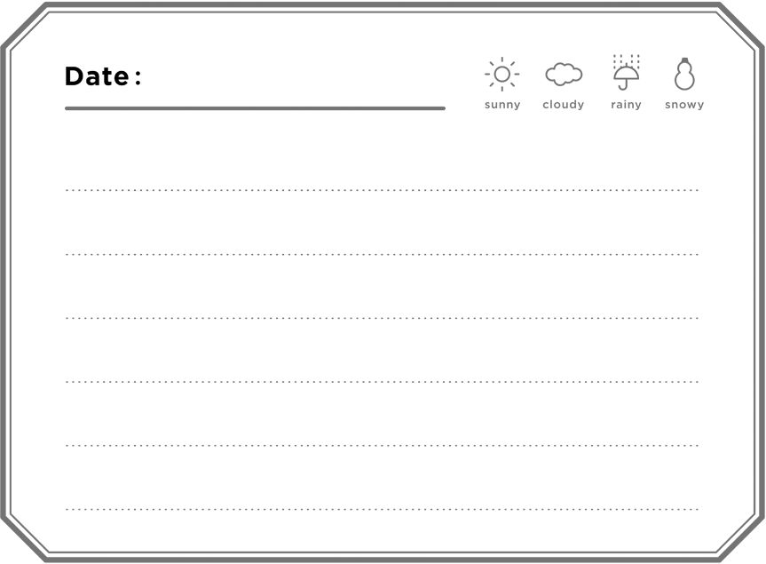
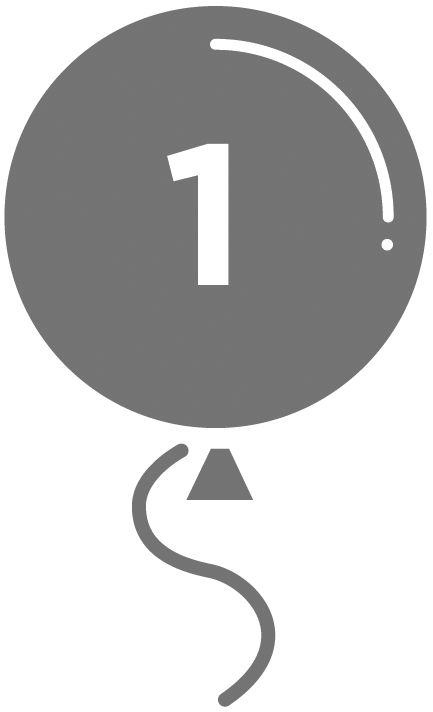

| 英語日記ドリル〔Complete〕 英語日記ドリルシリーズ | |
| 石原真弓 | |
| (2011) | |
参照項目から元の箇所に戻るには、お使いのビューワーの仕様に従ってください。または一旦目次を表示し、戻りたい箇所の近くの見出しをタップして戻ってください。
はじめに
私が英語で日記を書き始めたのは1991年のことです。
米国留学したのだから英語で書こうと、自分の英語力も考えずに軽い気持ちで始めた英語日記ですが、愛用している"5年連用日記帳"も、今では5冊目に入りました。お粗末だった当初の英語も、日常生活で見聞きした新しい表現を取り入れたり、習った文法を日記で生かしたりするうちに、少しずつ磨かれていったように思います。
今日では、TwitterやFacebook、ブログといったソーシャルメディアが登場し、身の回りのことをワンクリックで世界中に発信できる時代になりました。私自身もTwitterをやっている一人ですが、さまざまな国の人たちからコメントをもらったり、こちらからも他の人にコメントしたりすることで広がる、新しいコミュニケーションを楽しんでいます。
また、公開することで正しい文法への意識が高まり、ネイティブスピーカーの生きた英語に触れられる点にも魅力を感じています。英語日記は、このように世界とつながるための発信力を身に付ける第一歩としても、英語力をさらに向上させたいという人の日々の練習にも最適のツールであると言えるでしょう。
身の回りのことをインプットしたり、学んだことをアウトプットしながら、表現力、英語力を鍛えていく、そんな身近な英語日記学習法を生活に取り入れてみてはいかがでしょうか？
一日一行でも構いません。「継続は力なり」です。
気がついたら英語力がアップしていた、という日がくることを信じて、楽しみながら英語で日記を書いてみませんか？
2011年 石原真弓
C O N T E N T S
本当に英語力が上がる？ 何を書く？
英 語 日 記 Q ＆ A
「英語日記」にまつわる素朴なギモンに、石原先生が経験からお答えします！
Ｑ
英語で日記を書けば、本当に英語力がアップしますか？
↓
Ａ
はい、本当です。
よく使う表現が自然に身に付き、会話力も上がります。
日記には、他人に見せないという気安さがある反面、正しい英語で書けているのかチェックもされないという不安があるかもしれません。でも、完ぺきな英語でなくても効果はあります。実は、日記を書くという行為そのものが、英語に対する意識を敏感にし、英語をより吸収しやすい状態にしてくれるのです。
私の経験
英語で日記を書き始めた当初は、間違いや幼稚な表現ばかりだったり、日本語が交じったりすることもありました。そのうち、頻繁に使う表現が定着しているのを実感できるようになり、目や耳から入ってくる英語にも自然と注意を払うようになりました。そして気が付くと、過去に書いた英文を自分で添削できるまでに力がついていました。日記には次第にこなれた文が増え、日記に書いた表現を会話でも使うようになりました。
アドバイス
ふと振り返ったとき英語力がアップしている──それが英語日記の効果です。
Ｑ
いつ、どのくらい書いたらいいですか？
↓
Ａ
空いた時間に、1日1行でも OK です。
日記のよい点は、すべてが自由なところ。書く時間や場所、書く長さ、書く内容など、自分の英語レベルや生活スタイルに合わせて、好きなようにすればよいのです。
私の経験
私は寝る前に一日を振り返り、その日の出来事と感想を英語で4～5行書いています。また、時間に余裕があるときはブロック体で丁寧に書きますが、忙しいときは筆記体で走り書きします。5年分の日記を1冊に書ける「5年連用日記帳」を使っているので、空欄の日があると気になって、自然と毎日書く習慣が付きました。数日分の日記をまとめて書くこともありますが（笑）。
アドバイス
書く時間は、寝る前や家事の合間でもいいですし、会社で昼休みに書くのもいいですね。1日1行でも10行でも、その日の気分で構いません。
一番大切なのは続けることです。あなたに合った、無理のないスタイルで英語日記と付き合いましょう。
Ｑ
英語でどう表現すればいいか困ったら？
↓
Ａ
言いたいことを短くシンプルな日本語にするのがコツです。
書きたいことがあっても、英語での表現に行き詰まってしまうという難点が英語日記にはあります。特に、日本語の文をそのまま英語にしようとすると、文法知識や語彙力の壁にぶち当たって挫折しがちです。
私の経験
現状の英語力で何とか表現するために私が使ったのは、「短い日本語で考える」というテクニックです。英語にしにくいことは、「今日は...しました」「それは...でした」と、子どもの頃に書いた絵日記レベルのごくシンプルな日本語に変換すればいいのです。
アドバイス
例えば、「私は彼に手伝ってもらった」と言いたいとき、「...してもらった」で行き詰まる人もいるでしょう。でも「彼が私を手伝った」なら、He helped me. と簡単に言えますね。このように主語を置き換えてみるのも一つの手です。こういったテクニックを具体例を挙げ解説している「ライティング力UP講座」も、ぜひ参考にしてみてください。
Ｑ
書くことがなくて困ったときは？
↓
Ａ
普段から何げなくしていることに、目を向けてみましょう。
特別な出来事がなかった日には、日記に書くことがなくて困ることもあるでしょう。でも、身の回りのことを何でもいいから英語で書いてみようという気持ちで取り組んでみると、書く題材はいくらでも見つかりますよ。
私の経験
例えば、その日の起床時間、起きてからしたことだけでも、I got up at 8:30. I had breakfast. Then I cleaned my room. （8時半に起きた。朝食を食べた。それから部屋の掃除をした）と、あっという間に3文は書けます。また、何もせずにダラダラ過ごしてしまった日さえ、It was really hot today. I didn't feel like doing anything. I don't like summer. （今日はとても暑かった。何もする気がしなかった。夏は嫌いだ）と、そのことをありのままに書けば、数センテンスは書けますね。
アドバイス
特別な題材を探す必要はありません。日常の何げない行動や出来事を英語で書いてみましょう。それでも書くことを見つけられないときには、こちらで作成する「プロフィール」を参考に、自分の好きな物や事について書いてみるのもオススメです。好きな理由、好きになったきっかけなど、筆が進むこと請け合いです。
こ の 本 の 使 い 方
この本は、英語で日記を書いたり、会話に役立つ60の重要構文を、1ユニットに1つずつ学習していく書き込み式のドリルです。
1日1ユニットを目安に、無理のないペースで英語日記をはじめましょう。
英語日記ドリル
この本のメインコンテンツです。出来事のシンプルな描写から感情・思考の表現まで、全60ユニット用意されています。
 構文を確認する
構文を確認する
a. ユニットの核となる構文です。
b. 構文の用例のバリエーションが3つ示されています。 まず日本語と英文に目を通し、どんなことが表現できるのかを確認しましょう。
c. 構文の意味や使い方が、やさしく丁寧に解説されています。
d. 「入れ替え表現集」は、例文中の下線部との入れ替えが可能です。応用練習してみましょう。

「例えばこう書く」を読む
その日の構文を使った日記の例です。まず日本語を見て、自分ならどう英語で表現するかを考えてから、英文を確認するといいでしょう。
 自分の日記を書く
自分の日記を書く
その日の構文を使って、オリジナルの日記を書いてみましょう。「入れ替え表現集」や「例えばこう書く」を参考にしたり、自力で調べた英語表現を使ってみるのもいい練習になります。1文だけでもOKですし、書けるときにはもう少し長めの日記を書くことにも挑戦してみてください。
e. 日付の記入欄です。日付の書き方はこちらで説明しています。
f. その日の天気を記入してください。
sunny は「晴れた」という意味の形容詞です。
cloudy は「曇った」という意味の形容詞です。
rainy は「雨の」という意味の形容詞です。
snowy は「雪の」という意味の形容詞です。
g. 【真弓の一言】 石原先生のお気に入りの一言を集めました。 学習の励みにしたり、カードや手紙に添えたりするのもオススメです。
ライティング力UP講座
直訳にとらわれず、「書きたいこと」を英語にするための「発想力」を鍛えるレッスンです。学習者がつまずきやすいポイントを日記例で確認しながら、英語で書くのが楽になる表現テクニックを学びます。
課題を確認
まず、「書きたいこと」と「ここでつまずく！」に目を通します。お手本を見る前に、自分ならどんな英語にするか、どの部分がネックになりそうか、などを考えてみると良い練習になります。

英語を確認
お手本の英文を見て、どのような英語で表現されているか確認しましょう。
わからない単語は語注を参考にします。
解説を確認
解説を読み、日本語を直訳せずに「書きたいこと」を表現するための発想のコツを学び取りましょう。
お役立ちコラム＆語彙集
▼ コラム
英語日記を楽しく継続するためのアイデアや、日常で実践可能な学習法のアドバイスなどを取り上げた読み物です。
▼巻末付録 英語日記お役立ちワード ＆ フレーズ集
前置詞の使い方、日本の祝日や行事の表し方、仕事や家事などに関係する表現をまとめた用語集です。日記だけでなく、英会話でもどんどん使ってみましょう。
▼書きたいことが日本語で引ける 表現 INDEX
本書の構文、「入れ替え表現集」、「例えばこう書く」で紹介した表現、約1100を日本語で引くことができるリスト。
日本語だから、探している表現に素早くアクセスできます。
日 記 を 書 く 前 に
英語で日記を書き始める前に、基本的な英文の組み立て方と日付の書き方を押さえておきましょう。
あやふやな人は、慣れるまでこのページを参照しながら書いてみてください。
英文の組み立て方
STEP 1 「誰が＋どうした」
She smiled. → （彼女は微笑んだ）
I studied. → （私は勉強した）
英文を組み立てるときに必要なのは「誰（何）が＋どうした」、つまり「主語（She や I）＋動詞（smile や study）」です。日本語では主語をよく省略しますが、英語では必ず主語を入れます。
STEP 2 「誰が＋どうした＋何を」
I wrote aletter. → （私は手紙を書いた）
She cookedan omelet. → （彼女はオムレツを作った）
smile や study など「主語＋動詞」だけでも文が完成する動詞もありますが、write や cook のように動作の対象「何を」を必要とする動詞もあります。その場合は、「主語＋動詞」の後ろに「何を」を足しましょう。
STEP 3 「誰が＋どうした＋誰に＋何を」
I wroteDaniela letter. → （私はダニエルに手紙を書いた）
She cookedher sonan omelet. → （彼女は息子にオムレツを作った）
Step 2 の文に「誰に」を加えたい場合は、動詞の後に入れます。ちなみに、前置詞を使って言うこともできます（それぞれ、I wrote a letter to Daniel.、She cooked an omelet for her son.）ただし、動詞によって用いる前置詞が異なるので、紛らわしい場合は上記の例文のように書くといいでしょう。
日 付 の 書 き 方
英語と日本語とでは日付の書き方が異なります。
この機会に正しい書き方を確認しておきましょう。
年月日の場合
アメリカでは「月、日、コンマ（, ）、年」の順に書くのが一般的です。「月」は短縮形（こちら参照）を用いることもあります。
2011年8月3日 →
August 3, 2011（またはAug. 3, 2011）
月日と曜日の場合
「年」を省いて「曜日」を入れる場合は「曜日、コンマ（, ）、月、日」の順が一般的です。「月」「曜日」の両方を短縮形（こちら参照）にすることもあれば、どちらか一方だけを短縮形にすることもあります。
8月15日 月曜日 →
Monday, August 15（またはMon., Aug. 15 など）
月
1月 January (Jan.)
2月 February (Feb.)
3月 March (Mar.)
4月 April (Apr.)
5月 May
6月 June
7月 July
8月 August (Aug.)
9月 September (Sep./ Sept.)
10月 October (Oct.)
11月 November (Nov.)
12月 December (Dec.)
曜 日
月曜日 Monday (Mon.)
火曜日 Tuesday (Tue.)
水曜日 Wednesday (Wed.)
木曜日 Thursday (Thu.)
金曜日 Friday (Fri.)
土曜日 Saturday (Sat.)
日曜日 Sunday (Sun.)
【月、曜日】 →（ ）内は短縮形です。 短縮形にはピリオドが必要です。 【月】 → ただし、5～7月には、短縮形はありません。
プロフィールを書いてみよう
日記のウォーミング・アップです。 好きな物事や人物を中心に、あなた自身のプロフィールを作りましょう。 石原先生の回答を参考にしてください。
英語でどう書けばいいのかわからない項目は、日本語で記入しておいても構いません。日記に書くことが思いつかないときには、この中から題材を見つけて書いてみましょう。
名前 Your Name →
お手本
Mayumi Ishihara
石原真弓
関心のあること Your interests →
お手本
KAATSU training / aromatherapy / sewing / snowman goods
加圧トレーニング、アロマセラピー、裁縫、スノーマンのグッズ
特技 Things you're good at →
お手本
I'm pretty good at driving a stick shift. I'm really good at ironing shirts.
マニュアル車の運転は相当の腕前。シャツのアイロン掛けがすごく得意。
プチ自慢 Your little boast(s) →
お手本
I can keep a baseball scorebook. My body age is about 12 years younger than my actual age.
野球のスコアブックが付けられる。肉体年齢が実年齢より12歳若い。
好きな有名人 Your favorite celeb(s) →
お手本
Julia Roberts, Elle Woods (from the movie Legally Blonde)
ジュリア・ロバーツ、エル・ウッズ（映画『リーガリー・ブロンド』の登場人物）
尊敬する人 Person or people you respect →
お手本
my father, Mother Teresa
父、マザー・テレサ
宝物 Your treasure(s) →
お手本
my diaries, my thoughtful friends
日記、思いやりのある友人たち
自分の好きなところ Things you like about yourself →
お手本
being flexible, being positive-minded, being persevering
柔軟、前向き、辛抱強い
座右の銘 Your favorite motto or mottoes →
お手本
Where there's a will, there's a way.
「意志あれば道は開ける」
chapter_01
状態
物や事、自身の「状態」を「...だった」「...である」と描写してみましょう。
天気の話から聞きかじったニュースやゴシップのことまで書けるようになる構文を学習します。
1
「（天気）...だった」
It was ...
下線部 A、B はそれぞれ、下の「入れ替え表現集」の A ～ B と入れ替えが可能です。
今日は晴天だった。
It wassunny today.
夜は少し肌寒かった。
It was a littlechilly at night.
今朝、雨が降った。
Itrained this morning.
こんなことが書けます
天気を表す文は it を主語にしましょう。
①の「今日は晴天だった」なら、形容詞 sunny（晴れの）を用いて It was sunny today. とします。today（今日）のような「時」を表す言葉は、最後に来るのが一般的です。
また、a little（少し）などの「程度」を表す言葉は、②のように was の後ろに入れます。
③の It rained this morning.（今朝、雨が降った）のように、was を用いない表現もあります（入れ替え表現集〔B〕）。a little（少し）や a lot（たくさん）のような「程度」の表現を加えるなら、It rained a little.（少し雨が降った）のように、動詞の後ろに入れます。
入れ替え表現集
〔A〕
暖かい warm
暑い hot
風が心地よい breezy
風が強い windy
乾燥した dry
霧が深い foggy
曇った cloudy
寒い cold
じめじめした humid
涼しい cool
蒸し暑い muggy[mʌ́gi]
〔B〕
雷が鳴った
thundered（現在形は thunder）
雨が激しく降った
poured （現在形は pour）
霧雨が降った
drizzled（現在形は drizzle）
天気が良くなった
brightened up（現在形は brighten up）
雪が降った
snowed（現在形は snow）

日記を書こう！
「例えばこう書く」と「入れ替え表現集」を参考に日記を書いてみましょう。１文だけでも構いませんが、余裕のある人は少し書き足してみてもいいでしょう。
 例えばこう書く
例えばこう書く
2011年3月12日
今日はとても寒かった。風邪をひいたようだ。
↓
March 12, 2011
It was really cold today. I think I caught a cold.
語注
catch a cold: 風邪をひく。caught は catch の過去形

真弓の一言
Open the door. You may find a new you.
扉を開けてごらん。新しい自分が見つかるかもしれないよ。
2
「...だと聞いた・だそうだ」
I heard ...
下線部 A、B、C はそれぞれ、下の「入れ替え表現集」の A ～ C と入れ替えが可能です。
ユキコが妊娠していると聞いた。
I heardYukikois pregnant.
マサヤが入院したと聞いた。
I heardMasayawas hospitalized.
パソコンを修理するのに少なくとも１週間はかかるそうだ。
I heardit will take at leastone week to fix my computer.
こんなことが書けます
I heard ...（...だと聞いた・だそうだ）は、人から聞いたり、テレビやラジオで耳にしたりしたことなどを述べるときに便利です。
聞いた内容が現在のことなら①のように現在形、過去のことなら②のように過去形の文を ... に入れます。
③の「...するのに～（時間）かかる」は、it takes＋時間 + to ...（動詞の原形）で表します。
文法的には、heard の時制（過去形）に合わせて、それぞれ Yukiko was ...、Masaya had been ...、it would take ... とするのが正しいですが、口語では heard の時制を意識せず、例文のように表現するのが一般的です。
入れ替え表現集
〔A〕
その会社は評判がいい
the company has a good reputation
彼女の夫はとてもお金持ちだ
her husband is very rich
彼はルームメイトを探している
he is looking for a roommate
バリはいいリゾート地だ
Bali is a nice resort island
〔B〕
あのマンションは売れてしまった
that condominium was sold
彼女が宝くじを当てた
she won the lottery
彼らが結婚した
they got married
彼は恋人と別れた
he broke up with his girlfriend
〔C〕
週末に台風が日本に接近する
the typhoon will approach Japan this weekend
彼女が大学を辞める
she will quit college
若いカップルが隣に引っ越してくる
a young couple will move in next door
日記を書こう！
「例えばこう書く」と「入れ替え表現集」を参考に日記を書いてみましょう。１文だけでも構いませんが、余裕のある人は少し書き足してみてもいいでしょう。
例えばこう書く
2011年3月6日
若いカップルが隣に引っ越してきたと聞いた。いいご近所さんになるといいなぁ。あいさつしたほうがいいかしら。
↓
Mar. 6, 2011
I heard a young couple moved in next door. I hope they'll be nice neighbors. Maybe I should say hello to them.
語注
move in ...:...に引っ越してくる／neighbor: 隣人／Maybe I should ...: ...したほうがいいかな（→【 26 】）／say hello to ...: ...にあいさつする、...によろしく言う
真弓の一言
Spring always follows winter.
冬が終われば必ず春が来る。
3
「あまりに...だったので～できなかった」
─ was too ... to ～
下線部 A、B、C はそれぞれ、下の「入れ替え表現集」の A ～ C と入れ替えが可能です。
あまりに疲れていたので夕食を作れなかった。
I wastoo tiredto cook dinner.
そのカレーはあまりに辛かったので食べられなかった。
The curry wastoospicy to eat.
そのテレビ番組はあまりに怖くて独りでは見られなかった。
The TV program wastoo scaryto watch alone.
こんなことが書けます
「─ はあまりに...だったので～できなかった」は、─ was too ... to ～で表しましょう。主語には I や he、it などの代名詞や人名のほか、②や③のように物や事を表す名詞が来ます。
was の後には「あまりに...で～できない」という意味の too ...（形容詞）to ～（動詞の原形）が入ります。
例えば、「（私は）あまりに疲れていたので夕食を作れなかった」は、主語に I、was の後に too tired to cook dinner（あまりに疲れて夕食を作れない）を入れれば OK。
この構文は、not を使わずに「できなかった」という否定の意味を表せるのが特徴。覚えておくと便利ですよ。
入れ替え表現集
〔A〕
満腹過ぎてデザートが食べられない
too full to have dessert
あまりに頭にきて口がきけない
too upset to talk
恥ずかし過ぎて彼に話し掛けられない
too shy to talk to him
あまりにうれしくて眠れない
too excited to sleep
〔B〕
多過ぎて食べ切れない
too big to finish
あまりにおいしくて忘れられない
too good to forget
手間がかかり過ぎて家庭では作れない
too troublesome to cook at home
〔C〕
おかし過ぎて笑わずに見ることができない
too hilarious to watch without laughing
長過ぎて最後まで一気に見られない
too long to watch all at once until the end
あまりに暴力的で子どもとは一緒に見られない
too violent to watch with children
日記を書こう！
「例えばこう書く」と「入れ替え表現集」を参考に日記を書いてみましょう。１文だけでも構いませんが、余裕のある人は少し書き足してみてもいいでしょう。
例えばこう書く
2月27日 日曜日
今日、イシイ先生の講義に行った。
あまりに難しくて理解できなかった。
↓
Sunday, Feb. 27
I went to Mr. Ishii's lecture today. It was too hard to understand.
語注
I went to ...: ...へ行った（→【 8 】）／lecture: 講義
真弓の一言
Better late than never.
遅くてもしないよりはまし。
4
「まだ...している」
I'm still ...
下線部 A、B、C はそれぞれ、下の「入れ替え表現集」の A ～ C と入れ替えが可能です。
まだ怒っている。
I'm stillmad.
まだクミからのEメールを待っている。
I'm stillwaiting for ane-mail from Kumi.
相変わらずスポーツ愛好家だ。
I'm stillanathlete.
こんなことが書けます
自分が「まだ...している」や「まだ...である」と、ある状態が予想以上に続いていることを表すには、 I'm still ... を使います。... には形容詞（〔A〕）、動詞の -ing 形（〔B〕）、名詞（〔C〕）が入ります。
①のように「まだ怒っている」と言いたいなら、... に形容詞の mad（怒っている）を入れます。
②のように、「...を待っている」と言う場合は、動詞 wait for ... を -ing 形 で用いて、I'm still waiting for ... としましょう。
③のように ... に an athlete（スポーツ愛好家）などの名詞を入れると、「相変わらず...だ」と言うことができます。
入れ替え表現集
〔A〕
疲れきっている
exhausted
落ち込んでいる
depressed
熱っぽい
feverish
混乱している
confused
ショックを受けている
shocked
感謝している
grateful
ワクワクしている
thrilled
〔B〕
そのことを考えている
thinking about it
そのことを後悔している
regretting it
彼のことを応援している
cheering him on
この本を読んでいる
reading this book
風邪に対処している
fighting my cold
せきをしている
coughing
足が痛い
feeling a pain in my feet
〔C〕
学習者
a learner
初心者
a beginner
彼の友達
his friend
野球ファン
a baseball fan
マドンナの大ファン
a big fan of Madonna
本の虫
a bookworm
大食漢
a big eater
日記を書こう！
「例えばこう書く」と「入れ替え表現集」を参考に日記を書いてみましょう。１文だけでも構いませんが、余裕のある人は少し書き足してみてもいいでしょう。
例えばこう書く
5月11日 水曜日
まだ足が痛い。長時間歩くのには向かない靴だったんだと思う。
↓
Wednesday, May 11
I'm still feeling a pain in my feet. I guess the shoes weren't right for a long walk.
語注
feel a pain inone's ...: ...が痛い／feet: 足。foot の複数形／I guess ...: ...だと思う（→【 54 】）
真弓の一言
Whether life is better or bitter, it's totally up to you.
人生を楽しくするか苦しくするかは、すべて自分次第。
5
「昔は...だったなぁ」
I used to ...
下線部 A、B はそれぞれ、下の「入れ替え表現集」の A ～ B と入れ替えが可能です。
昔は夜更かしをしたなぁ。
I used tostay uplate at night.
昔はジャンクフードなんか食べなかったなぁ。
I never used toeatjunk food.
昔は頑固だったなぁ。
I used to bestubborn.
こんなことが書けます
過去を振り返り、「昔は...だったなぁ」と言うときは、I used to ...を用います。... には動詞の原形が入ります。
①の「昔は夜更かしをしたなぁ」なら、... に stay up late at night（夜更かしをする）を入れます。
「昔は（絶対に）...なんかしなかったなぁ」は②のように、I never used to ... で表すことができます。junk food とは、脂質や糖質が多く、栄養価の低い食品のことです。
③のように、かつての性格などについて述べる場合は、... に「be＋性格を表す形容詞（〔B〕）」を続けましょう。
入れ替え表現集
〔A〕
スキーに行く
go skiing
フライフィッシングに行く
go fly-fishing
書店で働く
work at a bookstore
大阪に住む
live in Osaka
乳製品を避ける
avoid dairy[dɛ́əri]products
パーマをかけている
have permed hair
髪を伸ばしている
have long hair
眼鏡を掛けている
wear glasses
ロックを聞く
listen to rock music
〔B〕
エネルギッシュな
energetic
多忙な
busy
社交的な
sociable
勤勉な
hardworking
けちな
stingy
厳格な
strict
横柄な
arrogant
時間に正確な
punctual
不精な
lazy
悲観的な
pessimistic
楽観的な
optimistic
もっとおとなしい
quieter
のんきな
easygoing
融通のきかない
inflexible
日記を書こう！
「例えばこう書く」と「入れ替え表現集」を参考に日記を書いてみましょう。１文だけでも構いませんが、余裕のある人は少し書き足してみてもいいでしょう。
例えばこう書く
2011年12月30日
部屋の掃除をしたら古い写真が出てきた。昔は毎週末スキーに行ったなぁ。
↓
December 30, 2011
I cleaned my room and happened to find some old pictures. I used to go skiing every weekend.
語注
happen to ...（動詞の原形）: 偶然...する／find ...: ...を見つける／go skiing: スキーに行く
真弓の一言
The truly happy person is the one who can enjoy the scenery off the main road.
回り道をしたときにその景色を楽しめる人こそが真の幸せ者。
6
「...してから～（期間）になる」
It's been ～ since ...
下線部 A、B はそれぞれ、下の「入れ替え表現集」の A ～ B と入れ替えが可能です。
禁煙してから１週間になる。
It's beenaweek sinceIquit smoking.
ここに引っ越してきてから１年になる。
It's beenayear sinceImoved here.
ケイコと知り合ってから15年以上になる。
It's beenover15 years sinceKeikoand I met.
こんなことが書けます
「...してから～（期間）になる」と、ある出来事が起きてから一定の期間がたったことを表すには、It's been ～ since ... を用います。この It's は It has の短縮形で、since は「...以来」という意味です。It's been ～ since ... の ～ には期間を表す語句〔A〕を、... には出来事を表す過去形の文（〔B〕）を入れましょう。
①の「禁煙してから1週間になる」は、～ に a week（1週間）を、... に I quit smoking （禁煙した）を入れれば OK。
③の「ケイコと（私が）知り合った」は、Keiko and I met と表現します。この meet（過去形は met）は「初めて会う」という意味です。
入れ替え表現集
〔A〕
2日
two days
丸1カ月
a full month
3カ月半
three and a half months
約半年
about half a year
もうすぐ8年
almost eight years
10年
a decade[dékeid]
長い間
a long time
ずいぶん長い時間
quite some time
〔B〕
アメリカから帰国した
I came back from the States
犬が逃げた
my dog ran away
髪を染めた
I dyed my hair
ダイエットを始めた
I went on a diet
運動のためウォーキングを始めた
I started walking for exercise
彼と最後に会った
I last saw him
この部署に異動した
I moved to this department
復職した
I went back to work
失業した
I lost my job
就職した
I started working
日記を書こう！
「例えばこう書く」と「入れ替え表現集」を参考に日記を書いてみましょう。１文だけでも構いませんが、余裕のある人は少し書き足してみてもいいでしょう。
例えばこう書く
8月27日 土曜日
アメリカから帰国してからもうすぐ8年になる。うわーっ、時がたつのは早いなぁ。
↓
Saturday, August 27
It's been almost eight years since I came back from the States. Wow, time flies!
語注
the States: アメリカ合衆国、アメリカ／wow: うわーっ／Time flies.: 時がたつのは早い、「光陰矢のごとし」
真弓の一言
The most important step toward success is to believe you can succeed.
成功するために一番大切なのは「自分ならできる」と信じること。
7
「...する余裕がない」
I can't afford ...
下線部 A、B はそれぞれ、下の「入れ替え表現集」の A ～ B と入れ替えが可能です。
休暇を取る余裕がない。
I can't affordavacation.
新車を買う余裕がない。
I can't affordto buya new car.
今月は外食をする余裕がない。
I can't affordtoeat out this month.
こんなことが書けます
「...する余裕がない」と言うときは、I can't afford ... と表します。時間的余裕と金銭的余裕のどちらにも使えます。... には名詞（〔A〕）、または「to＋動詞の原形」（〔B〕）を入れます。
①の「休暇を取る余裕がない」なら、...に名詞 a vacation（休暇）を入れます。to take a vacation（休暇を取る）と入れることもできます。
②と③は、... に「to＋動詞の原形」を入れる例です。②は「新車を買う余裕がない」を、to buy a new car としていますが、この文も、to buy を省略して、I can't afford a new car. のように名詞だけで表すことが可能です。
入れ替え表現集
新しい靴
a new pair of shoes
新しいコンピューター
a new computer
新しい電子辞書
a new electronic dictionary
新しい服
any new clothes
5つ星のホテル
a five-star hotel
大きなプラズマテレビ
a big plasma TV
海外旅行
a trip overseas
洗濯乾燥機
a washer-dryer
飛行機代
the airfare
休み
a day off
家賃
the rent
〔B〕
理髪店へ行く
to go to a barber
車を修理に出す
to take my car to a mechanic
ジムの会員資格を更新する
to renew my gym membership
旅行をする
to take a trip
飛行機で帰省する
to go home by air
学費を払う
to pay the school fees
ローンを支払う
to make a loan payment
彼に１杯おごる
to buy him a drink
新しい服を探しに行く
to check out new clothes
日記を書こう！
「例えばこう書く」と「入れ替え表現集」を参考に日記を書いてみましょう。１文だけでも構いませんが、余裕のある人は少し書き足してみてもいいでしょう。
例えばこう書く
6月20日 月曜日
毎日雨が降っている。乾燥機付きの洗濯機が欲しいな。でも、高くてそんな余裕がない。
↓
Monday, June 20
It's raining every day. I want a washer-dryer. But it's expensive and I can't afford one.
語注
rain: 雨が降る／washer-dryer: 乾燥機付き洗濯機、洗濯乾燥機／expensive: 高価な
真弓の一言
Focus on the good things in life, not on the bad.
悪いことよりも良いことに気持ちを向けよう。
発想を転換して、脱・直訳！
ライティング力UP講座
英語で日記を書いていると、「これ英語でなんて言うんだろう？」と悩むこともあるはず。
ここでは、直訳にとらわれずに「書きたいこと」をやさしい英語で表現するテクを学びます。
CASE ① 会社員／ケンさんの場合
書きたいこと
2月5日 木曜日
今日は風邪でダウン。会社を休んで家で安静にしたけど、まだ少し目まいがする。明日は仕事を休めないなぁ。
ここでつまずく！
「安静にする」ってなんて言ったらいいだろう？ 「まだ少し目まいがする」はどう表せばいいのかな...。
こう書く
↓
Thursday, February 5
I had a bad cold today. I took a day off and had a good rest at home, but I'm still feeling a little dizzy. I can't afford to miss work tomorrow.
語注
take a day off: 仕事を休む／rest: 休息／feel dizzy: 目まいがする、フラフラする／miss work: 欠勤する
文目は「ひどい風邪をひいた」と考えて、I had a bad cold today. とするとよいでしょう。風邪や熱などの症状は、have を使って表します。
「（会社を）休む」は take a day off、「安静にする」は have a good rest と表します。「休む」の関連表現として、be absent（欠席［欠勤］する）、take a break（休憩する）も一緒に覚えておくといいですね。
「まだ少し目まいがする」は 、「まだ...している」の I'm still ...（→【 4 】）を使って書くことができます。feel dizzy で「目まいがする」という意味です。「少し」と程度を示す a little を dizzy の前に置いて、I'm still feeling a little dizzy とすれば OK です。
「仕事を休めない」は I can't afford ...（→【 7 】）を使うと、単純に I can't ... とするより、「休みたくても休めない」という感じを出すことができます。
miss work は2文目に出てきた take a day off 同様、「仕事を休む」という意味ですが、「出社の意欲はあるものの、事情があって行けない」というニュアンスがあります。このように違う言葉で言い換え、同じ表現の繰り返しを避けると、より洗練された日記になりますよ。
CASE ② 学生／ユウジさんの場合
書きたいこと
8月28日 日曜日
今日は卒論の実験をした。眠気覚ましに、途中でアイスを買って食べた。期限まであまり時間がない。もっとスピードを上げなきゃ。
ここでつまずく！
「眠気覚ましに」「途中で」はどう表したらいいだろう？ 「...まであまり時間がない」は？
こう書く
↓
Sunday, August 28
I did an experiment for my graduation thesis. I got sleepy, so I took a break and had some ice cream. I don't have much time before the deadline. I need to speed up.
語注
experiment: 実験／graduation thesis［θíːsis］: 卒業論文／get sleepy: 眠くなる／break: 休憩／deadline: 期限、締切／speed up: スピードを上げる
験をする」は do an experimentと言います。「卒論の実験」なので、an experiment for my graduation thesis（卒論のための実験）と表します。
「眠気覚ましに、途中でアイスを買って食べた」は、文を分けて考えましょう。「眠くなったので休憩を取った」「そしてアイスを買って食べた」と解釈するといいでしょう。「眠くなったので休憩を取った」は、I got sleepy, so I took a break と、so（だから）でつなげて表現できます。「途中で」は、話の流れからわかるので、特に訳さなくて構いません。また、「アイスを買って食べた」は、単に「アイスを食べた」と表せば十分です。このように、なくても意味の通じる言葉を思い切って省くことも、英語日記を書くコツです。また、ここでは「食べる」を have で表していますが、eat を用いることも可能です。
「期限までにあまり時間がない」の「...まで」は till でも by でもなく、before で表します。I を主語にして I don't have much time before ... とするほか、There isn't much time before ... と表すことも可能です。
和製英語のわなについては後ほど【ライティング力UP講座④ CASE②】でも触れますが、「スピードを上げる」には、「スピードアップする」＝ speed upが使えます。
column
英語圏にはない日記に天気を書く習慣
記」といえば、日付と天気から書くものという印象が強いと思いますが、英語圏では天気を書く習慣がありません。たいていの場合、April 7（4月7日）のように日付だけを書くか、Monday, April 7（4月7日 月曜日）のように日付と曜日を書いて日記の本文に入ります。日本で日記に天気を書く習慣があるのは、日本には四季の変化があり、農耕民族の日本人はもともと天気への関心が高かったためとも考えられています。
実際、私が今使っている「5年連用日記帳」にも天気を書く欄があり、私は毎日その欄を埋めています。beautiful（快晴）や cloudy（曇り）、chilly（肌寒い）のように単語を書くこともあれば、13℃のように気温を書くこともあります。また、雨の日は傘の絵を、雪が降った日は雪だるまの絵を描くこともあります。そのときの気分によって書き方は異なりますが、何らかの形で天気を記すようにしています。
日記に天気を記すかどうかは個人の自由でよいと思います。そもそも、日記そのものがプライベートなものなので、自分の好きなように書けばよいでしょう。ただ、天気を毎日書き続けると天気に関する語彙が増えるのは事実です。勉強のうち、と思って書いてみてもいいですね。
chapter_02
行動
１つでさまざまな「行動」について書くことができる、オールマイティーな構文を学びます。
「...へ行った」や「...を食べた」など、日記に欠かせない基本的な表現をしっかり押さえましょう。
8
「...へ行った」
I went to ...
下線部 A、B、C はそれぞれ、下の「入れ替え表現集」の A ～ C と入れ替えが可能です。
鎌倉へ行った。
I went toKamakura.
運動をしにジムへ行った。
I went tothe gymto work out.
夕食（を食べ）に祖母の家へ行った。
I went tomy grandmother'shouse for dinner.
こんなことが書けます
「...へ行った」は、I went to ...（場所）で表します。
②のように、「...をしに」と理由や目的を表す場合は、場所の後に「to＋動詞の原形」を続けます。「運動をしにジムへ行った」なら、I went to the gym の後に to work out を続ければ OK。work out は「運動をする、体を鍛える」という意味です。ジムや図書館など、いつも同じ場所を利用する場合は、「the＋場所」としましょう。
理由や目的は、③のように、「for＋名詞」で表すこともできます。dinner（夕食）を lunch（昼食）や a memorial service（法事）などと入れ替えることも可能です。
入れ替え表現集
〔A〕
ニューヨーク
New York
会社
the office
学校
school
銀行
the bank
上野公園
Ueno Park
マクドナルド
McDonald's[məkdɑ́nəldz]
冬物セール
a winter sale
映画（館）
the movies
〔B〕
薬を買いにドラッグストア
a drugstore to buy some medicine
DVDを返却にレンタル店
the DVD rental store to return some DVDs
友達を見舞いに病院
the hospital to visit my friend
バードウォッチングをしに公園へ
the park to watch birds
〔C〕
食料品の買い出しでスーパー
a supermarket for groceries
定期健診を受けに歯医者
the dentist for my regular checkup
髪を切りに美容院
the hair salon for a hair cut
本を借りに市の図書館
the city library for a book
ペンキを買いにホームセンターへ
a do-it-yourself store for some paint
日記を書こう！
「例えばこう書く」と「入れ替え表現集」を参考に日記を書いてみましょう。１文だけでも構いませんが、余裕のある人は少し書き足してみてもいいでしょう。
例えばこう書く
3月21日 月曜日
上野公園へ桜を見に行った。とてもきれいだった。
↓
Monday, March 21
I went to Ueno Park to see the cherry blossoms. They were very beautiful.
語注
Ueno Park: 上野公園／cherry blossoms: 桜の花
真弓の一言
There is no shortcut to success.
成功に近道はない。
9
「...を食べた」
I had ...
下線部 A、B、C はそれぞれ、下の「入れ替え表現集」の A ～ C と入れ替えが可能です。
家族と鍋料理を食べた。
I hadnabe with my family.
昼食にメキシコ料理を食べた。
I hadMexican food for lunch.
今日は朝食を食べなかった。
I didn't havebreakfast today.
こんなことが書けます
食事は、I had ...を用います。この had は、eat（...を食べる）の過去形 ate と同じ意味です。飲み物にも I had が使えます。
①の「鍋料理」は、ローマ字でnabe とするか、（a） hot-pot と英訳すれば OK。食事を共にした人のことは、with ...（人）を使って表現します。
②の Mexican food（メキシコ料理）のように、「国名の形容詞＋food」で「○○料理」と表現できます。for lunch の lunch を breakfast や dinner に替えると、「朝食に」「夕食に」と言うことができます。
朝食などを抜いた場合は、③のように、I didn't have ...（...を食べなかった）と否定文で表しましょう。
入れ替え表現集
〔A〕
すき焼き
sukiyaki
宅配ピザ
home-delivered pizza
日曜のブランチ
Sunday brunch
誕生日の食事
a birthday dinner
クリスマスディナー
Christmas dinner
フルコースディナー
a full-course dinner
〔B〕
韓国料理
Korean food
スペイン料理
Spanish food
バーベキュー
abarbecue<BBQ>
定食
a meal set
バイキング
a buffet meal
軽めの食事
a light meal
サラダ
salad
スパゲティ
spaghetti
カレー
curry
点心
dim sum
ファストフード
fast food
ポテトチップ1袋
a bag of potato chips
〔C〕
昼食
lunch
夕食
dinner
間食
a snack
デザート
dessert
コーヒー
coffee
お酒
a drink
日記を書こう！
「例えばこう書く」と「入れ替え表現集」を参考に日記を書いてみましょう。１文だけでも構いませんが、余裕のある人は少し書き足してみてもいいでしょう。
例えばこう書く
2011年12月26日
朝食にヨーグルトを食べた。健康的だけど、私には物足りなかったな。会社ですごくお腹空いちゃった！
↓
December 26, 2011
I had yogurt for breakfast. It was healthy, but it was not enough for me. I was so hungry at work!
語注
for breakfast: 朝食に／yogurt: ヨーグルト／healthy: 健康的な／not enough: 物足りない／hungry: 空腹で／at work: 会社で、職場で
真弓の一言
Be proud of yourself.
自分自身に誇りを持とう。
10
「...をやってみた」
I tried ...
下線部 A、B はそれぞれ、下の「入れ替え表現集」の A ～ B と入れ替えが可能です。
ゴルフをやってみた。
I triedgolf.
バンクーバーで乗馬をやってみた。
I triedhorseback riding in Vancouver.
昨日、新しいカフェに行ってみた。
I triedthenew cafe yesterday.
こんなことが書けます
スポーツなど「...をやってみた」は I tried ... で表してみましょう。スポーツの名称は、語尾が -ing 形になっているものが多いですね。「アイススケート」を ice skate などと書かないよう気を付けましょう。
また、③のように tried の後ろに場所を表す言葉を続けると、「...に行ってみた」という意味になります。Thai food（タイ料理）や a German beer（ドイツビール）のように食べ物や飲み物を表す言葉なら「...を食べてみた・飲んでみた」、a massage chair（マッサージチェア）のように物なら「...を使ってみた」など、いろいろな意味に使えるので、便利ですよ。
入れ替え表現集
〔A〕
アイススケート
ice skating
スキューバダイビング
scuba diving
サイクリング
cycling
スキー
skiing
スノーボード
snowboarding
ジョギング
jogging
エアロビクス
aerobics
ベリーダンス
belly dancing
ヨガ
yoga
釣り
fishing
バンジージャンプ
bungee jumping
〔B〕
新しいプール
the new swimming pool
人気のタイ料理レストラン
the popular Thai restaurant
地中海料理
Mediterranean[mèdətəréiniən]food
玄米
brown rice
ドイツビール
a German beer
フランスワイン
a French wine
新しい清涼飲料水
a new soft drink
電子辞書
an electronic dictionary
マッサージチェア
a massage chair
日記を書こう！
「例えばこう書く」と「入れ替え表現集」を参考に日記を書いてみましょう。１文だけでも構いませんが、余裕のある人は少し書き足してみてもいいでしょう。
例えばこう書く
10月25日 火曜日
ヨガをやってみた。体がすごく軽くなった。今夜はよく眠れそうな気がする。
↓
Tuesday, Oct. 25
I tried yoga. My body felt really light. I feel I can sleep better tonight.
語注
yoga: ヨガ／my body feels ...: 体が...な感じがする／light: 軽い／sleep better: よく眠れる。sleep well の well を比較級の better にすることで、「いつもよりよく眠れる」というニュアンス
真弓の一言
Treasure each encounter.
出会いを大切に。
11
「...できなかった」
I couldn't ...
下線部 A、B はそれぞれ、下の「入れ替え表現集」の A ～ B と入れ替えが可能です。
それを時間内に終わらせることができなかった。
I couldn'tfinishit in time.
昨夜はよく眠れなかった。
I couldn'tsleepvery well last night.
上司に何も言えなかった。
I couldn'tsayanything to my boss.
こんなことが書けます
期待や予定通りにいかなかったことは、I couldn't ...（動詞の原形）で表します。couldn't はcould not の短縮形で、could は can の過去形です。
例えば、①の「それを時間内に終わらせることができなかった」なら、... に finish it in time を入れます。in time は「時間内に」という意味です。
②の last night（昨夜）のように、「時」に関する言葉は、文末に持ってきます。
③の「上司に何も言えなかった」は、say anything（何か言う）の後に、to my boss（上司に）を続ければ OK です。
入れ替え表現集
〔A〕
小説を読み終える
finish reading the novel
出掛ける
go out
家族と夕食を食べる
eat dinner with my family
大事なサッカーの試合をテレビで見る
watch the big soccer game on TV
犬を散歩に連れていく
take my dog for a walk
ネックレスを見つける
find my necklace
4人用のテーブルを予約する
book a table for four
自分の目を信じる
believe my eyes
〔B〕
Eメールを送る
send an e-mail
謝る
apologize
うまく説明する
explain it well
口答えする
talk back
その出来事をすぐに報告する
report the incident immediately
朗報をもたらす
bring good news
日記を書こう！
「例えばこう書く」と「入れ替え表現集」を参考に日記を書いてみましょう。１文だけでも構いませんが、余裕のある人は少し書き足してみてもいいでしょう。
例えばこう書く
6月8日 水曜日
アキコにシフォンケーキのレシピをもらった。試してみたかったけど、シフォンケーキの型がそろわなかった。今週末、買いに行こうっと。
↓
Wednesday, June 8
Akiko gave me her recipe for chiffon cake. I wanted to try it, but I couldn't find a tube cake pan. I'll go buy one this weekend.
語注
recipe: レシピ、作り方／chiffon cake: シフォンケーキ／tube cake pan: シフォンケーキの型／go buy ...: ...を買いに行く
真弓の一言
Successful people never cease to strive.
成功者は決して努力を惜しまない。
12
「...し忘れた」
I forgot to ...
下線部はそれぞれ、下の「入れ替え表現集」の語句と入れ替えが可能です。
彼女に電話し忘れた。
I forgot tocall her.
今日、銀行に行き忘れた。
I forgot togo to the bank today.
また手紙を出し忘れた。
I forgot tomail the letter again.
こんなことが書けます
「...し忘れた」は I forgot to ...（動詞の原形）で表します。
①のように、「彼女に電話し忘れた」と言いたいなら、... に call her（彼女に電話する）を入れれば OK です。
②のように「今日、銀行に行き忘れた」と言いたいときは、... に go to the bank（銀行に行く）を入れてから、today（今日）を続けましょう。today の代わりに、during the lunch break（昼休みに）や on the way home（帰宅途中に）などを用いると、より具体的に表現できますよ。
③のように、最後に again（再び）を付けると、「あ～あ、また忘れちゃった」というニュアンスを出すことができます。
入れ替え表現集
目覚まし時計をセットする
set the alarm clock
腕時計を着ける
put my watch on
傘を持っていく
take my umbrella with me
玄関の鍵をかける
lock the front door
ごみを出す
take out the trash
ネコに餌をやる
feed my cat
日焼け止めを塗る
put sunscreen on
フライトの確認をする
confirm my flight
弁当を持っていく
take my lunch
ブログを更新する
update my blog
図書館の本を返却する
return the library books
スーツをクリーニングに出す
take my suit to the dry cleaner's
歯医者の予約を入れる
make a dental appointment
彼女にEメールアドレスを教える
give her my e-mail address
彼にパーティーのことを話す
tell him about the party
食後に薬を飲む
take my medicine after eating
日記を書こう！
「例えばこう書く」と「入れ替え表現集」を参考に日記を書いてみましょう。１文だけでも構いませんが、余裕のある人は少し書き足してみてもいいでしょう。
例えばこう書く
7月12日 火曜日
今日、日焼け止めを塗り忘れたから、日焼けした。しまった！
↓
Tuesday, July 12
I forgot to put sunscreen on today, so I got suntanned. Darn!
語注
put ... on: ...を塗る／sunscreen: 日焼け止め／so: だから／get suntanned: 日焼けする／Darn!: しまった！
真弓の一言
Life is tough, but I'm tougher.
人生は厳しいけど、私はへこたれない。
13
「～ぶりに...した」
... for the first time in ～
下線部 A、B はそれぞれ、下の「入れ替え表現集」の A ～ B と入れ替えが可能です。
３年ぶりにペギーから連絡をもらった。
I heardfrom Peggy for the first time inthreeyears.
私たちは10年以上ぶりに集まった。
Wegot together for the first time inover10 years.
久しぶりに故郷へ帰った。
I went backto my hometown for the first time inages.
こんなことが書けます
「～ぶりに...した」は「～の間で初めて...した」と考えてみましょう。これをそのまま訳すと、... for the first time in という簡単な英語で表現できます。... には初めてしたことを過去形の文（〔A〕）で入れ、～には期間を表す語句（〔B〕）を入れます。
①の「3年ぶりにペギーから連絡をもらった」なら、... に I heard from Peggy（ペギーから連絡をもらった）を入れて、in の後ろに three years（3年）を続けましょう。
②の「～以上ぶりに」は、over ～ と表します。
また、③のように ages（長い間）を用いれば、「久しぶりに」というニュアンスを表現できますよ。
入れ替え表現集
〔A〕
海で泳いだ
I swam in the ocean
家族と旅行をした
I traveled with my family
東京ディズニーランドへ行った
I went to Tokyo Disneyland
登山をした
I climbed a mountain
ボウリングへ行った
We went bowling
すしを食べた
I atesushi
映画館で映画を見た
I watched a movie in a theater
夕食に客を招いた
We invited guests for dinner
職場の人たちと飲んだ
I had a drink with people at work
〔B〕
しばらく
a while
数カ月
months
数年
years
半年
half a year
ほぼ7年
nearly seven years
丸1年
a full year
約5年
about five years
4カ月
four months
日記を書こう！
「例えばこう書く」と「入れ替え表現集」を参考に日記を書いてみましょう。１文だけでも構いませんが、余裕のある人は少し書き足してみてもいいでしょう。
例えばこう書く
1月20日 木曜日
2年ぶりに同僚とボウリングに行った。意外にも、ターキーが出た！ やった!!
↓
Thursday, Jan. 20
My co-workers and I went bowling for the first time in two years. Surprisingly, I got a turkey! YES!!
語注
co-worker: 同僚／surprisingly: 意外にも／turkey: （ボウリングの）ターキー。3回連続のストライク／Yes!: やった！ ここでは大文字で YES!! と強調している。
真弓の一言
Life without pain has no meaning.
苦労のない人生なんて意味がないよ。
14
「結局...してしまった」
I ended up ...-ing
下線部はそれぞれ、下の「入れ替え表現集」の語句と入れ替えが可能です。
結局飲み過ぎてしまった。
I ended updrinking too much.
結局深夜過ぎに帰宅してしまった。
I ended upgetting back home after midnight.
結局そのコートは買わなかった。
I ended up notgetting the coat.
こんなことが書けます
意思や予定に反して「結局...してしまった」という場合は、I ended up ...（動詞の -ing 形）で表します。
①の「（あまり飲むつもりではなかったのに）結局飲み過ぎてしまった」なら、動詞 drink を -ing 形にして、drinking too much です。
②の「（早く帰りたかったけれど）結局深夜過ぎに帰宅してしまった」の「帰宅する」は getting back homeとします。
「（するつもりだったのに）結局...しなかった」は、③の I ended up not ...（動詞の -ing 形）で表すことができます。「そのコートを買わなかった」は、not getting the coat とすれば OK です。
入れ替え表現集
1日中テレビを見る
watching TV all day
その雑誌を講読する
subscribing to the magazine
食べ過ぎる
eating too much
ピザの宅配を頼む
ordering delivery pizza
高価な指輪を買う
buying an expensive ring
クレジットカードを使う
using a credit card
外出してクラブで踊る
going out and dancing at a club
テニスクラブに入会する
joining the tennis club
徹夜する
staying up all night
タクシーで行く
taking a taxi
クミの家に一晩泊まる
spending a night at Kumi's house
昼まで寝る
sleeping till noon
最後に会社を出る
leaving the office last
残業する
working late
仕事を変える
changing my job
両方の集まりに出席する
attendingboth gatherings<either gathering（③の場合）>
日記を書こう！
「例えばこう書く」と「入れ替え表現集」を参考に日記を書いてみましょう。１文だけでも構いませんが、余裕のある人は少し書き足してみてもいいでしょう。
例えばこう書く
4月16日 土曜日
今日は部屋を掃除するつもりだったけれど、結局１日中テレビを見てしまった。明日は必ず掃除しようっと。
↓
Saturday, April 16
I was going to clean my room today, but I ended up watching TV all day. I'll clean it tomorrow for sure.
語注
be going to ...（動詞の原形）: ...するつもりである（→【 16 】）／clean ...: ...を掃除する、きれいにする／all day: 1日中／I'll ...: ...をしようっと（→【 18 】）／for sure: 必ず、確実に
真弓の一言
Opportunity is out there. Successful people notice it, grab it, and stick with it.
チャンスはそこにある。成功する人は、それに気づいて、つかんで離さない。
15
「...せずにはいられなかった」
I couldn't help ...-ing
下線部はそれぞれ、下の「入れ替え表現集」の語句と入れ替えが可能です。
笑わずにはいられなかった。
I couldn't helplaughing.
上司の考えに反対せずにはいられなかった。
I couldn't helpobjecting to my boss's idea.
そのことを考えずにはいられない。
I can't helpthinking about it.
こんなことが書けます
「...せずにはいられなかった」は、I couldn't help ...（動詞の -ing 形）で表します。
①の「笑わずにはいられなかった」なら、... に laugh（笑う）の -ing 形を入れて、I couldn't help laughing. とします。
②の「上司の考えに反対せずにはいられなかった」は、objecting to my boss's idea を使って表現しましょう。object to ... は「...に反対する、抗議する」という意味です。
「...せずにはいられない」と、現在のことを言う場合は③のように、couldn't を can't に換えれば OK です。
入れ替え表現集
彼女の顔を見る
looking at her face
彼らの会話を立ち聞きする
overhearing their conversation
二度見する
doing a double take
その番組を最後まで見る
watching the show until the end
彼の手紙を何度も読み返す
reading his letter over and over
愚痴を言う
complaining
彼女に同情する
feeling sorry for her
感銘を受ける
feeling impressed
自分に腹が立つ
feeling mad at myself
そのことを後ろめたく感じる
feeling guilty about it
間違いを指摘する
pointing out the mistake
カッとなる
getting upset
興奮する
getting excited
腹の中で笑う
laughing to myself
その様子を思い浮かべる
picturing it
他人におせっかいを焼く
meddling in the affairs of others
日記を書こう！
「例えばこう書く」と「入れ替え表現集」を参考に日記を書いてみましょう。１文だけでも構いませんが、余裕のある人は少し書き足してみてもいいでしょう。
例えばこう書く
3月18日 金曜日
次期店長に選ばれた。めちゃくちゃうれしい！ そのことをエリコに話さずにはいられなかった。
↓
Friday, March 18
I was chosen to be the next store manager. I'm so excited. I couldn't help telling Eriko about it.
語注
be chosen to be ...: ...に選ばれる
真弓の一言
Don't think that there will be a second chance. Give it your all the first time.
チャンスは2度あると思わないこと。最初に全力を尽くそう。
発想を転換して、脱・直訳！
ライティング力UP講座
一見英語にしにくそうな日本語の文を英訳する第一歩は、日本語を見直すことです。
英文ライティングに役立つ、日本語の解体・再構築のテクニックを学びましょう。
CASE ① 会社員／マミさんの場合
書きたいこと
12月9日 金曜日
今日、同僚をわが家に招待して鍋パーティーをした。みんなで作ったキムチ鍋は最高においしかった。次は豆乳鍋パーティーを計画中。
ここでつまずく！
「みんなで作ったキムチ鍋」はどう表せばいいのかな？
こう書く
↓
Friday, December 9
I had a nabe party with my co-workers at my house. We made akimchi-nabe together. It was really delicious. We're planning to have atonyu-nabe party next time.
語注
co-worker: 同僚／together: 一緒に／delicious: とてもおいしい
文目は、「招待して」の部分を省いて、「わが家で同僚と鍋パーティーをした」と文を組み立て直したほうがスッキリしていいですね。同僚は co-worker と言います。一見表現しにくそうな日本語も、大抵は「誰が＋どうした＋（with）誰と＋（at）どこで」というパターンに落とし込むことができます。
「みんなで作ったキムチ鍋は最高においしかった」の「みんなで作ったキムチ鍋」でつまずきそうですが、こうした長めの言葉は、2つに分けて考えれば大丈夫です。「みんなで一緒にキムチ鍋を作った」「それは最高においしかった」と考え、We made akimchi-nabe together. It was really delicious. のように表現できます。「一緒に」を強調したいときは together を使いましょう。「最高に」は「とてもおいしい」と言えばいいですね。
「次は豆乳パーティーを計画中」の「計画中」は、「...を計画している」と考えます。 I'm planning to ...（→【 17 】） の主語を we に変えて、We are planning to have atonyu-nabe party next time. と表現しましょう。
「豆乳」は soy milk と言いますが、料理名の英語がわからない場合は、nabe、tonyu-nabe などローマ字にするだけでも構いません。
CASE ② 主婦／レイコさんの場合
書きたいこと
4月20日 水曜日
ナオコが15年ぶりに遊びに来た。昼ごはんと焼きたてのクッキーをふるまった。大学時代の話ですごく盛り上がった。
ここでつまずく！
「...ぶり」はどう訳す？「焼きたてのクッキーをふるまう」というニュアンスを出したいのだけど...。
こう書く
↓
Wednesday, April 20
Naoko came to my house for the first time in 15 years. I made lunch and baked cookies for us. We talked a lot about our college days. We had a great time.
語注
make lunch: 昼食を作る／bake ...: ...を焼く／have a great time: 楽しむ、素晴らしい時を過ごす
びに来た」は「私の家に来た」と表します。「遊びに来た」を直訳して came to play としないこと。play は子どもの遊びのニュアンスだからです。
「...ぶりに」は for the first time in ...（→【 13 】）と表現します。「...（の期間）で初めて」が直訳です。例えば、「1週間ぶりにナオコに会った」なら、I met Naoko for the first time in a week. という具合です。
「焼きたてのクッキー」は I baked cookies（クッキーを焼いた）とすれば、この日のために焼いた、つまり「焼きたて（手作り）」であることが伝わりますね。「ふるまった」は特に訳す必要はありませんが、あえて表すなら、最後に for us（私たちのために）を加えれば OK。ナオコのために焼いたのなら for her（彼女のために）ですが、自分も一緒につまんだという状況なら for us とするのがよいでしょう。
最後の文は、分けて考えましょう。「私たちは大学時代の話をたくさんした」「とても楽しかった」と考えて、We talked a lot about our college days. We had a great time. とすれば、「盛り上がった」という言葉を使わなくても表現できます。
column
楽しく続ける日記のアイデアいろいろ
記」と聞けば「三日坊主」という言葉を連想する人も少なくないと思います。何事もそうですが、最初から無理な目標を掲げてしまうと、負担になり挫折しがちです。「脱・三日坊主」を目指すなら、「これなら続けられそう」というペースの設定が大切です。
続けると言っても、無理して毎日書くことはありません。週に一度書くだけでも長い目で見れば継続していることになります。特別なことをしたときだけ書く、週末に1週間を振り返って書く、などいろいろ試してみて、自分に合うペースをつかみましょう。
日記を書くモチベーションの一つとして、好みの日記帳や筆記具を用意するのもオススメです。猫好きな私の生徒さんは、ピンクの表紙にかわいい猫のシールを貼ってオリジナルの日記帳を作りました。その特別な日記帳を開く時間が楽しみになり、一度は挫折した英語日記が、今回は続いているそうです。
また、スケジュール帳を利用するのも手です。「meeting 13:00（午後1時打ち合わせ）」、「calligraphy（習字）」のように予定を英語で書くようにすると、身の回りの「もの」「こと」を表す語彙が増えていきます。空いたスペースに日記を書けばいいですね。あなただけの英語日記ライフを楽しくスタイリングしてみましょう。
chapter_03
予定、意志、すべきこと
すでに終わった出来事だけでなく、計画や決意など、これからのことも日記に書いてみましょう。
「予定」「意志」「すべきこと」を表現するための構文を学習します。
16
「...するつもりだ」
I'm going to ...
下線部 A、B はそれぞれ、下の「入れ替え表現集」の A ～ B と入れ替えが可能です。
この夏は南アルプスに登るつもりだ。
I'm going toclimb theSouth Alps this summer.
この週末は海に行かない。
I'm not going togo tothe beach this weekend.
今夜、『ライオンキング』を見に行くつもりだったが、行かなかった。
I was going tosee"Lion King" tonight, but I didn't.
こんなことが書けます
予定や意志について述べる「...するつもりだ」は、I'm going to ...（動詞の原形）で表します。
①の「南アルプスに登るつもりだ」なら、I'm going to climb the South Alps です。南アルプスのような「山脈」は、the＋複数形にします。時を表す this summer は文末に置きます。
「...しない」「...するつもりはない」は、②の I'm not going to ...（動詞の原形）の形を用いれば OKです。
③のように am を was に替えて I was going to ... とすると、「...するつもりだった（が、しなかった・できなかった）」という意味になります。but 以下は省略可能です。
入れ替え表現集
〔A〕
仕事を探す
look for a job
引っ越す
move
富士山に登る
climb[kláim] Mt. Fuji
素潜りを習得する
master skin diving
ホームステイをする
go on a homestay
台湾の友人を訪ねる
visit my friend in Taiwan
3週間の休暇を取る
take three weeks of vacation
〔B〕
町を離れる
go out of town
友人と集まる
get together with my friends
旅行に出掛ける
leave on a trip
ジムで汗を流す
work out at the gym
洗濯をする
do the laundry[lɔ̀ːndri]
DVD を借りる
rent a DVD
庭の草むしりをする
weed my garden
日記を書こう！
「例えばこう書く」と「入れ替え表現集」を参考に日記を書いてみましょう。１文だけでも構いませんが、余裕のある人は少し書き足してみてもいいでしょう。
例えばこう書く
2011年8月3日
今日はとても風が強かった。 庭の草むしりをしたかったけど、できなかった。明日やるつもりだ。
↓
August 3, 2011
It was so windy today. I wanted to weed my garden, but I couldn't. I'm going to do it tomorrow.
語注
windy: 風が強い／weed: ...の雑草を抜く／garden: 庭
真弓の一言
You have a 1000-watt smile.
君の笑顔は1000ワット。
17
「...する予定だ」
I'm planning to ...
下線部はそれぞれ、下の「入れ替え表現集」の語句と入れ替えが可能です。
家を買う予定だ。
I'm planning tobuy a house.
来月、実家に行く予定だ。
I'm planning togo to my parents' house next month.
大学に進学する予定はない。
I'm not planning togo on to college.
こんなことが書けます
あらかじめ計画してきた事柄を述べるには、I'm planning to ...（動詞の原形）が使えます。「...する予定だ」や「...するつもりである」という意味です。
①の「家を買う予定だ」なら、... に buy a house（家を買う）を入れて、I'm planning to buy a house. とすれば OK。
計画をいつ実行するのかを表す「時」の表現（ここでは next month《来月》）は、②のように文末に置きましょう。
③のように、I'm not planning to ...（動詞の原形）を使えば、「...する予定はない」や「...するつもりはない」と述べることができます。
入れ替え表現集
調理師免許を取る
get a cooking license
休暇を取る
take a vacation
携帯電話を替える
change my cellphone
眼鏡をコンタクトレンズに替える
replace my glasses with contact lenses
髪の色を変える
change my hair color
ピアノを習う
learn the piano
試験を受ける
take a test
別の仕事を始める
start another job
一人暮らしをする
live alone
引っ越す
move out
犬を飼う
get a dog
海外に移住する
emigrate abroad
留学する
study abroad
彼女にプレゼントを送る
send her a present
彼の誕生パーティーに出席する
attend his birthday party
妹を家に泊まりにくるよう招待する
invite my sister to stay over my house
日記を書こう！
「例えばこう書く」と「入れ替え表現集」を参考に日記を書いてみましょう。１文だけでも構いませんが、余裕のある人は少し書き足してみてもいいでしょう。
例えばこう書く
5月6日 金曜日
歯列矯正をする予定だ。すてきな笑顔を手に入れたいな。
↓
Fri., May 6
I'm planning to have my teeth straightened. I want to have a nice smile.
語注
haveone's teeth straightened: 歯列矯正をする。イタリック体のone's の場所には、その文の主語（ここでは I）の所有格人称代名詞（ここでは my）が入ります／I want to ...: ...したいなぁ（→【 44 】）
真弓の一言
With you around, everything is special.
あなたがいれば、何もかもがスペシャル。
18
「...をしようっと・するぞ」
I'll ...
下線部 A、B、C はそれぞれ、下の「入れ替え表現集」の A ～ C と入れ替えが可能です。
彼にクッキーを焼いてあげようっと。
I'llbake himsome cookies.
今週末は部屋を掃除しようっと。
I'llcleanmy room this weekend.
よ～し、お金をためてフランスへ行くぞ。
OK, I'llsave some moneyand go to France.
こんなことが書けます
ふと「...しようっと」と思い付いたことは、I'll ... で表しましょう。I'll は I will の短縮形で、... には動詞の原形が入ります。
②の「今週末は部屋を掃除しようっと」なら、I'll clean my room this weekend. となります。this weekend のような「時」を表す語句は、日本語につられて文頭に入れてしまいがちですが、文末に入れた方が自然です。
③のように OK, I'll ... とすると、「（よ～し、）...するぞ」という意気込みの強さを表現できますよ。「お金をためてフランスへ行く」のように、2つの動作を1文で述べる場合は、動詞を and でつなげば OK です。
入れ替え表現集
〔A〕
自分専用のパソコンを買う
buy my own computer
彼にそのニュースを教える
tell him the news
彼女に新しい自転車を見せる
show her my new bike
彼にもっと注意を払う
pay more attention to him
仕事に集中する
focus on my career
〔B〕
あのワンピースを買う
buy that dress
もっと仕事を頑張る
work harder
何かおいしいものを作る
cook something delicious
ゴルフを1ラウンドする
play a round of golf
温泉に行く
go to a hot spring
〔C〕
おしゃれをして出掛ける
dress up and go out
韓国へ行って本場の韓国料理を食べる
go to South Korea and try real Korean food
一晩中 DVD を見る
watch DVDs all night long
広東語を習得する
master Cantonese
日記を書こう！
「例えばこう書く」と「入れ替え表現集」を参考に日記を書いてみましょう。１文だけでも構いませんが、余裕のある人は少し書き足してみてもいいでしょう。
例えばこう書く
2011年12月18日
ある講演に行った。講演者は50歳で翻訳家になった。必死で努力すれば、何だってできると思った。よ～し、もっと仕事を頑張ろうっと。
↓
December 18, 2011
I went to a lecture. The lecturer became a translator at 50. I think anything is possible if you try hard enough. OK, I'll work harder.
語注
lecture: 講演、講義／lecturer: 講演者／translator: 翻訳家／possible: 可能な、できる／try: やってみる、努力する
真弓の一言
There's no rehearsal for life.
人生にリハーサルはない。
19
もし～だったら...しよう
If ～, I'll ...
下線部 A、B、C はそれぞれ、下の「入れ替え表現集」の A ～ C と入れ替えが可能です。
もし明日、晴れだったら、布団を干そう。
If it's sunny tomorrow, I'llairthe futon.
もし明日、まだ具合が悪かったら、医者に行こう。
If I still feel sick tomorrow, I'llgo tothe doctor.
もし彼女が忙しくなかったら、映画に誘おう。
If she's not busy, I'llask her outto the movies.
こんなことが書けます
「もし～だったら...しよう」と、自分の行動が状況次第であることを表現するときは、If ～（現在形の文）, I'll ...（動詞の原形）を用います。～には、tomorrow（明日）などの未来を表す語句を入れても動詞は現在形です。この点に注意しましょう。
例えば①の「もし明日、晴れだったら」なら、If の後ろに it's sunny tomorrow と現在形で続けます。
③のように「もし～でなかったら」と言いたいときには、If の後ろの文を否定文にします。「～を...に誘う」という意味の ask ～（人）out to ... は、会話でもよく使われる表現です。
入れ替え表現集
〔A〕
日帰りで旅行をする
go on a day trip
ドライブで遠出する
go for a long drive
子どもたちを動物園に連れて行く
take my kids to the zoo
洗濯をする
do the laundry
犬を洗う
bathe my dog
庭仕事をする
do some yardwork
〔B〕
病欠の連絡をする
call in sick
薬を飲む
take medicine
安静にしている
stay in bed
お母さんに来てもらう
ask Mom to come over
約束をキャンセルする
cancel the appointment
〔C〕
ランチに誘う
ask her out to lunch
仕事の後で会う
meet her after work
ショッピングモールに連れて行く
take her to the mall with me
子守を頼む
ask her to baby-sit
家事を手伝ってもらう
ask her to help me with the housework
日記を書こう！
「例えばこう書く」と「入れ替え表現集」を参考に日記を書いてみましょう。１文だけでも構いませんが、余裕のある人は少し書き足してみてもいいでしょう。
例えばこう書く
8月24日 水曜日
会社のそばに小さなボクシングジムを見つけた。ボクササイズのクラスもある。明日もし時間があったら、仕事の後で寄ってみよう。
↓
Wed., August 24
I found a small boxing gym near our office. They have boxercise classes. If I have time tomorrow, I'll drop in after work.
語注
boxing gym: ボクシングジム／boxercise: ボクササイズ／have time: 時間がある／drop in: 立ち寄る
真弓の一言
You don't need to be number one; just be the only one.
1番にならなくても、ただオンリーワンになればいいんだよ。
20
「何があっても...するつもりだ」
No matter what, I will ...
下線部 A、B、C はそれぞれ、下の「入れ替え表現集」の A ～ C と入れ替えが可能です。
何があっても、彼女を支えるつもりだ。
No matter what, I willsupport her.
何があっても、英語を勉強しにイギリスへ行くつもりだ。
No matter what, I willgo to Englandto study English.
何があっても、9時までに電車に乗るつもりだ。
No matter what, I willget on atrain by 9 a.m.
こんなことが書けます
「何があっても...するつもりだ」という強い意志は、No matter what, I will ... と表します。no matter what は no matter what happens（何が起きても）を略した形で、... には動詞の原形を入れます。
①の「何があっても、彼女を支えるつもりだ」は、... に support her（彼女を支える）を入れればいいですね。
②なら、... に go to England to study English を入れます。「...しに」という理由や目的は、to ...（動詞の原形）で表しましょう。
③のように、「...までに」と言うときは、by を使って、by 9 a.m.（≪朝≫9時までに）のように表現しましょう。
入れ替え表現集
〔A〕
資格（免許）を取る
get the qualification
絶対にあきらめない
never give up
入学試験に合格する
pass the entrance exam
彼を信用する
trust him
〔B〕
通訳になるため一生懸命勉強する
study hard to become an interpreter
新しいカウチの置き場所を作るためがらくたを処分する
get rid of the junk to make room for a new couch
節約のため自転車で通勤する
cycle to work to save money
このドレスが着られるようやせる
lose weight to fit into this dress
〔C〕
公開初日に映画を見に行く
go to see that movie on the opening day
今週末に洗濯を片付ける
finish the laundry this weekend
毎日、日記を書く
write in my diary every day
最終日までにピカソの展覧会を見に行く
go to see the Picasso exhibition before the last day
日記を書こう！
「例えばこう書く」と「入れ替え表現集」を参考に日記を書いてみましょう。１文だけでも構いませんが、余裕のある人は少し書き足してみてもいいでしょう。
例えばこう書く
1月5日 水曜日
教えることは私の天職だ。英語の教師という仕事が楽しい。何があっても、教えることを続けるつもりだ。
↓
Wednesday, January 5
Teaching is my vocation. I enjoy my job as an English teacher. No matter what, I will continue to teach.
語注
vocation: 天職／continue to ...（動詞の原形）: ...し続ける
真弓の一言
There's no royal road to learning.
学問に王道なし。
21
「...することにした」
I decided to ...
下線部はそれぞれ、下の「入れ替え表現集」の語句と入れ替えが可能です。
フランス語を習うことにした。
I decided tolearn French.
この冬、ニューヨークに行くことにした。
I decided tovisit New York this winter.
彼女とはもう会わないことにした。
I decided not tosee her any more.
こんなことが書けます
「...することにした」という決心は、I decided to ...（動詞の原形）で表せます。例えば①の「フランス語を習うことにした」なら、... に learn French（フランス語を習う）を入れれば OK。
②の this winter（この冬）のように、実行するつもりの時期を表す表現は、最後に置きます。
③のように「...しないことにした」と言うには、not を to の前に入れます。「彼女とはもう会わないことにした」なら、I decided not to see her any more. となります。最後に「これ以上」という意味の any more を付けると、この not と呼応して、「もう...しない」と言うことができます。
入れ替え表現集
アルバイトをする
work part-time
父の仕事を継ぐ
take over my father's business
故郷に帰る
return to my hometown
クラス会に出席する
attend the class reunion
別荘を購入する
buy a vacation home
ボーナスを貯金する
put my bonus in the bank
宝くじを買う
buy lottery tickets
自動車学校に通う
go to a driving school
司法試験を受ける
take the bar exam
手術を受ける
have surgery[sə́ːrdʒəri]
歯の治療を受ける
get the dental treatment
禁煙する
give up smoking
そのダイエット法を試す
try the weight-loss method
菜食主義になる
adopt a vegetarian diet
スキーを始める
take up skiing
マラソン大会に出る
participate in a marathon
日記を書こう！
「例えばこう書く」と「入れ替え表現集」を参考に日記を書いてみましょう。１文だけでも構いませんが、余裕のある人は少し書き足してみてもいいでしょう。
例えばこう書く
7月2日 土曜日
今日、お気に入りのピンクの水着を試しに着てみたけど、少しきつかった。だから、ダイエットをすることにした。
↓
Saturday, July 2
I tried on my favorite pink swimsuit today, but it was a bit tight. So I decided to go on a diet.
語注
try on ...: （服など）を試しに着てみる／favorite: お気に入りの／swimsuit: 水着／a bit: 少し／tight: （衣服などが）きつい／go on a diet: ダイエットをする
真弓の一言
Learning new things is so wonderful.
新しいことを学ぶのは、とてもステキ。
22
「─は...することになっている」
─ is supposed to ...
下線部 A、B、C はそれぞれ、下の「入れ替え表現集」の A ～ C と入れ替えが可能です。
ユウコは明日6時に到着することになっている。
Yuko is supposed toarrive at6 tomorrow.
セリーヌ・ディオンの新しいアルバムはまもなく発売されることになっている。
Celine Dion's new album is supposed tocomeout soon.
私は今夜、テツと会うことになっている。
I am supposed tomeetTetsu tonight.
こんなことが書けます
「─は...することになっている」は、─is supposed to ... で表します。─には主語を、... には動詞の原形を入れます。
①なら、─に Yuko を、... に arrive at 6 を入れます。時刻は at ... で表します。
主語は、②の Celine Dion's new album（セリーヌ・ディオンの新しいアルバム）のように、物でも OK。come out は「（CD や本などが）発売される」という意味です。
③のように主語が I（私）の場合は、is を am に変えて、I am supposed to ... と使います。ちなみに主語が You なら are を使い、You are supposed to ... となります。
入れ替え表現集
〔A〕
2カ月後に子どもが生まれる
have a baby in two months
私と買い物に来る
come shopping with me
うちの子犬を1匹もらってくれる
adopt one of our puppies
迎えに来てくれる
pick me up
電話をくれる
call me
〔B〕
人気がある
be popular
チャートの1位になる
be top of the charts
彼女の最高傑作になる
be her best ever
おまけのDVDが付く
come with a bonus DVD
現在ヒット中のシングル曲が入る
contain the current hit single
〔C〕
彼を空港まで迎えに行く
pick him up at the airport
ピクニックを企画する
organize a picnic
明日、フリーマーケットに行く
go to a flea market tomorrow
夕食を作る
fix dinner
1週間入院する
be in the hospital for a week
日記を書こう！
「例えばこう書く」と「入れ替え表現集」を参考に日記を書いてみましょう。１文だけでも構いませんが、余裕のある人は少し書き足してみてもいいでしょう。
例えばこう書く
10月6日 木曜日
キヨミが2カ月後に赤ちゃんを出産する。わくわくするわ。安産だといいな。
↓
Thursday, Oct. 6
Kiyomi is supposed to have a baby in two months. I'm excited. I hope she has an easy delivery.
語注
in two months: 2カ月後に／I hope ...: ...だといいなぁ（→【 47 】）／have an easy delivery: 安産する
真弓の一言
Having met you when I did is my treasure.
あの時あなたに出会えたことが何よりの宝物。
23
「...しなくてはならない」
I have to ...
下線部 A、B、C はそれぞれ、下の「入れ替え表現集」の A ～ C と入れ替えが可能です。
明日、本を返さなくてはならない。
I have toreturnthe books tomorrow.
本当に出費を抑えなくてはならない。
I really have tocut downon my spending.
今日は残業しなくてはならなかった。
I had toworkovertime today.
こんなことが書けます
「...しなくてはならない」には、I have to ...（動詞の原形）を用います。
①の「明日、本を返さなくてはならない」なら、... に return the books（本を返す）を入れ、最後に「時」を表す言葉 tomorrow（明日）を持ってくれば OK です。
②のように「本当に...しなくてはならない」と、必要性を強調する really は、have to の前に置き I really have to ... とします。
③のように「...しなくてはならなかった」と言うには、have を過去形にし、I had to ... とすれば OK。会話では、have to は「ハフトゥ」、had to は「ハットゥ」のように発音するので注意しましょう。
入れ替え表現集
〔A〕
彼にお金を返す
pay him back the money
レポートを提出する
hand in the papers
旅行会社に問い合わせをする
contact my travel agent
ホテルを予約する
make a hotel reservation
早く起きる
get up early
〔B〕
お酒を控える
refrain from drinking
もっと慎重に運転する
drive more carefully
文句を言うのをやめる
stop complaining
バランスの取れた食事をする
eat a balanced diet
スケジュールについていく
keep up with the schedule
〔C〕
タクシーで帰宅する
come home by taxi
平静を保つ
stay calm[kɑ́ːm]
彼女を迎えに行く
pick her up
子どもたちを叱る
scold my kids
犬の散歩をする
walk my dog
日記を書こう！
「例えばこう書く」と「入れ替え表現集」を参考に日記を書いてみましょう。１文だけでも構いませんが、余裕のある人は少し書き足してみてもいいでしょう。
例えばこう書く
11月28日 月曜日
明日は朝5時半に出るつもりだ。だから今夜は早く寝なきゃいけない
↓
Monday, November 28
I'm going to leave at 5:30 a.m. tomorrow. So I have to go to bed early tonight.
語注
I'm going to ...: ...するつもりだ（→【 16 】）／leave: 出発する／tonight: 今夜
真弓の一言
All experts were at one time beginners.
どんな達人だって最初は初心者。
24
「...しないといけない」
I need to ...
下線部 A、B、C はそれぞれ、下の「入れ替え表現集」の A ～ C と入れ替えが可能です。
切手を買わないといけない。
I need tobuysome stamps.
本当にしっかり勉強しないといけない。
I really need tostudy hard.
明日、レストランの予約をしないといけない。
I need tomake arestaurant reservation tomorrow.
こんなことが書けます
「...しないといけない」は、I need to ...（動詞の原形）で表します。I have to ...（...しなければならない）ほど強い義務感はありませんが、意味はほぼ同じです。
①の「切手を買わなくてはいけない」なら、... に buy some stamps（切手を買う）を入れれば OK。
②のように「本当に...しないといけない」と強調するには、need の前に really（本当に）を入れます。
③の「明日、レストランの予約をしないといけない」と言う場合は、まず、make a restaurant reservation（レストランの予約をする）と入れた後に「時」を表す tomorrow を続けます。
入れ替え表現集
〔A〕
ごみを分別する
separate the garbage
冬物をしまう
put away my winter clothes
彼女の E メールに返信する
reply to her e-mail
子どもたちの話にもっと耳を傾ける
listen more to my children
確定申告をする
file my income tax return
〔B〕
もっと良い仕事を見つける
find a better job
休養を取る
take a rest
クローゼットを整理する
organize my closet
規則正しい生活をする
regulate my daily life
〔C〕
お金を下ろす
withdraw some money
クリーニング屋に服を持っていく
take some clothes to the dry cleaner's
郵便局で荷物を受け取る
pick up my package from the post office
車にガソリンを入れる
put gas in my car
飼い猫を獣医に連れて行く
take my cat to the vet
日記を書こう！
「例えばこう書く」と「入れ替え表現集」を参考に日記を書いてみましょう。１文だけでも構いませんが、余裕のある人は少し書き足してみてもいいでしょう。
例えばこう書く
2011年1月6日
やばい。今週末、ダブルブッキングしちゃった。どちらかの約束をキャンセルするいい言い訳を思い付かなきゃ。
↓
January 6, 2011
Uh-oh. I have double-booked myself this weekend. I need to come up with a good excuse to cancel one of the appointments.
語注
Uh-oh: おっと、やばい。発音は「オッオゥ」／double-bookoneself: ダブルブッキングする、予約を重複して入れる。／have double-bookedは現在完了形／come up with ...: ...を思い付く／excuse: 言い訳／appointment: 約束
真弓の一言
The key to happiness is to be able to be happy with what you've got.
いまの自分に満足することが幸せへの秘訣。
25
「（絶対に）...したほうがいい」
I'd better ...
下線部 A、B はそれぞれ、下の「入れ替え表現集」の A ～ B と入れ替えが可能です。
彼に助言を求めたほうがいい。
I'd betterask himfor some advice.
10時までに空港に着いたほうがいい。
I'd betterget to theairport by 10.
脂肪分の多いものを食べないほうがいい。
I'd better noteatfatty food.
こんなことが書けます
「（絶対に）...したほうがいい」は、I'd better ...（動詞の原形）で表します。I'd は I had の短縮形です。
①の「（絶対に）彼に助言を求めたほうがいい」なら、... に ask him for some advice（彼に助言を求める）を入れて、I'd better ask him for some advice. とします。
②の get to ... は「...に着く」、by ～ は「～までに」という意味です。
「（絶対に）...しないほうがいい」と否定文にするには、③のように、I'd better の後に not を入れましょう。
had better は強い助言や忠告、強制を表すので、会話の際、目上の人には言わないよう注意しましょう。
入れ替え表現集
〔A〕
たばこの本数を減らす
cut down on cigarettes
医者の言うことを聞く
listen to my doctor
健康管理をしっかりする
take good care of my health
彼らのことには関わらない
stay out of their business
リサイタルに向けてピアノの練習をする
practice my piano for the recital
目を休ませる
give my eyes a rest
早く寝る
go to bed early
〔B〕
お金を無駄にする
waste money
朝食を抜く
skip breakfast
暗がりで本を読む
read in the dark
車のスピードを出し過ぎる
drive too fast
カフェインを取り過ぎる
take too much caffeine[kæfíːn]
働き過ぎる
work too hard
無理をする
push myself too hard
夜更かしをする
go to bed late
日記を書こう！
「例えばこう書く」と「入れ替え表現集」を参考に日記を書いてみましょう。１文だけでも構いませんが、余裕のある人は少し書き足してみてもいいでしょう。
例えばこう書く
2月11日 金曜日
最近、肌が荒れてきた。ストレスは肌トラブルの原因になると聞いた。リラックスする方法を見つけなきゃ。
↓
Fri., Feb. 11
My skin is getting rough these days. I heard stress can cause skin problems. I'd better find a way to relax.
語注
get rough: （肌などが）荒れる／I heard ...: ...だと聞いた（→【 2 】）／stress: ストレス／cause ...: ...の原因になる、...を引き起こす／a way to ...: ...する方法／relax: リラックスする
真弓の一言
If you think you can, you can. If you think you can't, you can't.
できると思えばできるし、できないと思うとできないもの。
26
「...したほうがいいかも」
Maybe I should ...
下線部 A、B はそれぞれ、下の「入れ替え表現集」の A ～ B と入れ替えが可能です。
医者に診てもらったほうがいいかも。
Maybe I shouldseea doctor.
明日、彼女に電話したほうがいいかも。
Maybe I shouldcall her tomorrow.
コーヒーを飲み過ぎないほうがいいかも。
Maybe I shouldn'thave toomuch coffee.
こんなことが書けます
「...したほうがいいかも」は、Maybe I should ...（動詞の原形）で表します。最善の策かどうかわからないけれど、そうしてみようかな、というニュアンスです。
①の「医者に診てもらったほうがいいかも」なら、... に see a doctor（医者に診てもらう）を入れます。
②の「明日、彼女に電話をしたほうがいいかも」なら、... に call her を入れ、その後に tomorrow（明日）を続けます。「時」に関する言葉は最後に持ってきます。
③のように、「...しないほうがいいかも」と否定文で表すには、should を shouldn't（＝should not）にしましょう。
入れ替え表現集
〔A〕
会社に電話する
call the office
車にスノータイヤを付ける
put snow tires on my car
携帯電話を買う
get a cellphone
上司と話す
speak with my boss
たばこをやめる
quit smoking
ひげをそり落とす
shave off my beard
彼の謝罪を受け入れる
accept his apology
娘を励ます
encourage my daughter
眼鏡を買う
get a pair of glasses
もっと野菜を食べる
eat more vegetables
〔B〕
夜遅くに電話する
call late at night
ニキビをつぶす
pop my pimples
心配し過ぎる
worry too much
彼の話を真に受ける
take him seriously
息子に小言を言う
nag my son
寝る前に食べる
eat before bedtime
何時間もコンピューターゲームをする
play computer games for hours
日記を書こう！
「例えばこう書く」と「入れ替え表現集」を参考に日記を書いてみましょう。１文だけでも構いませんが、余裕のある人は少し書き足してみてもいいでしょう。
例えばこう書く
2011年12月16日
来週末、トモミと長野へ行くことにした。車にスノータイヤをつけたほうがいいかも。
↓
Dec. 16, 2011
Tomomi and I decided to go to Nagano next weekend. Maybe I should put snow tires on my car.
語注
I decided to ...（動詞の原形）: ...することにした（→【 21 】）／snow tire: スノータイヤ。雪道走行用の特殊なタイヤを指す
真弓の一言
Don't measure your success in life with others'.
他人と比べて自分の人生を評価するのはよくないよ。
27
「...したほうがいいかなぁ」
I wonder if I should ...
下線部 A、B はそれぞれ、下の「入れ替え表現集」の A ～ B と入れ替えが可能です。
ノート型パソコンを買ったほうがいいかなぁ。
I wonder if I shouldbuy alaptop computer.
彼女に会うのをやめたほうがいいかなぁ。
I wonder if I shouldstopseeing her.
言い訳はしないほうがいいかなぁ。
I wonder if I shouldn'tmakean excuse.
こんなことが書けます
「...したほうがいいかなぁ」は、I wonder if I should ...（動詞の原形）を使うと、行動に移すべきか迷い、自問自答している感じが出せます。
例えば①の「ノート型パソコンを買ったほうがいいかなぁ」は、buy a laptop computer（ノート型パソコンを買う）を入れれば OK です。
②の「...するのをやめる」は stop ...（動詞の -ing形）で OK。stop to ...（動詞の原形）だと、「...するために立ち止まる」と異なる意味になります。
③のように「...しないほうがいいかなぁ」と言うときは、I wonder if I shouldn't ... とします。shouldn't は should not の短縮形です。「言い訳をする」は make an excuse です。
入れ替え表現集
〔A〕
彼とその問題を話し合う
discuss the problem with him
彼女に謝る
apologize to her
彼にはっきり言う
tell him straight
その仕事を引き受ける
accept the job
旅行を取りやめる
cancel the trip
両親の近くに住む
live closer to my parents
退職後の備えを始める
start saving for retirement
電車で行く
go by train
〔B〕
インターネットに長時間費やす
spend so much time on the Internet
そんな小さなことを気に病む
worry about such a small thing
彼女の名前をリストに載せる
put her name on the list
夢をあきらめる
give up on my dream
彼の前でその話題を持ち出す
bring up the subject in front of him
夜遅い時間に食べる
eat late at night
日記を書こう！
「例えばこう書く」と「入れ替え表現集」を参考に日記を書いてみましょう。１文だけでも構いませんが、余裕のある人は少し書き足してみてもいいでしょう。
例えばこう書く
9月15日 木曜日
リックがまたデートに遅れて来た。それさえなければ、とてもいい人なのに。彼にはっきり言ったほうがいいかなぁ。
↓
Thursday, September 15
Rick came late for our date again. Aside from that, he's such a nice person. I wonder if I should tell him straight.
語注
come late for ...: ...に遅れて来る／aside from ...: ...を除けば／tell ... straight: ...にはっきり言う
真弓の一言
Where there's a will, there's a way.
意志があれば道は開ける。
28
「...してもいいかな」
I might as well ...
下線部はそれぞれ、下の「入れ替え表現集」の語句と入れ替えが可能です。
彼女と一緒に行ってもいいかな。
I might as wellgo with her.
接待ゴルフをしてもいいかな。
I might as wellplay golf with my clients.
彼の引っ越しを手伝ってもいいかな。
I might as wellhelp him move.
こんなことが書けます
「しないよりはしたほうがいいかな」と自分の意志を控えめに表現するときには、I might as well ...（動詞の原形）が使えます。
①の「彼女と一緒に行ってもいいかな」なら、... に go with her（彼女と一緒に行く）を入れて、I might as well go with her. とします。
②の「接待ゴルフをしてもいいかな」は、... に play golf with my clients （取引先とゴルフをする）を入れます。
③の「彼の引越しを手伝ってもいいかな」なら、... に help him move（彼の引越しを手伝う）を入れましょう。help＋～（人）＋ ...（動詞の原形）で「～（人）が...するのを手伝う」という意味です。
入れ替え表現集
家で食べる
eat at home
彼女に付き合って家にいる
keep her company at home
会議に参加する
participate in the conference
彼をディズニーランドに連れて行く
take him to Disneyland
歯医者に行く
go to the dentist
今夜は勉強をする
study tonight
今夜はテレビを見る
watch TV tonight
テレビを見ながら洗濯物を畳む
fold the laundry while watching TV
冷蔵庫を買い替える
replace my old refrigerator
プレゼンの練習をする
practice the presentation
企業に履歴書を送る
submit my résumé to the company
子どもが本を選ぶのを手伝う
help my child choose some books
妻の料理を手伝う
help my wife cook
アイロンがけをする
do some ironing
日記を書こう！
「例えばこう書く」と「入れ替え表現集」を参考に日記を書いてみましょう。１文だけでも構いませんが、余裕のある人は少し書き足してみてもいいでしょう。
例えばこう書く
4月12日 火曜日
ユキがずっと遊園地に行きたいと言っている。週末にディズニーランドへ連れて行ってもいいかな。
↓
Tuesday, April 12
Yuki keeps saying she wants to go to an amusement park. I might as well take her to Disneyland this weekend.
語注
keep ...（動詞の -ing 形）: ...し続ける／amusement park: 遊園地／take ... to～: ...を〜に連れて行く
真弓の一言
Whether your dreams come true depends on your effort.
夢を実現できるかどうかは努力次第。
29
「...しておけばよかった・すべきだった」
I should've ...
下線部 A、B はそれぞれ、下の「入れ替え表現集」の A ～ B と入れ替えが可能です。
昨日のうちにチケットを買っておけばよかった。
I should'vebought theticket yesterday.
もっと早く運転免許を取っておけばよかった。
I should'vegotten mydriver's license earlier.
あんなにたくさん食べなきゃよかった。
I shouldn't haveeatenthat much.
こんなことが書けます
「...しておけばよかった」という後悔の気持ちは、I should've ... で表します。should've は should have の短縮形で、... には動詞の過去分詞形が続きます。
①の「昨日のうちにチケットを買っておけばよかった」なら、buy の過去分詞形 bought を用いて表します。「昨日のうちに」は単に「昨日」と考えればOK。
②の「運転免許を取る」は、get my driver's license。 get の過去分詞形は、gotten または got です。my は a でも構いません。
「...しなきゃよかった」は③のように、shouldn't have＋過去分詞形で表すことができます。
入れ替え表現集
〔A〕
父さんに相談する
asked my dad for his advice
歯科検診を受ける
had a dental checkup
部屋の掃除をする
cleaned my room
もう少し待つ
waited a little longer
もっと貯金をする
saved more money
昨日のうちにレポートを書く
written the report yesterday
もっと早く出社する
come to the office earlier
〔B〕
クレジットカードをたくさん使う
used my credit card so much
彼女に電話番号を教える
given her my phone number
うわさを信じる
believed the gossip
彼を責める
blamed him
夕食後にコーヒーを飲む
had coffee after dinner
昨晩、夜更かしをする
stayed up late last night
授業を欠席する
missed the class
日記を書こう！
「例えばこう書く」と「入れ替え表現集」を参考に日記を書いてみましょう。１文だけでも構いませんが、余裕のある人は少し書き足してみてもいいでしょう。
例えばこう書く
1月11日 火曜日
この間買ったのと同じハンドバッグがセールで半額になっていた。あー、しまった！ もう少し待てばよかったな。まぁ、人生こういう時もあるわよね。
↓
Tuesday, Jan. 11
The same purse I bought the other day was half-price at a sale. Oh, shoot! I should've waited a little longer. Well, I guess life is like that.
語注
purse: ハンドバッグ／the other day: 先日／half-price: 半額の／ at a sale: 特売で／shoot!: もう！、しまった！／a little longer: もう少し／well: まぁ、ああ／I guess ...:...だろうな（→【 54 】）
真弓の一言
Just go with the flow.
人生の流れに乗ろう。
発想を転換して、脱・直訳！
ライティング力UP講座
書きたい言葉が自分の英語の語彙にない場合はあきらめるしかないの？ いいえ、そんなことはありません。語彙力の壁を乗り越える、とっておきの発想術を指南します。
CASE ① 主婦／シオリさんの場合
書きたいこと
7月5日 火曜日
去年植えたバラがきれいに咲いた。早速、写真を撮った。娘に送ってあげたら喜ぶかも。
ここでつまずく！
「去年植えたバラ」はどう英語にする？ 「咲く」も私の英語の語彙にはありません。
こう書く
↓
Tuesday, July 5
I planted some roses last year. They're beautiful now. I took some pictures. Maybe I should send some to my daughter.
語注
plant ...:（苗など）を植える／take a picture: 写真を撮る／daughter: 娘
年植えたバラがきれいに咲いた」をどう表せばよいか迷ってしまいそうですが、こういう場合は文を区切って表すのがコツです。例えば、「去年バラを植えた」「それらが今きれいだ」と考えて、I planted some roses last year. They're beautiful now. とすればやさしい英語で表現できますね。「きれいに咲いた」は、「咲いた」という日本語にとらわれず、beautiful（きれいだ）とするだけでも十分に伝わります。英語の訳語に詰まったら、「きれいに咲いた→きれいだ」のように柔軟な発想で訳してみましょう。
「早速」も訳すのに苦労しそうですが、これはなくても元の文から大きく意味が変わってしまうわけではないので、取ってしまってOK。ここでは写真を何枚か撮ったと考えて some pictures となっていますが、1枚なら a picture としましょう。
「娘に送ってあげたら喜ぶかも」は、Maybe I should ...（...したほうがいいかも →【 26 】）を使って、Maybe I should send some to my daughter. とするとよいでしょう。「喜ぶ」は訳さなくても、言いたいことは伝わります。
CASE ② 学生／カズヤさんの場合
書きたいこと
10月14日 金曜日
今日は中間テストの最終日だった。わからないところだらけだったなあ。1カ月半後には期末がある。これからマジで頑張らないと。
ここでつまずく！
「わからないところだらけ」は、なんて英語にすればいい？ 「1カ月半」は？ ここでの「頑張る」はどんな英語がいいかな。
こう書く
↓
Friday, October 14
It was the last day of the midterm tests today. I couldn't answer a lot of the questions. I have the finals in six weeks. I'd better study harder from now on.
語注
last day: 最終日／midterm tests: 中間テスト／finals: 期末テスト。final tests を略している／from now on: これから
日は中間テストの最終日」は、主語を「今日」にしてしまいそうですが、It was the last day of the midterm tests today. のように、today を最後に持ってくると英語らしくなります。
「わからないところだらけ」は、同じ状況を別の言葉で言い換えられないか考えてみましょう。「わからないところが多かった」＝「たくさんの問題に答えることができなかった」と考えれば、I couldn't answer a lot of the questions. とすることができます。
「1カ月半」は one and a half months でもいいですが、英語では「6週間」と「週」で表すことも多いので覚えておくとよいでしょう。「（今から）...後」は、in ...と表します。「...以内」と言うなら within ... です。
「これからマジで頑張らないと」は I need to ...（...しないといけない →【 24 】）を使うこともできますが、「そうしないと困ったことになる」という意味合いを含むときは、I'd better ...（《絶対に》...したほうがいい 【 25 】）を使うと、より的確に表すことができます。
ここでの「頑張る」は、「もっと一生懸命勉強する」と考えるのがベストです。「これから」は from now on がピッタリですが、なくても、期末テストに向けて巻き返しを図ろうという意気込みは伝わります。
column
今どきのボキャビル術 ①生活編
 語日記を実践する多くの人が、英語日記を始めて以来、前より英語に"敏感"になったと実感しているようです。学習時間以外でも、ふと目にした英単語の意味が気になったり、「これは英語で何と言うのだろう」と考えている自分に気付いたりといった具合です。
語日記を実践する多くの人が、英語日記を始めて以来、前より英語に"敏感"になったと実感しているようです。学習時間以外でも、ふと目にした英単語の意味が気になったり、「これは英語で何と言うのだろう」と考えている自分に気付いたりといった具合です。
こうなったらしめたもの！ インプットを増やしましょう。以前よりずっと英語を吸収しやすくなっているはずです。
ペーパーバックや英字新聞を読み、英語放送を視聴......なんて素敵ですが、ここでも無理は禁物です。まずは普段の生活の中で、身近な英語にアンテナを張ってみましょう。例えば、映画の題名、曲名や歌詞、社名、店名、Tシャツのプリント、広告、紅茶のフレーバー、香水の名前、など何でも構いません。気になる英単語やフレーズに出合ったら、書き留めておきましょう。意味は、疑問に思ったその時に調べたほうが記憶に定着しやすいですが、無理なときは後からでもOKです。
専用のノートを用意して記録すれば、貴重な語彙集になります。日記の欄外や空きスペースを活用してもいいでしょう。パソコンの操作が得意な人は、データベースを作るのもいいですね。獲得した語彙は日記の中でも積極的に使ってみることをオススメします。
chapter_04
感想、印象
見聞きしたもの、出来事に対する感想や印象をシンプルに表現してみましょう。
すでに学習した行動の表現にプラスすれば、あなたの日記は一気にレベルアップしますよ。
30
「（感想・印象）...だった」
It was ...
下線部はそれぞれ、下の「入れ替え表現集」の語句と入れ替えが可能です。
素晴らしかった。
It waswonderful.
すごくワクワクした。
It was reallyexciting.
それほど良くなかった。
It wasn't sogreat.
こんなことが書けます
「（それは）...だった」と感想や印象を述べるには、It was ... が便利です。... には形容詞が来ます。
「素晴らしかった」なら、①のように wonderful（素晴らしい）を使って It was wonderful. とします。
「すごく...だった」と強調するには、②のように、強調したい形容詞（この場合は exciting）の前に really（すごく）や so（とても）を入れれば OK です。
「...でなかった」と言うときには、It was ... を否定文にして It wasn't ... としましょう。③のように so や really の入った文を否定文にした場合は、「それほど...でなかった」という意味になります。
入れ替え表現集
良い
good
悪い
bad
素晴らしい
fantastic
面白い（興味深い）
interesting
面白い（おかしい）
funny
つまらない
boring
がっかりな
disappointing
イライラさせる
annoying
印象的な
impressive
感動的な
moving
ほほえましい
heartwarming
驚くような
surprising
並外れた
extraordinary
居心地のいい
cozy[kóuzi]
平凡な
ordinary
易しい
easy
骨の折れる
tiring
悲しい
sad
元気が出る
inspiring
衝撃的な
shocking
ひどい
terrible
誤解を招くような
misleading
信じられない
unbelievable
恥ずかしい
embarrassing[imbǽrəsiŋ]
みじめな
miserable[mízərəbl]
複雑な
complex
やりがいのある、得るところのある
rewarding
おいしい
tasty
甘い
sweet
こってりした
heavy
日記を書こう！
「例えばこう書く」と「入れ替え表現集」を参考に日記を書いてみましょう。１文だけでも構いませんが、余裕のある人は少し書き足してみてもいいでしょう。
例えばこう書く
7月16日 土曜日
今日、ヨウコと『アイーダ』を見た。素晴らしかった。ミュージカルって大好き！
↓
Saturday, July 16
I saw "Aida" with Yoko today. It was fantastic. I love musicals!
語注
"Aida": 『アイーダ』。ミュージカルのタイトル／musical: ミュージカル
真弓の一言
A smile is the best make-up.
笑顔は最高のお化粧。
31
「...と思った」
I thought ...
下線部 A、B、C はそれぞれ、下の「入れ替え表現集」の A ～ C と入れ替えが可能です。
彼女はいい人だと思った。
I thoughtshewas nice.
彼はうそをついていると思った。
I thoughthewas lying.
彼女はパーティーに来るだろうと思った。
I thoughtshe wouldcome to the party.
こんなことが書けます
思ったことや感じたことは、I thought (that) ... と表します。一般的に that は省略可能です。thought は think の過去形なので、その後の動詞も過去形にします。
①の「彼女はいい人だと思った」なら、... には she is nice ではなく、she was nice を入れます。
②の「彼はうそをついている」の部分も、he was lying と過去の進行形にします。
③の「...するだろうと思った」は、その時から見た未来のことなので、will ではなく、would を用います。「...しないだろう」と言うなら、wouldn't（＝would not）を使います。
入れ替え表現集
〔A〕
あのパン屋はサイコーだ
that bakery was awesome
その店員は失礼だ
the clerk was rude
彼は頼りになる人だ
he was a reliable person
彼女はユーモアのセンスがある
she had a good sense of humor
ミーティングは長い
the meeting was long
〔B〕
祖母（の病状）は良くなっている
my grandma was getting better
彼女 はすごく頑張っている
she was working so hard
彼は同僚とうまくやっている
he was getting along with his colleagues
〔C〕
雷雨になるだろう
it would be a thunderstorm
彼はいい先生になるだろう
he would be a good teacher
彼はEメールの返信をくれないだろう
he wouldn't e-mail me back
その曲は大ヒットするだろう
the song would become a smash hit
日記を書こう！
「例えばこう書く」と「入れ替え表現集」を参考に日記を書いてみましょう。１文だけでも構いませんが、余裕のある人は少し書き足してみてもいいでしょう。
例えばこう書く
12月10日 土曜日
中国語検定に合格した。落ちるだろうと思っていたので、まだ信じられない。
↓
Saturday, Dec. 10
I passed the Chinese language test. I thought I would fail it. I still can't believe it.
語注
pass ...: ...に合格する／fail ...: ...に落ちる
真弓の一言
Laugh off your failures.
失敗なんて笑い飛ばそう。
32
「なんて...だろう！、すごく...だ！」
What ...!
下線部 A、B、C はそれぞれ、下の「入れ替え表現集」の A ～ C と入れ替えが可能です。
なんて偶然だろう！
Whatacoincidence!
なんて皮肉だろう！
Whatanirony!
なんて風の強い日だろう！
Whatawindy day!
こんなことが書けます
「なんて...だろう！」「すごく...だ！」と感嘆の気持ちを表したいときは、What ...! が便利です。... には名詞（〔A〕〔B〕）または「形容詞＋名詞」（〔C〕）が来ます。
①の「なんて偶然だろう！」なら、... に名詞 a coincidence を入れましょう。coincidence は「偶然（の一致）」という意味です。
②の irony（皮肉）のように、名詞が母音で始まるときは、a ではなく an にします（〔B〕）。ただし、数えられない名詞には冠詞は付けません。
③の What a windy day!（なんて風の強い日だろう！）は、What a の後に「形容詞＋名詞」（〔C〕）を続けます。
入れ替え表現集
〔A〕
残念なこと
a shame
話
a story
奴
a guy
安心
a relief
驚き
a surprise
悲劇
a tragedy
面倒
a bother
無駄
a waste
手間
a hassle
がっかり
a letdown
図々しさ
(a) nerve
お買い得（品）
a steal
〔B〕
体験
an experience
光栄
an honor
恥
an embarrassment
熱意
enthusiasm
興奮
excitement
〔C〕
名案
a great idea
驚くような話
an amazing story
かわいい赤ちゃん
an adorable baby
頭のいい子
a smart child
思いやりのある行為
a thoughtful gesture
奇抜な服装
an unusual outfit
日記を書こう！
「例えばこう書く」と「入れ替え表現集」を参考に日記を書いてみましょう。１文だけでも構いませんが、余裕のある人は少し書き足してみてもいいでしょう。
例えばこう書く
11月22日 火曜日
ノリヒロが成功した起業家としてテレビに出ていた。すごくびっくり！ 尊敬しちゃう。
↓
Tue., Nov. 22
Norihiro was on TV as a successful entrepreneur. What a surprise! I admire him.
語注
on TV: TV に出演している／successful: 成功を収めた／entrepreneur［ɑ̀ːntrəprənə́ːr］: 起業家／admire ...:...を尊敬する、...に感心する
真弓の一言
A trouble shared is a trouble halved, and a joy shared is doubled.
悩みは話すと半分になるよ。幸せは分かち合うと2倍になるよ。
33
「...してうれしかった」
I was happy ...
下線部 A、B はそれぞれ、下の「入れ替え表現集」の A ～ B と入れ替えが可能です。
試合に勝ってうれしかった。
I was happyto winthe game.
すべてがうまくいってうれしかった。
I was happyeverythingwent well.
カナエがすてきなプレゼントをくれてとてもうれしかった。
I was very happyKanae gaveme a nice present.
こんなことが書けます
うれしかった出来事やよかったと思う事柄について述べるには、I was happy ... が便利です。
「...してうれしかった」と自分の行動について言うには、①のように、I was happy ... の後に to ...（動詞の原形、〔A〕）を続けます。「試合に勝ってうれしかった」なら、 to win the gameを入れます。
喜びの内容は、②や③のように文の形（〔B〕）でも表せます。文の前には that が省略されています。①も I was happy I won the game. と 書き換えることもできます。
うれしさを強調するには、③のように、very（really、soでも可）を happy の前に入れればOKです。
入れ替え表現集
〔A〕
会社を定時に出る
leave my office on time
彼にまた会う
see him again
そのニュースを聞く
hear the news
ジョニー・デップの新しい映画を見る
see Johnny Depp's new movie
なくした財布を見つける
find my lost wallet
旧友から連絡をもらう
hear from an old friend
夕食後においしいケーキを食べる
have delicious cake after dinner
〔B〕
今日は晴れだった
it was sunny today
昇進した
I got promoted
私の写真が賞を取った
my photo won the prize
彼女が無事出産した
she had a safe delivery
子猫の引き取り手を見つけた
we found a home for the kitten
上司がアイデアに関心を示した
my boss showed an interest in my idea
彼女が時計を褒めてくれた
she complimented me on my watch
彼が私のことを覚えていた
he remembered me
日記を書こう！
「例えばこう書く」と「入れ替え表現集」を参考に日記を書いてみましょう。１文だけでも構いませんが、余裕のある人は少し書き足してみてもいいでしょう。
例えばこう書く
3月10日 水曜日
甥っ子のジュンが試験に合格した。それを聞いてとてもうれしかった。今週末、お祝いに何かいいものを買おうっと。
↓
Wednesday, March 10
My nephew Jun passed the exam. I was very happy to hear that. I'll buy him something nice as a gift this weekend.
語注
nephew: 甥／pass ...: （試験など）に合格する／exam: テスト、試験。examination の略
真弓の一言
Don't worry. Every tunnel has an exit.
心配いらないよ。出口のないトンネルなんてないから。
34
「...に驚いた・して驚いた」
I was surprised ...
下線部 A、B、C はそれぞれ、下の「入れ替え表現集」の A ～ C と入れ替えが可能です。
その値段に驚いた。
I was surprised attheprice.
彼のメールを読んで驚いた。
I was surprised toreadhis e-mail.
アイコがうちの妹を知っていたので驚いた。
I was surprisedAikoknew my sister.
こんなことが書けます
驚きは、I was surprised ... で表すことができます。
①の「...に驚いた」は、I was surprised at ... で表せます。... には the price（値段）などの名詞（〔A〕）が入ります。
②のように、自分の行動について「...して驚いた」と言うなら、surprised の後に to ...（動詞の原形、〔B〕）を続けます。
③のように、... に文（〔C〕）を入れれば、「...だったので驚いた」と、過去の驚きを表現することができます。「アイコがうちの妹を知っていたので驚いた」なら、... に Aiko knew my sister を入れればいいですね。
入れ替え表現集
〔A〕
家の大きさ
the size of the house
彼の無礼さ
his rudeness
彼女の優しさ
her kindness
請求書の料金
the charge on the bill
騒音
the noise
〔B〕
あんな高価なプレゼントをもらう
receive such an expensive present
彼の秘密を知る
find out his secret
彼女の若いときの写真を見る
see pictures from her youth
図書館で彼に偶然出会う
run into him at the library
賞を受賞する
win the award
〔C〕
彼はまだ16歳だった
he was still only 16
彼女が父を知っていた
she knew my father
後ろにパトカーがいた
a police car was behind me
犬がほえてきた
the dog barked at me
雨が降ってきた
it started raining
日記を書こう！
「例えばこう書く」と「入れ替え表現集」を参考に日記を書いてみましょう。１文だけでも構いませんが、余裕のある人は少し書き足してみてもいいでしょう。
例えばこう書く
2011年9月29日
パーティーである女性と出会った。彼女の年齢を聞いて驚いた。30歳ぐらいかと思ったら、実際は46歳だった！ とても若く見えた。
↓
Sept. 29, 2011
I met a woman at a party. I was surprised to hear her age. I thought she was about 30, but actually she was 46! She looked much younger.
語注
meet ...: ...と出会う。met は過去形／at a party: パーティーで／I thought ...: ...と思った（→【 31 】）。thought はthink の過去形／actually: 実は／look ...: ...に見える／much: ずっと
真弓の一言
Follow your heart.
自分の気持ちに正直に。
35
「...にがっかりした・してがっかりした」
I was disappointed ...
下線部 A、B はそれぞれ、下の「入れ替え表現集」の A ～ B と入れ替えが可能です。
結果にがっかりした。
I was disappointed withtheresult.
成績にすごくがっかりした。
I was very disappointed withmygrades.
レストランが閉まっていてがっかりした。
I was disappointedtherestaurant was closed.
こんなことが書けます
がっかりしたことや残念に思ったことは、 I was disappointed ... で表します。
「...にがっかりした」と言う場合は、①②のように I was disappointed with ... で表します。with の後には名詞（〔A〕）を入れます。ちなみに「...（人）に失望した」と言う場合は、I was disappointed in him.（彼にはがっかりした）と、with を in にします。
「すごくがっかりした」と言いたいときには、②のように、disappointed の前に強調を表す語 very （reallyやsoでも OK）を入れます。
がっかりした内容は、③のように文の形（〔B〕）でも入れられます。文の前では that が省略されています。
入れ替え表現集
〔A〕
新しいスーパー
the new supermarket
映画の結末
the ending of the movie
自分の会社
my company
スコア
the score
店員の態度
the salesclerk's attitude
...（店）のサービス
the service at ...
発表
the announcement
〔B〕
お気に入りのセーターに穴があいた
my favorite sweater got a hole in it
彼がお礼を言わなかった
he didn't say thank you
新しい靴が雨に濡れた
my new shoes got wet in the rain
この本がそんなに面白くなかった
this book wasn't so interesting
チケットがすべて売り切れた
all the tickets were sold out
電車の切符をなくした
I lost my train ticket
彼女が夕食に来られなかった
she couldn't come over for dinner
日記を書こう！
「例えばこう書く」と「入れ替え表現集」を参考に日記を書いてみましょう。１文だけでも構いませんが、余裕のある人は少し書き足してみてもいいでしょう。
例えばこう書く
10月13日 木曜日
シャキーラのコンサートチケットを入手しようと思って電話をかけた。すべて売り切れですごくがっかりした。
↓
Thu., Oct. 13
I called to get tickets to the Shakira concert. I was so disappointed all the tickets were sold out.
語注
call: 電話をかける／be sold out: 完売する。「...を売り切る」という意味の sell out を、受身にした形
真弓の一言
It's never too late to start over.
やり直すのに遅すぎることはない。
36
「まるで...のようだった」
It was like ...
下線部 A、B はそれぞれ、下の「入れ替え表現集」の A ～ B と入れ替えが可能です。
まるで夢のようだった。
It was likeadream.
まさに映画のようだった。
It was just likeamovie.
外国語を聞いているみたいだった。
It was likelistening toa foreign language.
こんなことが書けます
物や出来事を、「まるで...のようだった」と何かに例えるときは、It was like ... が便利です。 ... には名詞（〔A〕）や動名詞（動詞の -ing 形、〔B〕）を入れます。
①のように「まるで夢のようだった」と言いたいなら、... に a dream を入れて、It was like a dream. とします。
②のように just を like の前に置くと、「まさに...のようだった」と強調することができます。
... に動詞の -ing 形（動名詞）を入れた③は、「まるで...をしているかのようだった」という意味です。「外国語を聞いているかのようだった」なら、It was like listening to a foreign language. です。
入れ替え表現集
〔A〕
悪夢
a nightmare
お城
a castle
魔法
magic
おとぎ話
a fairy tale
SF映画
a sci-fi movie
つくり話
a made-up story
実話
a real story
休日
a holiday
迷路
a maze
滝
a waterfall
天国
heaven
地獄
hell
パレード
a parade
ダイヤモンド
a diamond
造花
an artificial flower
本物の毛皮
real fur
〔B〕
パーティーをしている
having a party
自宅でくつろいでいる
relaxing at my own home
奇跡を目の当たりにしている
witnessing a miracle
知らない人に話し掛けている
talking to a stranger
トンネルの中を歩いている
walking through a tunnel
日記を書こう！
「例えばこう書く」と「入れ替え表現集」を参考に日記を書いてみましょう。１文だけでも構いませんが、余裕のある人は少し書き足してみてもいいでしょう。
例えばこう書く
2011年1月3日
ケベックでシャトー・フランテナクに泊まった。とても大きなホテルで、迷ってしまった。まるで迷路のようだった。
↓
January 3, 2011
I stayed at the Chateau Frontenac in Quebec. It was a big hotel and I got lost. It was like a maze.
語注
Chateau ...: ...城。フランス語／Quebec: ケベック。カナダ東部の州／get lost: 道に迷う。got は get の過去形／maze: 迷路、迷宮
真弓の一言
You're fabulous just being you.
自分らしくしている君がステキ。
37
「─は思ったより...だった」
─ was ... than I thought
下線部 A、B、C はそれぞれ、下の「入れ替え表現集」の A ～ C と入れ替えが可能です。
映画は思ったより長かった。
The movie waslonger than I thought.
レストランは思ったより高級だった。
The restaurant wasmoreexpensive than I thought.
彼の料理は思ったより上手だった。
His cooking wasbetter than I thought.
こんなことが書けます
「思ったより...だった」という感想は、─ was ... than I thought で表すことができます。─ には物や事を表す名詞を、... には形容詞の比較級を入れます。
①の「映画は思ったより長かった」なら ... に long（長い）の比較級 longer を入れて、The movie was longer than I thought. とします。
②の expensive（高い）のような長い単語の比較級は、前に more（より...な）や less（より...でない）を付けます。
③の better は good の比較級です。gooder や more good などとしないよう注意しましょう。「（より）良くない」と言うなら less good ではなく worse です。
入れ替え表現集
〔A〕
（より）気の利いた
smarter
（より）軽い・気楽な
lighter
（より）感傷的な
mushier
（より）奥が深い
deeper
（より）怖い
scarier
（より）重苦しい
heavier
（より）騒々しい
louder
（より）短い
shorter
〔B〕
（より)高くない
less expensive
（より）手頃な
more reasonable
（より）込んでいる
more crowded[krɑ́udid]
（より）込んでいない
less crowded
（より）居心地のいい
more comfortable
（より）居心地の良くない
less comfortable
（より）洗練された
more sophisticated[səfístəkèitid]
（より）洗練されていない
less sophisticated
（より）気軽な
more casual
（より）くつろげる
more relaxing
〔C〕
ずっと良い・（より）おいしい
much better
少しまし
a little better
（より）ひどい・まずい
worse
ずっとひどい
much worse
日記を書こう！
「例えばこう書く」と「入れ替え表現集」を参考に日記を書いてみましょう。１文だけでも構いませんが、余裕のある人は少し書き足してみてもいいでしょう。
例えばこう書く
5月25日 水曜日
新しいスーパーに行ってみた。思ったより込んでいなかった。また同じ時間帯に行ってみよう。
↓
Wednesday, May 25
I tried the new grocery store. It was less crowded than I thought. I should go back again around the same time.
語注
I tried ...: ...に行ってみた（→【 10 】）／grocery store: スーパー、食料雑貨品店／around the same time: 同じ時間帯に、同じころに
真弓の一言
Don't give up too easily.
簡単にあきらめないで。
38
「─は思ったほど...ではなかった」
─ was not as ... as I thought
下線部 A、B、C はそれぞれ、下の「入れ替え表現集」の A ～ C と入れ替えが可能です。
そのグリーンカレーは思ったほどおいしくなかった。
The green curry was not asdelicious as I thought.
講義は思ったほど難しくなかった。
The lecture was not ashard as I thought.
その式典は思ったほど大規模ではなかった。
The ceremony was not aslarge-scale as I thought.
こんなことが書けます
想像や予測と比べて「思ったより...だった」という感想は、直前の【 37 】で学習しましたが、「思ったほど...ではなかった」という感想は、─ was not as ... as I thought で表現することができます。... には形容詞を入れます。
①の「思ったよりおいしくなかった」のような失望だけでなく、満足や、取り越し苦労にほっとしたときにも使えます。
②の hard（難しい）は、difficult と入れ替えても同じ意味を表現できますが、hard のほうが口語的です。
③の｢思ったほど大規模ではなかった」は、... に large-scale を入れます。
入れ替え表現集
〔A〕
まずい
bad
特別な
special
辛い
hot、 spicy
塩辛い
salty
脂っこい
greasy
健康的な
healthy
衝撃的な
sensational
味わい深い
flavorful
〔B〕
良い
good
基礎の
basic
刺激的な
stimulating
実践的な
practical
説得力のある
convincing
ためになる
instructive
得るところの多い
informative
役立つ
helpful
きちんとまとまっている
well-organized
人気のある
popular
〔C〕
上出来の
successful
計画的な
well-planned
盛況の
crowded
堅苦しい
formal
短時間の
brief
日記を書こう！
「例えばこう書く」と「入れ替え表現集」を参考に日記を書いてみましょう。１文だけでも構いませんが、余裕のある人は少し書き足してみてもいいでしょう。
例えばこう書く
2月12日 土曜日
7年ぶりに妹と北海道へ行った。思ったほど寒くなかった。イクラ丼がとても新鮮でおいしかった。
↓
Sat., Feb. 12
My sister and I went to Hokkaido for the first time in seven years. It was not as cold as I thought. The salmon roe bowl was really fresh and good.
語注
... for the first time in～: ～ぶりに...した（→【 13 】）／salmon roe: イクラ。roe〔róu〕は「魚の卵」の意／bowl: 深い鉢、丼／fresh: 新鮮な
真弓の一言
Thanks for sharing your happiness with me.
幸せを分けてくれてありがとう。
発想を転換して、脱・直訳！
ライティング力UP講座
主語のあいまいさや和製英語など、そのまま英語にしようとすると引っ掛かってしまう、日本語ならではのトラップがあります。代表的なものを攻略法と共に紹介します。
CASE ① 会社員／ユカさんの場合
書きたいこと
9月13日 火曜日
ドリカムのライブチケットが当たった！ なかなか取れないチケットだから超感激！ 何て運がいいんだろう！
ここでつまずく！
「なかなか取れないチケット」とか「何て運がいいんだろう！」とか、英語にするのが難しそう！
こう書く
↓
Tuesday, September 13
I won a ticket to the Dreams Come True concert. I was very happy to get it because their tickets are really hard to get! What luck!
語注
win ...:（くじなどが）当たる、（努力によって）得る、（試合など）に勝つ。won は win の過去形
文目の I won a ticket to the Dreams Come True concert. に注目してみましょう。won は win の過去形です。win には「（試合など）に勝つ、（努力によって）得る」などの意味がありますが、「（くじなどが）当たる」という意味にも使えます。I won a lottery.（宝くじに当たった）という具合です。
「なかなか取れないチケットだから超感激」は、「チケットが取れてすごくうれしい」と考え、I was happy ...（...してうれしかった →【 33 】）を使ってみましょう。I was very happy to get it. の to get it は省略してもOK。I was very happy の代わりに I was very excited でもいいですね。
「なかなか取れないチケット」は、「彼ら（ドリカム）のチケットは取るのがとても大変だ」と文の形にして考えてみると、their tickets are really hard to get とやさしい英語で表すことができます。
「なんて運がいいんだろう！」は What ...!（なんて...だろう！ →【 32 】）を使えば 、What luck! のたった2語で、その興奮まで伝えることができます。【 32 】の例文では、What a ...!、What an ...! と冠詞が付いていますが、luck は数えることができない名詞なので、a も an も必要ありません。
ちなみに、What luck!は、「何て運が悪いの！」という意味にもなります。
CASE ② 会社員／マリさんの場合
書きたいこと
11月14日 月曜日
今日は英会話があった。たまたまクラスメートが全員休みだったので、先生とマンツーマンの授業だった。ちょっと緊張したけど、いつもより多く話すことができて楽しかった。
ここでつまずく！
「今日は英会話」の主語は？ 「たまたま」「マンツーマン」はなんと英語にしたらいいだろう。
こう書く
↓
Monday, November 14
I had an English lesson today. All my classmates were absent, so I had a one-on-one lesson. I was a little nervous, but I was happy to talk with my teacher a lot.
語注
English lesson: 英語のレッスン／absent: 欠席して／one-on-one: 一対一の／nervous: 緊張する
日は英会話があった」は、主語を「今日」としてしまいそうですが、英会話のレッスンを受けたのは「私」なので、「私が英会話のレッスンを受けた」と考えましょう。「受けた」は have の過去形 had を使って、I had an English lesson today. と表します。
「たまたま」を英語でどう表せばよいか迷ったら取ってしまっても OK です。「クラスメートが全員休みだった」としても意味は大きく変わりません。「授業を欠席した」と言う場合は、absent（欠席して）を使います。
英語では man-to-man（マンツーマン）は、バスケットボールなどで相手を一対一でマークするときなどに使うのが一般的です。英会話指導などでの「マンツーマン」は one-on-one と表現します。カタカナ英語は和製英語の場合も多いので、使う前に辞書で確認するといいですね。
「いつもより多く話すことができた」は、比較級を使うのかな？、と思ったかもしれませんが、単に「多く話した」と表せば十分です。また、日本語には「誰と」に当たる言葉が書かれていませんが、英語では、with my teacher（先生と）と、誰と話したかを書きましょう。ここでは、「楽しかった」を I was happy to...（→【 33 】）としていますが、シンプルに I enjoyed it.や I had a good time. などと表してもOKです。
column
今どきのボキャビル術 ②インターネット編
ンターネットを気軽に使える環境にある人は、英語学習にもどんどん活用しましょう。ここでは特に目的をボキャビルに絞って、入門レベルの活用術を紹介します。
すでにオンライン辞書・事典を利用している人も多いことでしょう。検索エンジン（Yahoo!JAPAN、Google など）で、検索窓に「オンライン辞書」と入力し検索すると、検索結果に複数の候補がヒットします。いくつか試してみて、相性のいい英和・和英辞書を見付けたら、「お気に入り」に登録しておくといいですね。
検索エンジンを使えば、ネイティブ・スピーカーが、ある単語やフレーズを実際にどう使っているのか、その豊富な用例にアクセスすることができます。単語の場合は、検索窓に入力し、検索を実行すれば OK。フレーズの場合は、対象のフレーズを半角の二重引用符（""）で囲む「フレーズ検索」が便利です。例えば、「expensive present」なら「"expensive present"」（「」は含みません）と入力します。動詞の場合は、原形だけでなく、異なる時制でも検索してみましょう。「find out」なら「"find out"」や「"found out"」という具合です。
検索結果は、英語だからといって、すべてネイティブが書いたものとは限りません。この点には注意が必要です。
chapter_05
気持ち
日常における喜怒哀楽、好き嫌い、願望を日記に盛り込んでみましょう。
日記を生き生きとさせる、「気持ち」を表現する構文を学びます。
39
「...でよかった（と思う）・うれしい」
I'm glad ...
下線部はそれぞれ、下の「入れ替え表現集」の語句と入れ替えが可能です。
雨が降らなくてよかった（と思う）。
I'm gladit didn't rain.
彼が私に真実を話してくれて本当にうれしい。
I'm really gladhe told me the truth.
彼女が僕の誕生日を覚えていてくれて、うれしかった。
I was gladshe remembered my birthday.
こんなことが書けます
ある状況や結果に対するうれしさや安ど感を表現するには、I'm glad（that）... を使うと便利です。具体的な内容は I'm glad の後に文の形で入れますが、一般的に that は省略します。
例えば①の「雨が降らなくてよかった」なら、it didn't rain （雨が降らなかった）を入れて、I'm glad it didn't rain. とします。
「...で本当によかった」や「...でとてもうれしい」と強調する場合は、②のように glad の前に really や so、very を入れましょう。
また、③のように、ある出来事が起きた時に「うれしかった」と言う場合は、I was glad ...と過去形にします。
入れ替え表現集
あきらめなかった
I didn't give up
お母さんが私からのプレゼントを気に入ってくれた
Mom liked my present
彼が私に電話をくれた
he called me
彼女が私を手伝ってくれた
she helped me
彼の就職が決まった
he got a job
彼女の病状が良くなった
she gotwell<better>
時間に間に合った
I made it on time
危険な状態でなかった
it wasn't serious
半額だった
it was 50 percent off
それを買うお金を持っていた
I had enough money to buy it
彼に私の英語が通じた
he understood my English
薬局が近くにあった
there was a pharmacy nearby
日記を書こう！
「例えばこう書く」と「入れ替え表現集」を参考に日記を書いてみましょう。１文だけでも構いませんが、余裕のある人は少し書き足してみてもいいでしょう。
例えばこう書く
4月18日 月曜日
今日は妹の誕生日だった。ネックレスをあげた。気に入ってくれてよかった。
↓
Monday, April 18
It was my sister's birthday today. I gave her a necklace. I'm glad she liked it.
語注
necklace: ネックレス
真弓の一言
You can't live a positive life with a negative mind.
マイナス思考ではポジティブな人生は送れない。
40
「...が楽しみだ」
I'm excited about ...
下線部 A、B はそれぞれ、下の「入れ替え表現集」の A ～ B と入れ替えが可能です。
ハロウィーンパーティーが楽しみだ。
I'm excited abouttheHalloween party.
ジュンコの結婚式がとても楽しみだ。
I'm so excited aboutJunko'swedding.
来週、パリへ行くのが楽しみだ。
I'm excited aboutgoingto Paris next week.
こんなことが書けます
「...が楽しみだ」とワクワクした気持ちを述べるには、I'm excited about ... を用います。
①の「ハロウィーンパーティーが楽しみだ」なら、... に the Halloween party などの名詞（〔A〕）を入れます。
楽しみな気持ちを強調するには、②のように、excited の前に so や really、very などを入れます。
「...するのが楽しみだ」は、③のように、about の後に動詞の -ing 形（〔B〕）を続けましょう。「パリへ行くのが楽しみだ」なら、I'm excited about going to Paris.となります。「時」を表す next week（来週）は、文末に持ってきます。
入れ替え表現集
〔A〕
サッカーの試合
the soccer game
彼らの訪問
their visit
クリスマス
Christmas
高校の同窓会
my high school reunion
夏休み
summer vacation
地元の祭り
the local festival
新しい家電量販店
the new electronics retail store
鉄道の旅
the train journey
新居
my new place
〔B〕
新しいドレスを着る
wearing my new dress
映画を見る
seeing the movie
甥を訪ねる
visiting my nephew
新年会に行く
going to the New Year's party
父とゴルフをする
playing golf with my father
東京モーターショーに行く
going to the Tokyo Motor Show
両親をリゾートホテルに連れて行く
taking my parents to a resort hotel
友人が遊びに来る
having my friends over
日記を書こう！
「例えばこう書く」と「入れ替え表現集」を参考に日記を書いてみましょう。１文だけでも構いませんが、余裕のある人は少し書き足してみてもいいでしょう。
例えばこう書く
2011年8月7日
高校の同窓会がとても楽しみ！ 何を着ようかな。オノダ先生もいらっしゃるそうだ。
↓
August 7, 2011
I'm really excited about my high school reunion! What should I wear? I heard Ms. Onoda will be there, too.
語注
reunion: 再会の集い。high school reunion で「高校の同窓会」の意味／What should I ...（動詞の原形）?: 何を...したらいいかな／I heard ...: ...だと聞いた・そうだ（→【 2 】）／Ms.［míz］: ...先生、...さん。女性に対する敬称。未婚・既婚にかかわらず使える
真弓の一言
Compliment yourself. You know your best qualities.
自分を褒めてあげて。いいところ、わかってるでしょ？
41
「...が待ち遠しい、早く...したい」
I can't wait ...
下線部 A、B、C はそれぞれ、下の「入れ替え表現集」の A ～ C と入れ替えが可能です。
コンサートが待ち遠しい。
I can't wait fortheconcert.
ヒロシが来るのが待ち遠しい。
I can't wait forHiroshito come.
姉の生まれたばかりの赤ちゃんに早く会いたい。
I can't wait tosee mysister's newborn baby.
こんなことが書けます
I can't wait ... は直訳すれば「待つことができない」ですが、これで「...が待ち遠しい」や「早く...したい」というニュアンスになります。
「...が待ち遠しい」なら、①のように I can't wait for ... に the concert（コンサート）などの名詞を入れましょう。
②の Hiroshi to come のように、for の後の名詞に to ...（動詞の原形）を続けて、「～（名詞）が...するのが待ち遠しい」と表すこともできます。
「早く...したい」は、③のように I can't wait to ...（動詞の原形）を使いましょう。I can't wait.（待ち遠しいな）だけでも OK です。
入れ替え表現集
〔A〕
週末の旅行
the weekend trip
次のオリンピック
the next Olympics
パーティーの写真
the pictures from the party
〔B〕
梅雨が終わる
the rainy season to end
春が来る
spring to come
桜が咲く
the cherry blossoms to bloom
彼女が職場復帰する
her to return to work
今学期が終わる
this semester to end
〔C〕
新しいプールで泳ぐ
swim in the new swimming pool
新しい枕で寝る
sleep on my new pillow
今週の土曜日、バーベキューに行く
go to the barbecue this Saturday
新車を運転する
drive my new car
着物を着る
wear akimono
また京都を訪れる
visit Kyoto again
仕事の後で1杯飲む
get a drink after work
日記を書こう！
「例えばこう書く」と「入れ替え表現集」を参考に日記を書いてみましょう。１文だけでも構いませんが、余裕のある人は少し書き足してみてもいいでしょう。
例えばこう書く
4月11日 月曜日
着物を買った。とてもきれいだ。早く着たいな。
↓
Monday, April 11
I bought akimono. It's gorgeous. I can't wait to wear it.
語注
buy...: ...を買う。bought は過去形／gorgeous: 華やかな、豪華な／wear...: ...を身に着ける
真弓の一言
No experience is useless in life.
人生においてムダな経験はない。
42
「...（するの）が楽しみだ」
I'm looking forward to ...
下線部 A、B はそれぞれ、下の「入れ替え表現集」の語句 A ～ B と入れ替えが可能です。
旅行がすごく楽しみだなぁ。
I'm looking forward tothetrip.
久しぶりのデートがすごく楽しみだなぁ。
I'm really looking forward toour firstdate in a while.
明日、いとこたちに会うのが楽しみだなぁ。
I'm looking forward toseeing mycousins tomorrow.
こんなことが書けます
「...（するの）が楽しみだ」と言いたい場合は、I'm looking forward to ... が便利です。... には名詞（〔A〕）または動詞の -ing 形（〔B〕）が入ります。
①の「旅行が楽しみだなぁ」なら、... に the trip（旅行）という名詞を入れて I'm looking forward to the trip. とすればOK。
待ち切れない気持ちを強調するには、②のように、looking の前に really や very much を置いて、I'mreally<very much> looking forward to ... とします。
一方、③の「会うのが楽しみだ」のように「...することが楽しみだ」と言う場合には、to の後に動詞の -ing 形を用います。
入れ替え表現集
〔A〕
彼女からの手紙
her letter
結婚記念日
our wedding anniversary
野外フェスティバル
the outdoor festival
試合
the game
新連続ドラマ
the new drama series
クラス会
the class reunion
ビヨンセの新曲
Beyonce's new song
姪の誕生日
my niece's birthday
パーティー
the party
〔B〕
本物のゴッホ作品を見る
seeing some real works by Van Gogh
注文した品物が届く
receiving my order
新車に乗る
driving my new car
友達とルームシェアをする
sharing a room with my friend
来年から一人暮らしをする
living on my own next year
子どもの授業参観に行く
visiting my child's school
奈良でお寺巡りをする
traveling to the temples in Nara
日記を書こう！
「例えばこう書く」と「入れ替え表現集」を参考に日記を書いてみましょう。１文だけでも構いませんが、余裕のある人は少し書き足してみてもいいでしょう。
例えばこう書く
10月26日 水曜日
ミキが30日の夕食に誘ってくれた。彼女のオーストラリア人の友達も来る。すごく楽しみだなぁ。
↓
Wed., Oct. 26
Miki invited me to dinner on the 30th. Her friends from Australia are coming, too. I'm very much looking forward to it.
語注
invite ... to ～: ...（人）を～に招待する／Australia: オーストラリア
真弓の一言
Make a scenario of your ideal life. It'll come true.
理想的な人生のシナリオを作ってごらん。現実になるから。
43
「...が心配だ・ではないかと心配だ」
I'm worried ...
下線部 A、B はそれぞれ、下の「入れ替え表現集」の A ～ B と入れ替えが可能です。
将来が心配だ。
I'm worried aboutmyfuture.
うちの子どもたちのことが少し心配だ。
I'm a little worried aboutmykids.
彼女が何か問題を抱えているのではないかと心配だ。
I'm worriedshe's havingsome trouble.
こんなことが書けます
心配事には、I'm worried ... を用います。「...が心配だ」なら、I'm worried about ... とします。... には my future や my kids などの具体的な名詞（〔A〕）が入ります。
②のように、worried の前に a little（少し）や very（とても）を入れれば、どのくらい心配なのかを表すことができます。kids（子どもたち）は、children のくだけた言い方です。
③の「...ではないかと心配だ」は、I'm worried （that） ... となり、... には文（〔B〕）が入ります。that は省略できます。「彼女が何か問題を抱えているのではないかと心配だ」なら、she's having some trouble を入れましょう。
入れ替え表現集
〔A〕
アレルギー
my allergies
花粉の季節
the pollen season
彼
him
コンピューターウイルス
computer viruses
紫外線
ultraviolet rays
試験の結果
the test results
道の込み具合
the traffic
台風
the typhoon
地球温暖化
global warming
道路の雪
the snow on the road
健康診断の結果
the results of my physical
老後
my old age
景気
the economy
〔B〕
虫歯がある
I have a cavity
大きな間違いを犯している
I'm making a big mistake
彼女は一人で暮らすには若過ぎる
she's too young to live alone
飼い猫が家具を傷付ける
my cat will ruin my furniture
車が壊れる
my car will break down
パソコンがクラッシュする
my computer will crash
車酔いをする
I will get carsick
寝坊する
I will oversleep
日記を書こう！
「例えばこう書く」と「入れ替え表現集」を参考に日記を書いてみましょう。１文だけでも構いませんが、余裕のある人は少し書き足してみてもいいでしょう。
例えばこう書く
2月1日 火曜日
ヒデユキがインフルエンザにかかった。彼のことが心配だ。明日、様子を見に寄ったほうがいいかも。
↓
Tue., February 1
Hideyuki got the flu. I'm worried about him. Maybe I should stop by to check on him tomorrow.
語注
flu: インフルエンザ／Maybe I should ...: ...したほうがいいかも（→【 26 】）／stop by: 立ち寄る／check on ...: ...の様子を見る
真弓の一言
It's OK to fail. Just keep trying.
失敗しても挑戦し続ければいい。
44
「...したいなぁ」
I want to ...
下線部 A、B はそれぞれ、下の「入れ替え表現集」の A ～ B と入れ替えが可能です。
長期休暇を取りたいなぁ。
I want totake along vacation.
すごくイタリアに行きたいなぁ。
I really want tovisitItaly.
明日は仕事に行きたくないなぁ。
I don't want togo towork tomorrow.
こんなことが書けます
「...したいなぁ」という希望や願望は、I want to ...（動詞の原形）で表します。
例えば①の「長期休暇を取りたいなぁ」なら、want to の後に take a long vacation（長期休暇を取る）を続けます。
②のように「すごく...したいなぁ」という強い願望は、want の前に really（すごく）を入れます。
「...したくないなぁ」と言うときは、don't want to ...（動詞の原形）を用います。③の「明日は仕事に行きたくないなぁ」なら、I don't want to go to work tomorrow. となりますね。また、「...したかったなぁ」は want を過去形にして I wanted to ...（動詞の原形）で OKです。
入れ替え表現集
〔A〕
一日休む
take a day off
子犬を飼う
get a puppy
温泉に行く
go to a hot spring
ハイキングに行く
go hiking
海外旅行をする
travel abroad
飲みに行く
go out for a drink
髪を切る
get a haircut
授業を休む
skip the class
花見に行く
go cherry blossom viewing
のんびりする
take it easy
陶芸を習う
learn pottery
〔B〕
ジムに通う
go to the gym
スーツを着る
wear a suit
プレゼンをする
make a presentation
夜勤をする
work （on） the night shift
休日出勤をする
work on holidays
風呂掃除をする
clean the bathtub
試験を受ける
take the exam
飛行機で旅行する
travel by air
残業をする
work overtime
日記を書こう！
「例えばこう書く」と「入れ替え表現集」を参考に日記を書いてみましょう。１文だけでも構いませんが、余裕のある人は少し書き足してみてもいいでしょう。
例えばこう書く
6月16日 木曜日
最近、とても疲れている。たまにはのんびりしたいなぁ。
↓
Thursday, June 16
I'm very tired these days. I want to take it easy once in a while.
語注
these days: 最近／once in a while: たまには
真弓の一言
Don't worry. You can do it.
大丈夫。あなたならできる。
45
「...できるようになりたい」
I want to be able to ...
下線部はそれぞれ、下の「入れ替え表現集」の語句と入れ替えが可能です。
100メートル泳げるようになりたい。
I want to be able toswim 100 meters.
絶対にイタリア語を話せるようになりたい。
I really want to be able tospeak Italian.
ノブコのように料理が上手になりたい。
I want to be able tocook well like Nobuko.
こんなことが書けます
I want to ...（動詞の原形）は「...したい」と願望を表すおなじみの表現ですが、I want to be able to ...（動詞の原形）にすると、「...できるようになりたい」という意味になります。I want to can ... とは言えません。be able to ...（動詞の原形）は、「...できる」という意味です。
① の「100メートル泳げるようになりたい」なら、... に swim 100 meters を入れます。
②のように、want の前に really （本当に、絶対に）を入れると、その思いを強調することができます。
③の「ノブコのように」と言うときは、like ...（人）を文末に加えましょう。
入れ替え表現集
一人で海外旅行をする
travel abroad by myself
字幕なしで映画を見る
watch movies without subtitles
英語で本を読む
read books in English
英語を流ちょうに話す
speak fluent English
多言語を話す
speak lots of languages
絵を描く
draw pictures
作曲をする
compose music
上手に歌う
sing well
馬に乗る
ride a horse
10キロ走る
run 10 kilometers
バンを運転する
drive a van
バリバリ働く
work energetically
時間を効率的に使う
use my time efficiently
健康的な生活を送る
lead a healthy life
率直に物を言う
talk straight
ノーと言う
say "no"
のんきに構える
take things easy
日記を書こう！
「例えばこう書く」と「入れ替え表現集」を参考に日記を書いてみましょう。１文だけでも構いませんが、余裕のある人は少し書き足してみてもいいでしょう。
例えばこう書く
8月21日 日曜日
友人たちとカラオケに行った。ミエコは歌がすごく上手だった。彼女のようにうまく歌えるようになりたいな。
↓
Sunday, August 21
I went to karaoke with some friends. Mieko was a great singer. I want to be able to sing well like her.
語注
I went to ...: ...へ行った（→【 8 】）／well: 上手に
真弓の一言
There is magic in your smile.
君の笑顔には不思議な力があるよね。
46
「～に...してほしい」
I want ～ to ...
下線部 A、B はそれぞれ、下の「入れ替え表現集」の A ～ B と入れ替えが可能です。
サラにパーティーに来てほしいなぁ。
I want Sarah tocome tothe party.
彼に家まで車で送ってほしかったなぁ。
I wanted him todriveme home.
彼女にアメリカへ引っ越してほしくなかったなぁ。
I didn't want her tomoveto the U.S.
こんなことが書けます
他人に対する願望、「～に...してほしい」を表すには、I want ～（人）to ...（動詞の原形）を用います。
①の「サラにパーティーに来てほしい」なら、～ に Sarah、...に come to the party を入れれば OK です。
②の「～に...してほしかった」は、want を過去形の wanted にします。drive（≪車を≫運転する）は、drive ...（人）home で「...を家まで車で送る」という意味になるので覚えておきましょう。
③「～に...してほしくない」は、don't want ～ to ...、「～に...してほしくなかった」は、didn't want ～ to ... で表します。
入れ替え表現集
〔A〕
（私と）一緒に来る
come along with me
（私に）お金を貸す
lend me money
（私の）宿題を手伝う
help me with my homework
（私の）家事を手伝う
help me with the housework
私のことを許す
forgive me
夕食を作る
make dinner
（私を）そっとしておく
leave me alone
ほかの人たちに優しくする
be nice to others
物事の明るい面に目を向ける
look at the bright side of things
〔B〕
遅れてくる
come late
私たちに八つ当たりする
take it out on us
自分自身を責める
blame herself
うわさ話を広める
spread the gossip
私のためにそんなにお金を使う
spend so much money on me
そんな個人的な質問をする
ask such a private question
日記を書こう！
「例えばこう書く」と「入れ替え表現集」を参考に日記を書いてみましょう。１文だけでも構いませんが、余裕のある人は少し書き足してみてもいいでしょう。
例えばこう書く
2011年7月20日
隣の人がうるさい。彼はきっと夜型なのだろう。深夜は静かにしてほしいなぁ。
↓
July 20, 2011
My neighbor is noisy. He must be a night person. I want him to be quiet late at night.
語注
noisy: うるさい、やかましい／night person: 夜型（人間）／quiet: 静かな／late at night: 深夜に、夜遅くに
真弓の一言
Give it 100 percent every day.
毎日が全力投球！
47
「...だといいなぁ」
I hope ...
下線部 A、B、C はそれぞれ、下の「入れ替え表現集」の A ～ C と入れ替えが可能です。
彼女が無事だといいなぁ。
I hopeshe's OK.
明日、涼しくなるといいなぁ。
I hopeitgets cooler tomorrow.
その仕事に就けるといいなぁ。
I hopeI canget that job.
こんなことが書けます
「...だといいなぁ」という願望は、I hope（that）... を用います。具体的な願望を、... に文の形で入れます。一般的に that は省略します。
①の「彼女が無事ならいいなぁ」なら、... に she's OK（彼女が無事だ）を入れます。
... に入る文は、will を使って未来形で表すこともできます。例えば、②の「明日、涼しくなるといいなぁ」なら、I hope it'll get cooler tomorrow. としても OKです。I hope it gets cooler tomorrow. のように未来のことを現在形で表すと、願望の強さを強調できます。
③の「...できるといいなぁ」は、can を使ってI hope I can ... としましょう。
入れ替え表現集
〔A〕
外はあまり暑くない
it's not too hot outside
彼女が学校生活を楽しんでいる
she enjoys her school life
彼の事業が順調だ
his business is going well
彼女が元気だ
she's fine
彼は独りぼっちじゃない
he isn't alone
〔B〕
彼が旅行を楽しむ
he enjoys the trip
失敗しない
I don't fail
日本が試合に勝つ
Japan wins the game
ボーナスがたくさん出る
I get a big bonus
面接がうまくいく
my interview goes well
〔C〕
海外で働ける
I can work abroad
彼女に恩返しする
I can repay her
チケットが手に入る
I can get a ticket
今夜よく眠れる
I can sleep well tonight
休暇を延長できる
I can extend my vacation
日記を書こう！
「例えばこう書く」と「入れ替え表現集」を参考に日記を書いてみましょう。１文だけでも構いませんが、余裕のある人は少し書き足してみてもいいでしょう。
例えばこう書く
10月3日 月曜日
サイトウさんは今日お休みだった。昨日ひどいせきをしていたな。早く良くなるといいけど。
↓
Mon., Oct. 3
Saito-san was absent today. She had a terrible cough yesterday. I hope she gets better soon.
語注
absent: 欠席して／have a cough: せきをする／terrible: ひどい／get better: 良くなる／soon: 早く
真弓の一言
Continuous effort is a talent, too.
努力し続けることも才能のうち。
48
「...なら（いいのに）なぁ」
I wish ...
下線部 A、B、C はそれぞれ、下の「入れ替え表現集」の A ～ C と入れ替えが可能です。
もっとお金があればなぁ。
I wishI hadmore money.
もっと背が高ければなぁ。
I wishIwas taller.
明日、仕事が休みならなぁ。
I wishI didn't haveto go to work tomorrow.
こんなことが書けます
I wish ... は、そうではないけれど「...なら（いいのに）なぁ」と、現実に反する願望を表します。... には望んでいる内容を過去形の文で入れましょう。
例えば①の「もっとお金があればなぁ」なら、I wish I had more money. となります。
②の「もっと背が高ければなぁ」は、tall（背が高い）の比較級 taller を用いて、I wish I was taller. とします。正式には I wish I were ... ですが、くだけた表現では I wish I was ...のほうが自然です。
③の「仕事が休み」は、「仕事に行かなくてもいい」と考えて、I didn't have to go to work と表すのがいいでしょう。
入れ替え表現集
〔A〕
もっと時間がある
I had more time
姉がいる
I had an older sister
車の運転ができる
I could drive
スペイン語が話せる
I could speak Spanish
両親がもっと近くに住んでいる
my parents lived closer
〔B〕
もっと若い
I was younger
もっと魅力的だ
I was more attractive
もっと外交的だ
I was more outgoing
男だ
I was a man
独身だ
I was single
〔C〕
早く帰宅できる
I could get home early
遅くまで寝ていられる
I could sleep in
ショッピングモールに行ける
I could go to the mall
そのコンサートに行ける
I could be at the concert
ブラッド・ピット本人に会う
I could see Brad Pitt in person
学生時代に戻る
I could go back to my school days
日記を書こう！
「例えばこう書く」と「入れ替え表現集」を参考に日記を書いてみましょう。１文だけでも構いませんが、余裕のある人は少し書き足してみてもいいでしょう。
例えばこう書く
2011年12月11日
毎日やることがとてもたくさんある。あーあ、時間が買えたらなぁ。
↓
December 11, 2011
I have so much to do every day. Oh, I wish I could buy time.
語注
so much: とてもたくさんのこと
真弓の一言
Friendship is like wine; it improves with age.
友情って年齢とともに深まっていく。なんだかワインみたいだね。
49
「...が嫌いだ」
I hate ...
下線部 A、B はそれぞれ、下の「入れ替え表現集」の A ～ B と入れ替えが可能です。
数学が嫌いだ。
I hatemathematics.
辛いものが大嫌いだ。
I really hatespicy food.
ジェットコースターに乗るのが大嫌いだ。
I really hateriding onroller coasters.
こんなことが書けます
「...が嫌いだ」は、I hate ... と表します。... には、名詞（〔A〕）、または動詞の -ing 形（〔B〕）を入れます。I don't like ... よりも強い感情を表す表現です。
①のように「数学が嫌いだ」は、... に名詞 mathematics（数学）を入れて、I hate mathematics. と表現しましょう。math でもOKです。
②の「...が大嫌いだ」なら、hate の前に really（本当に、とても）を入れて、I really hate ... とすれば OK。
③のように、「...するのが嫌いだ」と言う場合は、ride on ...（...に乗る）の ride を動詞の -ing 形にします。roller coaster は「ジェットコースター」のことです。
入れ替え表現集
〔A〕
雨の日
rainy days
肉
meat
ピーマン
bell peppers
納豆
natto
夏
summer
冬
winter
満員電車
crowded trains
高所
heights
ホラー映画
horror movies
虫
bugs
薬
medicine
体育
P.E. (physical education)
長い会議
long meetings
〔B〕
早起きをする
getting up early
料理をする
cooking
皿洗いをする
doing the dishes
分割で支払う
making payment on an installment plan
上司と話す
talking with my boss
地図を読む
reading maps
人前で話をする
talking in front of people
飛行機に乗る
flying
縫い物をする
sewing
指図される
being told what to do
道を尋ねる
asking for directions
日記を書こう！
「例えばこう書く」と「入れ替え表現集」を参考に日記を書いてみましょう。１文だけでも構いませんが、余裕のある人は少し書き足してみてもいいでしょう。
例えばこう書く
7月27日 水曜日
今日はとても暑かった。汗臭かったので、電車で恥ずかしい思いをした。あー、夏は嫌い！
↓
Wednesday, July 27
It was very hot today. I was embarrassed on the train because I was sweaty. Oh, I hate summer!
語注
be embarrassed: 恥ずかしい思いをする／sweaty: 汗臭い
真弓の一言
I want mine to be the face you see when you close your eyes.
あなたが目を閉じたとき、私の顔を思い浮かべてくれますように。
50
「...して後悔している・悪かったと思う」
I feel bad about ...-ing
下線部 A、B はそれぞれ、下の「入れ替え表現集」の A ～ B と入れ替えが可能です。
彼に腹を立てて後悔している。
I feel bad aboutgettingangry with him.
あんなひどいことを言って本当に悪かったと思っている。
I feel really bad aboutsaying sucha terrible thing.
リサを招待しなくて悪かったと思った。
I felt bad aboutnotinviting Lisa.
こんなことが書けます
自分の行動について後悔している気持ちは、I feel bad about ...（動詞の -ing 形）で表しましょう。
例えば①なら、get angry with him の動詞 get を -ing 形 にしてから about の後ろに入れ、I feel bad about getting angry with him. とします。
後悔している気持ちを強調するには、②のように feel の後に really（本当に）を加えましょう。
③のように過去の後悔を表すには、feel を過去形の felt にします。また、about の後に not＋動詞の -ing 形を続けると、そうしなかったことを悔やむ（悔やんだ）気持ちを表現できます。
入れ替え表現集
〔A〕
遅れて着く
arriving late
彼女をがっかりさせる
letting her down
約束をキャンセルする
canceling the appointment
彼のことを誤解する
misunderstanding him
彼女の本をなくす
losing her book
彼をからかう
making fun of him
無駄遣いをする
spending too much money
申し出を断る
turning down the offer
身勝手に振る舞う
acting selfishly
カッとなる
losing my temper
〔B〕
パーティーに顔を出さない
not showing up at the party
彼の助言に従わない
not taking his advice
もっと早く返事をしない
not replying sooner
彼らと十分な時間を過ごさない
not spending enough time with them
彼女の相談に乗らない
not listening to her problem
彼らの手伝いを買って出ない
not volunteering to help them
日記を書こう！
「例えばこう書く」と「入れ替え表現集」を参考に日記を書いてみましょう。１文だけでも構いませんが、余裕のある人は少し書き足してみてもいいでしょう。
例えばこう書く
2011年2月24日
マサキがスピード違反の切符をもらってしまった。私のせいみたいなものだ。急ぐように頼んで本当に悪かったなぁ。
↓
February 24, 2011
Masaki got a speeding ticket. It was sort of my fault. I feel really bad about asking him to hurry.
語注
speeding ticket: スピード違反の切符／sort of ...: ...のようなもの／fault: 責任、落ち度／hurry: 急ぐ
真弓の一言
Being well-balanced is the key to a happy life.
バランスを保つことがハッピーライフの秘けつ。
51
「...したい気がする・したい気分だ」
I feel like ...-ing
下線部 A、B はそれぞれ、下の「入れ替え表現集」の A ～ B と入れ替えが可能です。
髪型を変えたい気分だ。
I feel likechangingmy hairstyle.
本当に泣きたい気分だった。
I really felt likecrying.
今日は何もする気がしなかった。
I didn't feel likedoinganything today.
こんなことが書けます
「...したい気がする・したい気分だ」はI feel like ...（動詞の -ing 形）で表します。
①の「髪型を変えたい気分だ」なら ... は、change の -ing 形に my hairstyle（私の髪型）を続ければOK。
②の「...したい気分だった」は、feel を過去形の felt にします。強調の really は felt の前に入れましょう。
「...する気がしない」は I don't feel like ... 、「...する気がしなかった」はI didn't feel like ...とします。③の「何もする気がしない」のような否定文では、doing something（何かする）の something が not の影響を受けて、anything に変わる点に要注意です。
入れ替え表現集
〔A〕
コーヒーを飲む
having some coffee
甘い物を食べる
having some sweets
歌う
singing
横になる
lying down
昼寝をする
taking a nap
冷たいビールを飲む
having some cold beer
散歩をする
taking a walk
風呂にゆっくりつかる
lounging in the tub
家に居る
staying home
何か新しいことを始める
starting something new
大音量で音楽を聞く
listening to loud music
〔B〕
甘い物を食べる
having any sweets
コーヒーを飲む
having any coffee
テレビを見る
watching TV
カラオケで歌う
singing karaoke
料理をする
cooking
外食をする
eating out
浮かれ騒ぐ
celebrating
出掛ける
going out
日記を書こう！
「例えばこう書く」と「入れ替え表現集」を参考に日記を書いてみましょう。１文だけでも構いませんが、余裕のある人は少し書き足してみてもいいでしょう。
例えばこう書く
1月22日 土曜日
また車の調子がおかしい。まだ2年しかたっていないのに。新車を買いたい気分だ。
↓
Saturday, January 22
My car is acting up again. It is only two years old. I feel like getting a new one.
語注
act up: （機械などの）調子が狂う／again: 再び、また
真弓の一言
Your happiness is my happiness.
あなたの幸せが私の幸せ。
52
「...な気がする」
I have a feeling ...
下線部 A、B、C はそれぞれ、下の「入れ替え表現集」の A ～ C と入れ替えが可能です。
彼は私に関心を持っている気がする。
I have a feelinghe'sinterested in me.
彼女はそのことを知っていた気がする。
I have a feelingsheknew it.
何か悪いことが起こりそうな気がする。
I have a feelingsomethingbad will happen.
こんなことが書けます
根拠や証拠はないものの、「...な気がする」と言うときは、I have a feeling （that）... を使います。... には、現在形（〔A〕）、過去形（〔B〕）、未来形（〔C〕）などさまざまな時制の文を入れられます。
①の「彼は私に関心を持っている気がする」なら、... に he's interested in me（彼は私に関心を持っている）を入れます。
過去についてなら、②のように、 she knew it（彼女はそのことを知っていた）と過去の文を入れます。
③の「何か悪いことが起こりそうな気がする」は未来についての予感なので、will を用いて、something bad will happen と表現しましょう。
入れ替え表現集
〔A〕
彼は私と同じくらいの年だ
he's about the same age as me
彼女は動物好きだ
she's an animal lover
彼は仕事に不満がある
he is unhappy with his job
彼女には付き合っている人がいる
she's seeing someone
〔B〕
彼の様子が変だった
something was wrong with him
彼女は私に腹を立てていた
she was angry at me
上司が私の案を気に入ってくれた
my boss liked my idea
彼女はその料理が気に入らなかった
she didn't like the food
〔C〕
何か良いことが起きる
something good will happen
明日は筋肉痛になる
my muscles will be sore tomorrow
彼は来年カナダへ帰る
he will go back to Canada next year
締め切りに間に合わない
I won't be able to meet the deadline
新しい仕事は自分に合う
my new job will suit me
日記を書こう！
「例えばこう書く」と「入れ替え表現集」を参考に日記を書いてみましょう。１文だけでも構いませんが、余裕のある人は少し書き足してみてもいいでしょう。
例えばこう書く
9月24日 土曜日
マットは来年カナダに帰ってしまう気がする。故郷の家族や友達を恋しがっている。日本にいてほしいな。
↓
Saturday, September 24
I have a feeling Matt will go back to Canada next year. He's missing his family and friends back home. I hope he will stay in Japan.
語注
go back: 戻る、帰る／miss ...: ...が恋しい、...がいなくて寂しく思う／... back home: 故郷の...／I hope ...: ...だといいなぁ（→【 47 】）／stay: とどまる
真弓の一言
Don't forget to thank those who've given hidden support.
陰で支えてくれている人に感謝の気持ちを忘れずに。
発想を転換して、脱・直訳！
ライティング力UP講座
再び立ちふさがる語彙力の壁。今回学習するのは、「言えないことは省いてしまって OK」という大胆な攻略法です。それは、一番言いたいことに焦点を絞ることでもあります。
CASE ① 会社員／ケイさんの場合
書きたいこと
3月11日 金曜日
人事異動があり、４月から課長に昇進することになった。うれしい反面、ちょっと心配。うまくやれるといいけど...。
ここでつまずく！
まずは1文目の「人事異動」と「昇進」。いきなり難しい語句が出てきて、先に進めません。
こう書く
↓
Friday, March 11
I will be a section chief in April. I'm happy but a little worried. I hope I can do well.
語注
section chief: 課長／do well: うまくやる
事異動」や「昇進」に相当する英単語を知らないと、困ってしまいそうな内容ですね。でも、この文で一番言いたいことは「4月に課長になる」ということ。つまり、「人事異動があり」という情報がなくなっても、それほど大きな影響はありません。こういう場合は、取ってしまうのも一つの手です。また、「4月に課長に昇進することになった」も、「4月に課長になる」とシンプルな日本語に置き換えれば、I will be a section chief in April. と英語にしやすくなります。このように、英語にするのが難しい表現があったら、その言葉がなくても大まかに言いたいことを伝えられるような文を考えましょう。また、そのものズバリの英語表現を知らなくても、自身の語彙力の範囲内で工夫し、表現する練習もしておくとよいでしょう。
「うれしい反面、ちょっと心配」は、「反面」という日本語にとらわれず、できる限りシンプルに置き換えましょう。「うれしいけど、ちょっと心配」と考えると英語にしやすくなります。happy（うれしい）と a little worried（ちょっと心配で）を but でつなげば OK です。
「うまくやれるといいけど...」は、願望や期待を表す I hope ...（...だといいなあ →【 47 】）と do well（うまくやる）を組み合わせて、I hope I can do well. と表現します。
CASE ② 会社員／カナさんの場合
書きたいこと
5月3日 火曜日
今日はバリ旅行の初日。天気もよかったし、ご飯もおいしかったし、仕事のことを忘れて、思い切り楽しんだ。明日のスキューバダイビング、楽しみだな。
ここでつまずく！
「天気もよかったし...」の1文は長過ぎ！ 一体、どう訳せばいいの？
こう書く
↓
Tuesday, May 3
It was my first day in Bali. The weather was nice and the food was good. I really enjoyed everything. I'm excited about scuba diving tomorrow.
語注
first day: 初日／scuba diving: スキューバダイビング
リ旅行」は「バリでの」初日と考えると英語にしやすくなります。「初日」は my first day と訳します。日本語は「今日は...」から始まっていますが、時を表す today は文末に持ってきて、It was my first day in Bali today. とするのが自然です。today は省略してもOKですよ。
「天気もいいし...思い切り楽しんだ」のような長い文は、文を分けて考えるとよいでしょう。また、「仕事のことを忘れて」をどう表すかで迷いそうですが、この文で一番大切なのは、「思い切り楽しんだ」ということ。「仕事のことは忘れて」で先に進めなくなってしまうようなら、取っても問題ありません。うまく表現できなかったら、余計な言葉を省いて、一番言いたいことに的をしぼりましょう。「思い切り」の表し方にも戸惑うかもしれませんね。そんなときは、「すべてを本当に楽しんだ」と日本語をシンプルにすれば、I really enjoyed everything. と知っている単語で表現できます。
「明日のスキューバダイビング、楽しみだな」は、I'm excited about ... （→【 40 】）を使って、I'm excited about scuba diving tomorrow. とワクワクした気持ちを表現しています。【 41 】 の I can't wait ... を使って、I can't wait for scuba diving tomorrow.（明日のスキューバダイビングが待ち遠しい）としてもいいですね。
column
感情豊かに英語日記を演出しよう！
話では、声のトーンや表情を変えたり、ジェスチャーを交えるなどして、驚きや喜びを表現するこができます。「書き言葉」である日記の場合はどうでしょう？
感情表現の一つに、「間投詞を使う」という方法があります。間投詞とは、強い感情を抱いたとき、とっさに発する言葉のことです。例えば、Wow.（うわ～）、Great!（すごい！）、Yuck.（ゲエッ）、Uh-oh.（あーあ）、Whew.（やれやれ）などです。これらを日記に取り入れると、書き言葉でも、感情を生き生きと表現することができます。
また、「すごくうれしい」は I 'm so happy. と表しますが、これを、I'm soooo happy. と書くと、「すごく」を「ものすごーく」と強調するニュアンスを出すことができます。so を伸ばして書くのは、ここが実際の会話で強調される部分だからです。I'm veeeeery happy. でもいいですよ。
強調した語句をすべて大文字にするのも一つの方法です。例えば、Unbelievable.（信じられない）を UNBELIEVABLE. と書いて気持ちを強調したり、I did it !（やったぞ！）を I DID IT ! と書いて満足感や達成感を表現したりするのもよいでしょう。また、ピリオド（.）の代わりにエクスクラメーションマーク（！）を用いて感情を表現することもできますよ。
chapter_06
考え
「考え」を述べるための少しハイレベルな構文に挑戦します。
用法をマスターして、会話でもぜひ使ってみましょう。
53
「...しようかと考えている」
I'm thinking about ...-ing
下線部はそれぞれ、下の「入れ替え表現集」の語句と入れ替えが可能です。
デジカメを買おうかと考えている。
I'm thinking aboutbuying a digital camera.
両親を温泉に連れて行こうかと考えている。
I'm thinking abouttaking my parents to a hot spring.
英会話学校に通おうかと本気で考えている。
I'm seriously thinking aboutgoing to an English school.
こんなことが書けます
高価な物を買う、学校に通う、旅行に行くなど、検討中の計画について「...しようかと考えている」と述べるときには、I'm thinking about ...（動詞の -ing 形）を使いましょう。
例えば①の「デジカメを買おうかと考えている」なら、... に buying a digital camera（デジカメを買う）を入れて、I'm thinking about buying a digital camera. とすればOK。
③のように「...しようかと本気で考えている」と何かを真剣に検討する気持ちは、thinking の前に seriously（本気で、真剣に）を入れて、I'm seriously thinking about ... と表すことができます。
入れ替え表現集
車を売る
selling my car
クレジットカードの申し込みをする
applying for a credit card
英検１級を受ける
taking the first grade of the EIKEN tests
栄養士になるために勉強する
studying to become a nutritionist
何か新しいことに挑戦する
challenging something new
また学校に通う
going back to school
副業を始める
starting a second job
家をリフォームする
renovating our house
退社する
leaving my job
その仕事に応募する
applying for the job
ピアノのレッスンを受ける
taking piano lessons
自叙伝を執筆する
writing my autobiography
ホームページを始める
starting my own website
ホームシアターを作る
setting up a home theater system
ボランティア活動に参加する
trying some volunteer work
彼のプロポーズを受ける<断る>
accepting<refusing> his marriage proposal
身を固める
settling down
日記を書こう！
「例えばこう書く」と「入れ替え表現集」を参考に日記を書いてみましょう。１文だけでも構いませんが、余裕のある人は少し書き足してみてもいいでしょう。
例えばこう書く
6月1日 水曜日
アメリカで勉強しようかと考えている。本気で英語を上達させたい。お母さんとお父さんがOKしてくれるといいなぁ。
↓
Wednesday, June 1
I'm thinking about studying in the States. I really want to improve my English. I hope Mom and Dad say OK.
語注
the States: アメリカ／I (really) want to ...: （すごく）...したいなぁ（→【 44 】）／improve ...: ...を上達させる／I hope ...: ...だといいなぁ（→【 47 】）／Mom: お母さん、ママ。呼称として使うときはMを大文字にする／Dad: お父さん、パパ。呼称として使うときはDを大文字にする
真弓の一言
Life is like a journey to discover yourself.
人生って自分探しの旅みたい。
54
「...だと思う・だろうな」
I guess ...
下線部 A、B、C はそれぞれ、下の「入れ替え表現集」の A ～ C と入れ替えが可能です。
カナエは正しいと思う。
I guessKanaeis right.
お母さんは慌てていたのだと思う。
I guessMom wasin a hurry.
彼は彼女のタイプではないと思う。
I guesshe isn'ther type.
こんなことが書けます
確信はないものの「...だと思う・だろう」という推測には、I guess ... がぴったりです。... には推測の内容を文の形で入れます。
①の「カナエは正しいと思う」なら、... に Kanae is right（カナエは正しい）を入れれば OK。
②のように、過去の出来事や状態について述べる場合は、guess の後に過去形の文を続けます。be in a hurry は「慌てている、急いでいる」という意味です。
「...ではないと思う」と言う場合は、guess の後に否定文を続けます。③なら、I guess he isn't her type. とすれば OK です。
入れ替え表現集
〔A〕
彼は私の性格をとてもよく知っている
he knows my personality very well
お母さんは空の旅が嫌いだ
Mom hates air travel
お父さんは仕事が忙しい
Dad is busy at work
彼女は数字に強い
she's good at figures
彼は堅苦しい人だ
he's a square
〔B〕
彼女に何かいいことがあった
something nice happened to her
彼はパーティーを楽しんだ
he enjoyed the party
彼女は具合が悪かった
she was sick
彼らは仲直りした
they made friends again
〔C〕
それは彼らしくない
it's not his style
彼女は誰とも付き合っていない
she isn't going out with anyone
彼は私のメールを読まなかった
he didn't read my e-mail
タイミングが良くなかった
the timing wasn't right
日記を書こう！
「例えばこう書く」と「入れ替え表現集」を参考に日記を書いてみましょう。１文だけでも構いませんが、余裕のある人は少し書き足してみてもいいでしょう。
例えばこう書く
2011年3月25日
今日、上司の機嫌が良かった。何かいいことがあったんだろうな。お嬢さんに関係があることかもしれないな。
↓
March 25, 2011
My boss was in a good mood today. I guess something nice happened to him. It may have something to do with his daughter.
語注
boss: 上司／in a good mood: 上機嫌で／have something to do with ...: ...と関係がある
真弓の一言
Keep pursuing your dreams.
夢を追い続けて。
55
「...に違いない」
I'm sure ...
下線部 A、B、C はそれぞれ、下の「入れ替え表現集」の A ～ C と入れ替えが可能です。
彼は私の助けを必要としているに違いない。
I'm surehe needsmy help.
カナは試験に合格したに違いない。
I'm pretty sureKanapassed the exam.
彼が転職するかどうかわからない。
I'm not sure ifhe willchange jobs.
こんなことが書けます
「...に違いない」と確信や自信のあることは、I'm sure （that）... と表します。I'm sure（that）... の that は省略可能で、... には具体的な内容を文の形で続けます。
①の「彼は私の助けを必要としているに違いない」なら、... に he needs my help（彼は私の助けを必要としている）を入れれば OK。
確信を強調するには、②のように pretty（相当、かなり）を入れて、I'm pretty sure ... としましょう。
逆に、確信や自信がなく、「...かどうかわからない」と言う場合は、③の I'm not sure if ... を用います。このif（...かどうか）は省略できないので注意しましょう。
入れ替え表現集
〔A〕
彼は家族を恋しがっている
he misses his family
そのうわさは本当である
the rumor is true
その店は月曜が定休日である
the store is closed on Mondays
彼女には食物アレルギーがある
she has food allergies
〔B〕
彼にお金を返した
I returned the money to him
彼に伝言を残した
I left a message for him
彼女はそのうわさを聞いた
she heard the rumor
彼と以前どこかで会ったことがある
I've met him somewhere before
彼は私を姉と間違えた
he mistook me for my sister
〔C〕
明日は晴れる
the weather will clear up tomorrow
彼は時間どおりに来る
he will come on time
彼はプレゼントを気に入る
he will like the gift
彼女が私のことを許してくれる
she will forgive me
返金してもらえる
I can get a refund
日記を書こう！
「例えばこう書く」と「入れ替え表現集」を参考に日記を書いてみましょう。１文だけでも構いませんが、余裕のある人は少し書き足してみてもいいでしょう。
例えばこう書く
9月10日 土曜日
今日、ドライブに出掛けた。素敵なガラス製品のお店を見つけた。アキコに教えてあげよう。きっと気に入るに違いない。
↓
Saturday, Sept. 10
I went for a drive today. I found a nice glassware shop. I'm going to tell Akiko about it. I'm sure she will love it.
語注
go for a drive: ドライブする／find: 見つける。過去形はfound／glassware: ガラス製品
真弓の一言
Be confident in yourself.
自分に自信を持とう。
56
「きっと...だろう」
must be ...
下線部 A、B、C はそれぞれ、下の「入れ替え表現集」の A ～ C と入れ替えが可能です。
彼はきっと彼女のボーイフレンドだろうな。
He must beherboyfriend.
あの企画はきっとすごく大変だろう。
That project must be reallytough.
彼女の上司はきっとすごくイライラしているだろうな。
Her boss must be veryfrustrated.
こんなことが書けます
「きっと...だろう」と確信のある意見を述べるには、must be ... を用いましょう。絶対とは言い切れなくても、かなり確実であることを表します。
例えば「彼はきっと彼女のボーイフレンドだろう」なら、her boyfriend（彼女のボーイフレンド）を ... に入れれば OK です。
...には her boyfriend などの名詞（〔A〕）のほか、②の tough（大変な）、③の frustrated（イライラした）のように形容詞（〔B〕、〔C〕）を入れることもできます。
また、「すごく...だろう」と強調する場合には、形容詞の前に very や really、so を入れましょう。
入れ替え表現集
〔A〕
医者
a doctor
億万長者
a billionaire[bìljənɛ́ər]
彼の兄弟
his brother
スポーツ選手
an athlete
先生
a teacher
弁護士
a lawyer
有名人
a celebrity
〔B〕
費用がかかる
costly
見込みがある
promising
時間のかかる
time-consuming
骨の折れる
painstaking
やりがいのある
challenging
〔C〕
心配している
anxious
満足している
satisfied
喜んでいる
pleased
誠実な
honest
まじめな
serious
忍耐強い
patient
せっかちな
impatient
頑固な
bullheaded
協力的な
supportive
批判的な
critical
理解がある
understanding
神経が高ぶっている
nervous
日記を書こう！
「例えばこう書く」と「入れ替え表現集」を参考に日記を書いてみましょう。１文だけでも構いませんが、余裕のある人は少し書き足してみてもいいでしょう。
例えばこう書く
6月14日 火曜日
タカシは折り返し電話してこなかった。きっとすごく忙しいんだろうな。
↓
Tuesday, June 14
Takashi didn't return my call. He must be very busy.
語注
returnsomeone's call: ...に折り返し電話する。someone's の場所には、文の主語（ここではTakashi）とは異なる、人称代名詞の所有格（ここでは my）が入ります
真弓の一言
Don't put off until tomorrow what you can do today.
今日できることは明日まで延ばさない。
57
「きっと...だったのだろう」
must've ...
下線部 A、B、C はそれぞれ、下の「入れ替え表現集」の A ～ C と入れ替えが可能です。
彼はきっと疲れていたのだろう。
He must'vebeentired.
ユミはきっとたくさん苦労をしたのだろう。
Yumi must'vehad a lotof hardship.
私は彼に何か悪いことを言ったのだろう。
I must'vesaid somethingwrong to him.
こんなことが書けます
確信のある事柄について、「きっと...だったのだろう」と述べる場合は、must've ... を使います。must've は must have の短縮形で、... には動詞の過去分詞形を入れます。
①の tired（疲れている）のように、形容詞を用いる場合は、must've の後に been（be 動詞の過去分詞形）を入れます。
②の「たくさん苦労をする」は have a lot of hardship。動詞 have を過去分詞形にして had a lot of hardship を入れます。
③は、覚えはないものの、きっと彼に何か悪いことを言ってしまったのだろうというニュアンスです。「何か悪いこと」は something wrongです。
入れ替え表現集
〔A〕
大喜びだった
been overjoyed
パニック状態だった
been panicked
感心していた
been impressed
緊張していた
been nervous
お腹が空いていた
been hungry
眠たかった
been sleepy
経験豊富だった
been experienced
幸運だった
been lucky
混乱していた
been confused
退屈していた
been bored
〔B〕
風邪をひいていた
had a cold
道に迷った
gotten lost
私が言ったことを忘れた
forgotten what I said
仕事で散々な一日を送った
had a rough day at work
私のコンディショナーを使った
used my conditioner
〔C〕
何か悪いものを食べた
eaten something bad
タクシーに携帯を忘れてきた
left my cellphone in a taxi
あの時はついていた
had good luck then
年齢より幼く見えた
looked younger than my age
日記を書こう！
「例えばこう書く」と「入れ替え表現集」を参考に日記を書いてみましょう。１文だけでも構いませんが、余裕のある人は少し書き足してみてもいいでしょう。
例えばこう書く
5月22日 日曜日
レイナが誕生日にかわいい鏡をくれた。きっとお小遣いで買ってくれたのだろう。心を打たれた。
↓
Sunday, May 22
Reina gave me a cute mirror for my birthday. She must've bought it with her allowance. I was touched.
語注
cute: かわいい／mirror: 鏡／allowance: 小遣い／touched: 心を動かされた、感動した
真弓の一言
We all have our ups and downs. That's life.
いいこともあればイヤなこともある、それが人生。
58
「...かなぁ」
I wonder if ...
下線部 A、B、C はそれぞれ、下の「入れ替え表現集」の A ～ C と入れ替えが可能です。
シンジはアメリカでうまくやっているかなぁ。
I wonder ifShinji is doingOK in America.
彼女は私のクリスマス・カードを受け取ったかなぁ。
I wonder ifshe got myChristmas card.
明日は、いい天気になるかなぁ。
I wonder ifit will bea nice day tomorrow.
こんなことが書けます
「...かなぁ」とふと浮かんだ疑問は、I wonder if ... で表します。... には文の形が入り、現在、過去、未来のどの時制でも使えます。
①の「シンジはアメリカでうまくやっているかなぁ」なら、... に Shinji is doing OK in America を入れます。do OK（うまくやる）は、ここでは現在進行形です。
②の「彼女は私のクリスマス・カードを受け取ったかなぁ」なら、she got my Christmas card と過去形の文を続ければ OKです。
③のように天気について述べる場合は、主語を it にしましょう。明日のことは、it will と未来形にするのを忘れずに。
入れ替え表現集
〔A〕
ウイルスに感染している
it is infected with a virus
彼女はアレルギーを持っている
she has an allergy
心配し過ぎる
I worry too much
細かいことにこだわり過ぎる
I'm too fussy
優柔不断過ぎる
I'm too wishy-washy
〔B〕
言い過ぎた
I said too much
彼の気持ちを傷付けた
I hurt his feelings
手料理はみんなの口に合った
everyone liked my cooking
レストランに傘を置き忘れた
I left my umbrella at the restaurant
〔C〕
雨が降る
it will rain
本当に雪が降る
it will really snow
短パンをはけるほど暖かくなる
it will be warm enough to wear shorts
霜が降りる
it will be frosty
涼しくなる
it will be cooler
日記を書こう！
「例えばこう書く」と「入れ替え表現集」を参考に日記を書いてみましょう。１文だけでも構いませんが、余裕のある人は少し書き足してみてもいいでしょう。
例えばこう書く
11月7日 月曜日
最近、コンピューターがよくフリーズする。ウイルスに感染しているのかなぁ。
↓
Monday, November 7
My computer often freezes these days. I wonder if it is infected with a virus.
語注
often: しばしば、頻繁に／freeze: （コンピューターやプログラムの動きが）固まる／these days: このごろ、最近／be infected with ...: ...に感染する／virus: ウイルス
真弓の一言
Because you are here, my life has meaning.
あなたがいるから私の人生に意味がある。
59
「どうして...なんだろう」
I wonder why ...
下線部 A、B、C はそれぞれ、下の「入れ替え表現集」の A ～ C と入れ替えが可能です。
どうして私はいつも失敗ばかりするんだろう。
I wonder whyI makemistakes all the time.
どうして今日トモミは会社を早退したんだろう。
I wonder whyTomomi left theoffice early today.
どうしてカトウさんは仕事に来なかったんだろう。
I wonder whyMr. Kato didn'tcome to the office.
こんなことが書けます
「どうして...なんだろう」という自問には、I wonder why ... を用います。why の後には、疑問の内容を文の形で続けますが、文末は疑問符（「?」）ではなく、ピリオド（「.」）です。
①の「どうして私はいつも失敗ばかりするんだろう」なら、I wonder why の後に I make mistakes all the time（私はいつも失敗ばかりする）を続けます。
②の「会社を早退した」は、leave the office early を過去形にして入れます。
③の「仕事に来なかった」なら、come(s) to the office（仕事に来る）を、didn't come to the office と過去の否定の形にします。
入れ替え表現集
〔A〕
彼はあんなに英語が話せる
he can speak English so well
上司は私に文句ばかり言う
my boss always complains at me
私が洗車をするといつも雨が降る
it rains every time I wash my car
私はいつも金欠だ
I'm always broke
〔B〕
今朝彼は感じが悪かった
he was mean to me this morning
彼女は私にうそをついた
she lied to me
彼は彼女を振った
he dumped her
彼女が私のことを笑った
she laughed at me
クミは元気がなかった
Kumi looked unhappy
〔C〕
彼女だと気付かなかった
I didn't recognize her
最近、彼をあまり見かけない
I don't see much of him these days
息子が口をきかない
my son doesn't speak to me
彼女は家事を手伝ってくれない
she doesn't help me with the housework
日記を書こう！
「例えばこう書く」と「入れ替え表現集」を参考に日記を書いてみましょう。１文だけでも構いませんが、余裕のある人は少し書き足してみてもいいでしょう。
例えばこう書く
8月9日 火曜日
昨日車を洗ったら、今日雨が降った。私が洗車をすると、どうしていつも雨が降るんだろう。
↓
Tue., Aug. 9
I washed my car yesterday, and it rained today. I wonder why it rains every time I wash my car.
語注
washone's car: 洗車する
真弓の一言
Accept your life if you can't change it. Change your life if you can't accept it.
変えられないなら受け入れよう。受け入れられないなら変える努力をしよう。
60
「どうして...なのかわからない」
I don't understand why ...
下線部 A、B、C はそれぞれ、下の「入れ替え表現集」の A ～ C と入れ替えが可能です。
どうしてこのスカートが高いのかわからない。
I don't understand whythis skirtis expensive.
どうして彼がそんなに不機嫌だったのかわからない。
I don't understand whyhe wasso cranky.
どうして彼女があの仕事のオファーに飛び付かなかったのかわからない。
I don't understand whyshe didn't jumpat the job offer.
こんなことが書けます
理解に苦しむ状況に対する「どうして...なのかわからない」という不満は、I don't understand why ... を使って表現します。... には文を入れます。
①の「どうしてこのスカートが高いのかわからない」なら、...に this skirt is expensive を入れます。
「どうして...だったのかわからない」と過去のことについて述べるときは、②のように、過去形の文を入れます。
③のように、why の後に否定の文を入れると、「どうして...でないのか・しないのか」「どうして...でなかったのか・しなかったのか」を表すことができます。
入れ替え表現集
〔A〕
脚が痛い
my legs ache
彼はいつも言い訳をする
he always makes excuses
くしゃみが止まらない
I keep sneezing
この曲がそれほど人気がある
this song is so popular
会費がこんなに高い
the membership fee is this high
〔B〕
彼があんなことを言った
he said such a thing
今日はこんなに寒かった
it was so cold today
あんなに長い時間待たされた
I had to wait so long
洗濯機が壊れた
the washing machine broke down
〔C〕
ティーンエージャーは大人の言うことを聞かない
teenagers don't listen to adults
今朝新聞が来なかった
the newspaper didn't come this morning
しゃっくりが止められない
I can't get rid of my hiccups
あの番組を放送しない
they don't air that show
日記を書こう！
「例えばこう書く」と「入れ替え表現集」を参考に日記を書いてみましょう。１文だけでも構いませんが、余裕のある人は少し書き足してみてもいいでしょう。
例えばこう書く
6月22日 水曜日
コウジがまた会社に遅刻した。どうして彼はいつも言い訳をするのか理解できない。謝ればいいのに。
↓
Wednesday, June 22
Koji was late for work again. I don't understand why he always makes excuses. He should just say sorry.
語注
be late for ...: ...に遅刻する、...に遅れる／make excuses: 言い訳をする、弁解をする
真弓の一言
A slump is an opportunity to learn a lot of things that can make you stronger.
スランプは、自分を強くするのに必要なことを学ぶ機会。
発想を転換して、脱・直訳！
ライティング力UP講座
いよいよこの講座も最後になりました。最後は、日本語のニュアンスを英語に出すための、発想のヒントをいくつか紹介します。
CASE ① 学生／リョウさんの場合
書きたいこと
11月8日 火曜日
半年後には仕事が始まる。あと少しで学生生活もおしまいかと思うと、名残惜しい。
ここでつまずく！
1文目の主語は「仕事」でいいの？ 「名残惜しい」のニュアンスも出したいのだけど......。
こう書く
↓
Tuesday, November 8
I'm going to start work in half a year. My school days will be over soon. I will miss them.
語注
start work: 仕事を始める／half a year: 半年／school days: 学生生活、学生時代。複数形で表す／miss ...: ...がなくて寂しく思う、...が恋しい
文目の「仕事が始まる」のような文は、主語を「私」に変えて考えると英語にしやすくなります。全体を「私は半年後に仕事を始める」と考えて、I'm going to start work in half a year. と表現します。「半年」は half a year としていますが、「6カ月」と考えて six months にするとより英語らしくなります。また、「（今から）...後」はafter ... としないよう要注意です。
「名残惜しい」は miss を使うと簡単です。miss には「...が（い）なくて寂しく思う」という意味があり、I miss her.（彼女がいなくて寂しく思う）のように使いますが、「学生生活」のように人以外にも使えます。
「...だと思うと」にこだわらず、「あと少しで学生生活が終わる」「寂しくなる」と2文に分けると、ぐっと英語にしやすくなりますよ。
未来形は、あらかじめ計画していることや、すでにやると決まっていることなど、「...するつもり」と言うときは、be going to で表します。今決めたことや、意志とは関係なく「...だろう」と言うとき、また「必ず...する」と強い意志を表すときは will を使うのが一般的です。
CASE ② 会社員／ルミさんの場合
書きたいこと
8月1日 月曜日
仕事帰りにジュンコとベトナム料理レストランに行った。明日のプレゼンのことが気になって、彼女と話していてもうわの空だった。彼女、気付いていただろうな。
ここでつまずく！
「気になる」や「うわの空」はなんと言えばいい？ また、この文の主語は何にすればいいのかな。
こう書く
↓
Monday, August 1
I went to a Vietnamese restaurant with Junko after work. I was worried about my presentation tomorrow, so I wasn't really listening to her. She must've noticed it.
語注
Vietnamese: ベトナムの／presentation: プレゼンテーション／really: 本当に／notice ...: ...に気が付く／it: そのこと。ルミがうわの空だったことを指す
事帰りに」は「仕事の後」と考えて、after work と表します。「明日のプレゼンが気になる」の「気になる」は、言い換えると「心配している」ということ。【 43 】 で学習した I'm worried about ...（...が心配だ）を過去形にして、I was worried about my presentation tomorrow. と表しましょう。worriedの前に a little（少し）や very（とても）などを入れると心配の度合いを表現できます。学習した構文は、繰り返し使うよう心掛けるといいですね。
「明日のプレゼン」は、tomorrow's presentation でも OK ですが、my presentation tomorrow のように「時」を表す単語を後ろに持ってくると、英語らしくなります。
「うわの空」のような英語にしにくい表現は、日本語をやさしい言葉で置き換えてみましょう。「うわの空」＝「（私が）聞いていなかった」と考えて、I wasn't listening to her. とすれば簡単に表現できます。「彼女の話」は、her story としても問題ありませんが、英語では、her だけでも OK。wasn't の後に really を入れると、「うわの空」のニュアンスにより近くなりますよ。
「彼女、気付いていただろうな」は、【 57 】の ～ must've ...（～はきっと...だったのだろう）を使って表すことができます。
column
空想日記のススメ
く題材を日常の出来事に求めていると、書きたいことが何も思い付かなくなったり、内容がマンネリ化している気がしたりして、モチベーションが下がることもあります。
スランプのようなそんな状態を脱する策としてお勧めしたいのが「空想日記」を書くことです。いつか犬を飼いたいと思っている人なら、まだ見ぬ愛犬との日常を空想でつづってみてはどうでしょう。現実と異なる職業に就いたつもりで書いてみるのもいいですし、好きな物語の登場人物になりきってみたり、憧れの芸能人とのドリーム・デートを描いてみたり、とここまで来れば、もう creative writing（創作的なライティング、文芸）と呼べるレベルですね。
この空想日記は、普段の日記には登場しない語彙を身に付ける絶好の機会です。ペットの飼育、業務内容、人間関係、デートスポットなど、これまで注意を払っていなかった分野の英語が、気になりだすのではないでしょうか。
そして何よりも楽しいはずです。英語日記ライフの中で時折訪れるスランプは、日記を書くことが再び新鮮に感じられる方法を工夫すればきっと乗り越えられます。そのためなら、書く気が起きるまで、日記を開かずに放っておくことさえ「あり」ですよ！
words & phrases
英語日記お役立ち
ワード＆フレーズ集
日記を書くときに、知っていると役に立つ言葉やフレーズをまとめました。
日々の英語日記にどんどん取り入れて、表現の幅を広げましょう。
CONTENTS
前置詞
日記での使用頻度が高い「場所」や「時」を表す前置詞です。
場所を表す前置詞
at【「...で」：狭い場所を表す】
I met Alexat a cafe.（カフェでアレックスに会った）
I saw himat the station.（駅で彼を見掛けた）
in【「...に」：広い場所を表す】
I want to livein Tokyo.（東京に住みたい）
My sister isin the U.S.（私の妹はアメリカにいる）
to【「...へ」：到着点を表す】
I wentto London.（ロンドンへ行った）
I droveto the office.（オフィスまで車で行った）
for【「...に向かって」：方向や目的地を表す】
She leftfor Rome.（彼女はローマに向かった）
I took a train boundfor Osaka.（大阪行きの電車に乗った）
into【「...の中に」：何かの中に入れる（入る）様子を表す】
I put my handinto the cookie jar.（クッキーの瓶に手を入れた）
I jumpedinto the hot bath.（熱い風呂に飛び込んだ）
from【「...から」：場所の起点を表す】
I borrowed a bookfrom the library.（図書館から本を借りた）
I got an e-mailfrom Canada.（カナダからEメールを受け取った）
near【「...の近くに」：距離的に近いことを表す】
My office isnear the station.（会社は駅の近くだ）
She livesnear my house.（彼女は私の家の近くに住んでいる）
by【「...のそばに」：near よりも近い距離を表す】
He stoodby me.（彼は私のそばに立った）
My keys wereby the computer.（鍵はコンピューターのそばにあった）
around【「...のあちこちを」「...の周りに」：動きや位置を表す】
We traveledaround Kyoto.（私たちは京都のあちこちを旅した）
There're cherry treesaround the pond.（池の周りに桜の木がある）
in front of【「...の前で」：人や物の前方を表す】
We metin front of the office.（私たちは会社の前で会った）
I made a speechin front of everyone.（みんなの前でスピーチをした）
behind【「...の後ろで・に」：人や物の後方を表す】
I found the ringbehind the bookshelf.（本棚の後ろで指輪を見つけた）
I hid the letterbehind the books.（本の後ろに手紙を隠した）
時を表す前置詞
at【「...に」：時刻、時を表す】
I took a breakat 4.（4時に休憩を取った）
I had lunchat noon.（正午に昼食を取った）
on【「...に」：日付、曜日、特定の日を表す】
They got marriedon February 25.（彼らは2月25日に結婚した）
I have a yoga classon Wednesday.（水曜日にヨガのクラスがある）
in【「...に」：年、月、季節、午前・午後などを表す】
I went to Parisin 2010.（2010年にパリへ行った）
Tom came to my housein the morning.（トムは午前中に私の家に来た）
from【「...から」：時の起点を表す】
I have a meetingfrom 9.（9時から会議がある）
I'm going to start a new jobfrom Monday.（月曜日から新しい仕事を始めるつもりだ）
till【「...まで」：動作や状態の終点を表す】
I usually worktill 5.（たいてい5時まで働く）
I read the booktill midnight.（深夜まで本を読んだ）
by【「...までに」：動作の期限を表す】
I have to call herby Friday.（金曜日までに彼女に電話しなくてはならない）
I will meet himby the end of the week.（週末までに彼に会う）
for【「...の間」：年、月、日などの期間を表す】
I sleptfor eight hours.（8時間寝た）
We've lived herefor five years.（私たちはここに5年間住んでいる）
during【「...の間・期間中に」：ある特定の期間を表す】
I met Tedduring my vacation.（休暇中にテッドと会った）
I fell asleepduring the concert.（コンサート中に眠ってしまった）
in【「（今から）...後に」：時間の経過を表す】
He will go backin two weeks.（彼は2週間後に帰る）
The dinner will be readyin five minutes.（夕食は5分後にできる）
before【「...の前に・よりも前に」：ある時よりも前を表す】
I read a newspaperbefore breakfast.（朝食の前に新聞を読む）
We went outbefore noon.（私たちは正午前に出掛けた）
after【「...の後に」：ある時よりも後を表す】
I watched TVafter dinner.（夕食後にテレビを見た）
The gym closesafter 11.（ジムは11 時以降は閉まる）
そのほか
with【「...と一緒に」：同伴を表す】
I went to the partywith my wife.（妻と一緒にパーティーに行った）
He liveswith Lisa.（彼はリサと住んでいる）
for【「...のために」：目的、理由などを表す】
I baked a cakefor my daughter.（娘のためにケーキを焼いた）
He started a part-time jobfor money.（彼はお金のためにバイトを始めた）
by【「...で」：交通、通信などの手段を表す】
I sent the order formby fax.（ファクスで注文書を送った）
I go to the stationby bus. （バスで駅まで行く）
時を表す便利な言葉
時を表す語句は、文の最後につけるのが一般的です。
I'm busy now.（今、忙しい）や、I have a test the day after tomorrow.（あさって、試験がある）という具合です。
| □ 今 | now |
| □ 今日 | today |
| □ 昨日 | yesterday |
| □ おととい | the day before yesterday |
| □ 明日 | tomorrow |
| □ あさって | the day after tomorrow |
| □ 今夜 | tonight |
| □ 昨夜 | last night |
| □ 明日の夜 | tomorrow night |
| □ 今週 | this week |
| □ 先週 | last week |
| □ 来週 | next week |
| □ 今月 | this month |
| □ 先月 | last month |
| □ 来月 | next month |
| □ 今年 | this year |
| □ 去年 | last year |
| □ 来年 | next year |
| □ 近いうちに | soon |
| □ 後で | later |
| □ ...前 | ... ago（例：「2年前」は two years ago） |
特別な日とイベント
日本の主な祝日や行事を紹介します。中には、祝い方や由来が異なるため、決まった英訳がないものもありますが、それらはローマ字で書いてもOKです。
祝日
| □ 1月1日 | 元旦 | New Year's Day |
| □ 1月第2月曜日 | 成人の日 | Coming-of-Age Day |
| □ 2月11日 | 建国記念の日 | National Foundation Day |
| □ 3月20日ごろ | 春分の日 | Vernal Equinox Day（vernal は「春の」、equinox は「昼夜平分時」のこと） |
| □ 4月29日 | 昭和の日 | Showa Day |
| □ 5月3日 | 憲法記念日 | Constitution Memorial Day |
| □ 5月4日 | みどりの日 | Greenery Day |
| □ 5月5日 | こどもの日 | Children's Day |
| □ 7月第3月曜日 | 海の日 | Marine Day |
| □ 9月第3月曜日 | 敬老の日 | Respect-for-the-Aged Day |
| □ 9月23日ごろ | 秋分の日 | Autumnal Equinox Day |
| □ 10月第2月曜日 | 体育の日 | Sports Day |
| □ 11月3日 | 文化の日 | Culture Day |
| □ 11月23日 | 勤労感謝の日 | Labor Thanksgiving Day |
| □ 12月23日 | 天皇誕生日 | the Emperor's Birthday |
主な行事
| □ 1月初め | 正月 | the New Year |
| □ 2月3日ごろ | 節分 | Setsubun(Bean-Throwing Ceremony) |
| □ 2月14日 | バレンタインデー | (St.) Valentine's Day |
| □ 3月3日 | 桃の節句、ひな祭り | Doll Festival |
| □ 3月・9月 | 彼岸 | equinox week |
| □ 3月14日 | ホワイトデー | White Day |
| □ 5月5日 | 端午の節句 | Boys' Festival |
| □ 5月第2日曜日 | 母の日 | Mother's Day |
| □ 6月第3日曜日 | 父の日 | Father's Day |
| □ 7月7日 | 七夕 | Star Festival |
| □ 8月15日ごろ | お盆 | BonFestival |
| □ 11月15日 | 七五三 | Seven-Five-Three Festival |
| □ 12月24日 | クリスマスイブ | Christmas Eve |
| □ 12月25日 | クリスマス | Christmas (Day) |
| □ 12月31日 | 大みそか | New Year's Eve |
さまざまな休み
| □ 春休み | spring break |
| □ 夏休み | summer vacation |
| □ 冬休み | winter holidays |
| □ ゴールデンウィーク | the "Golden Week" holidays（Golden Week は和製英語です） |
| □ 年末年始の休暇 | Year-end and New Year holidays |
さまざまなイベント
| □ お見合い | arranged date |
| □ お祭り | festival |
| □ 温泉旅行 | hot spring trip |
| □ 歓迎会 | welcome party |
| □ キャンプ旅行 | camping trip |
| □ 結婚記念日 | wedding anniversary |
| □ 結婚式 | wedding |
| □ 結婚披露宴 | wedding reception |
| □ 合コン | singles' party |
| □ サプライズパーティー | surprise party（当人には事前に知らせず、当日驚かせるパーティー） |
| □ 新居お披露目パーティー | housewarming (party) |
| □ 新年会 | New Year's party |
| □ 送別会 | farewell party |
| □ 誕生日パーティー | birthday party |
| □ 同窓会 | class reunion |
| □ バーベキューパーティー | barbecue/BBQ |
| □ 花火大会 | fireworks display |
| □ 日帰り旅行 | day trip |
| □ フリーマーケット | flea market |
| □ ベビーシャワー | baby shower（出産間近の女性に女友達がお祝いの品を持って集まるパーティー） |
| □ 忘年会 | year-end party |
| □ 持ち寄りパーティー | potluck party（各自料理を持ち寄るパーティー） |
| □ ライブ | live concert |

家族関係
ここでは、家族の呼び方だけでなく、伯父やいとこ、義理の父といった親戚関係の呼び方も紹介します。
| □ 兄 | (older/big) brother |
| □ 姉 | (older/big) sister |
| □ 弟 | (younger/little) brother |
| □ 妹 | (younger/little) sister |
| □ いとこ | cousin |
| □ 甥 | nephew |
| □ 姪 | niece |
| □ 伯父／叔父 | uncle |
| □ 伯母／叔母 | aunt |
| □ 義理の兄弟 | brother-in-law |
| □ 義理の姉妹 | sister-in-law |
| □ 義理の父 | father-in-law |
| □ 義理の母 | mother-in-law |
| □ 子ども | child/kid（複数は children/kids） |
| □ 祖父 | grandfather/grandpa |
| □ 祖母 | grandmother/grandma |
| □ 父 | father/dad |
| □ 夫 | husband |
| □ 母 | mother/mom |
| □ 妻 | wife |
| □ 息子 | son |
| □ 娘 | daughter |
| □ 孫 | grandchild/grandkid |
地域の活動、行事
活動や行事を中心に、地域生活に関連する語彙を集めました。日本社会特有のものも多いので、英語にしにくいものは、日本語をローマ字書きにするだけでもいいでしょう。
| □ 回覧板 | circular |
| □ 講演会 | lecture |
| □ 工事 | construction |
| □ 交通当番 | crossing guard（crossing は「横断歩道」のことです） |
| □ 懇親会 | get-together |
| □ 清掃活動 | cleaning |
| □ 断水 | water outage |
| □ 町内会 | neighborhood association |
| □ 廃品回収 | collection of waste materials |
| □ バザー | bazaar |
| □ 婦人会 | women's association |
| □ 防災訓練 | emergency drill |
| □ 防犯パトロール | anti-crime patrol |
| □ ボランティア活動 | volunteer activity |
| □ 盆踊り大会 | Bondance festival |
| □ 祭り | festival |
子どもの行事
年間行事を中心に、子どもの学校生活に関する語彙を集めました。
| □ 入学式 | entrance ceremony |
| □ 始業式 | term-opening ceremony |
| □ 終業式 | term-closing ceremony |
| □ 卒業式 | graduation ceremony |
| □ 給食 | school lunch |
| □ 部活動 | club activity |
| □ 宿題 | homework |
| □ 塾 | cram school / prep school |
| □ 遠足 | excursion |
| □ 社会見学 | field trip |
| □ 修学旅行 | school trip |
| □ 林間学校 | camp school / open-air school |
| □ 授業参観日 | observation day |
| □ 保護者会 | parents' meeting |
| □ 中間試験 | midterm exams |
| □ 期末試験 | final exams |
| □ 通知表 | report card |
| □ 夏休み | summer vacation |
| □ 冬休み | winter vacation |
| □ 春休み | spring vacation |
| □ 運動会 | field day |
| □ 学園祭、文化祭 | school festival |
| □ 学芸会 | school play |
家事
家事について書くときに、知っていると便利な表現を集めました。
家事で使う物の名前も覚えておくとよいでしょう。
| □ 片付ける | clean up |
| □ ...を掃く | sweep ... |
| □ 掃除機をかける | vacuum |
| □ ...を修理する | fix ... |
| □ ごみを出す | take out the garbage |
| □ ごみを分別する | separate the garbage |
| □ しみ | stain |
| □ 洗剤 | detergent |
| □ 洗濯機 | washing machine |
| □ 洗濯をする | do the laundry |
| □ 洗濯物を外に干す | hang out the laundry |
| □ 服を手洗いする | wash the clothes by hand |
| □ 乾燥機で乾かす | tumble-dry |
| □ アイロンをかける | do the ironing |
| □ ...を繕う | mend ... |
| □ 食材 | ingredients |
| □ 炊飯器 | rice cooker |
| □ 電子レンジ | microwave |
| □ ...を焦がす | burn ... |
| □ 料理 | cooking |
| □ 料理の残り物 | leftovers |
| □ 冷凍食品 | frozen food |
| □ レシピ | recipe |
おけいこ・趣味
余暇について書いたり話したりするときに役立つ、習い事や趣味に関する表現です。
| □ アニメ | anime/ animation |
| □ 編み物 | knitting |
| □ ウェブ（ホームページ）デザイン | Web design |
| □ 映画鑑賞 | (going to the) movies |
| □ 英会話 | English (conversation) |
| □ F1 レース観戦 | (watching) Formula One |
| □ 演劇、舞台 | theater |
| □ お笑い番組 | (watching) comedy shows |
| □ 絵画（油絵、水彩画） | painting (oil painting, water-color painting) |
| □ ガーデニング | gardening |
| □ 韓国ドラマ | Korean dramas |
| □ 切手収集 | collecting stamps |
| □ 競馬 | horse racing |
| □ ゴルフ | golf |
| □ 裁縫 | sewing |
| □ 茶道 | Japanese tea ceremony |
| □ 自動車教習所 | driving school |
| □ 写真 | photography |
| □ 書道 | Japanese calligraphy |
| □ 水泳 | swimming |
| □ スキューバダイビング | scuba diving |
| □ スノーボード | snowboarding |
| □ 釣り | fishing |
| □ テニス | tennis |
| □ テレビゲーム | video games |
| □ 陶芸 | pottery |
| □ 日曜大工 | do-it-yourself |
| □ ネイルアート | nail art |
| □ 熱帯魚の飼育 | keeping tropical fish |
| □ 俳句 | haiku |
| □ パソコン | computing |
| □ パチンコ | pachinko |
| □ ピラティス | Pilates |
| □ ビリヤード | pool / billiards |
| □ 武術 | martial arts |
| □ フラダンス | hula dancing |
| □ フラワーアレンジメント | flower arranging |
| □ ボランティア活動 | volunteer activities |
| □ マージャン | mahjong |
| □ 漫画 | comics |
| □ 模型作り | model-making |
| □ 山登り | climbing |
| □ ランニング | running |
| □ リフレクソロジー | reflexology |
| □ 料理教室 | cooking lessons |
| □ 旅行 | traveling |
仕事関係
仕事に関連する頻出表現を紹介します。
職場での出来事、業務にまつわることを日記に書く際には、ぜひ参考にしてください。
| □ アルバイト／パート（の仕事） | part-time job |
| □ 契約社員 | contract worker |
| □ 派遣社員 | temporary worker / temp |
| □ 新入社員 | new member of staff |
| □ 正社員 | full-time employee |
| □ 採用面接 | job interview |
| □ 就職／転職活動 | job-hunting |
| □ 退職する | leave a job |
| □ 皆勤 | perfect attendance |
| □ 定時に退社する | leave the office on time |
| □ 残業 | overtime (work) |
| □ 夜勤 | night shift |
| □ 早番 | early shift |
| □ 遅番 | late shift |
| □ 早退する | leave early |
| □ 半休 | half-day off |
| □ 病欠 | sick leave |
| □ 有給休暇 | paid holiday / paid vacation |
| □ 代休 | holiday in lieu |
| □ 給料日 | payday |
| □ ボーナス支給日 | bonus day |
| □ 年末調整 | tax adjustment |
| □ 領収書をもらう | get a receipt |
| □ 払い戻し | reimbursement |
| □ 昼休み | lunch break |
| □ 社員食堂 | company cafeteria |
| □ ...の創立記念日 | anniversary of the founding of ... |
| □ 健康診断 | medical checkup |
| □ 研修 | training |
| □ 保養所を予約する | make a reservation at a resort facility |
| □ 社員旅行 | company trip |
| □ 朝礼 | morning meeting / morning gathering |
| □ 部内会議 | departmental meeting |
| □ 電話会議 | conference call |
| □ Eメールをチェックする | checkone'se-mail |
| □ 打ち合わせ | meeting |
| □ 報告書を書く | make a report |
| □ 日報 | daily report |
| □ 出張 | business trip |
| □ 棚卸し | inventory taking / stocktaking |
| □ 取引先を訪問する | visit a client |
| □ 見積書を作る | make an estimate |
| □ 請求書を発行する | issue an invoice |
| □ 売り上げ目標 | sales target |
| □ 苦情処理する | take care of complaints |
| □ 人事異動 | internal transfer |
| □ 人事評価 | personnel evaluation |
| □ 転勤（する） | transfer |
| □ 本社へ転勤になる | be transferred to the head office |
感情を表すフレーズ
自分の気持ちを伝えるためのフレーズです。日記に書き加えたり、口に出したりして使ってみましょう。各フレーズの解説も参考にしてください。
喜びを伝える
I did it! 【やったぞ！】
自分のしたことがうまくいったときに喜びを伝える表現です。I passed the exam. I did it!（試験に受かった。やったぞ！）という具合です。人の成功については、He did it! や She did it! などと主語を変えましょう。
Lucky me! 【ツイてる！】
自分にとっていいことが起きたときや、幸運に恵まれたときに使う表現です。
I won a lottery. Lucky me!（宝くじに当たった。ツイてる！）という具合です。I'm lucky! と言うこともできます。
I'm so thrilled. 【すごくワクワクする】
デートやパーティーなどについて、ワクワクした気持ちを述べるときの表現です。
happy と excited を混ぜたような感情を表します。「ゾクゾクする」と言うときにも使えます。
He made my day. 【彼のおかげでいい日になった】
プレゼントをもらった、いい知らせを聞かされた、褒められた......など、人（ここでは彼）にしてもらったことに対して、喜びと感謝を同時に表した表現です。主語の He は、You、 My children、 人名などとも入れ替え可能です。
I couldn't be happier. 【最高に幸せ！】
うれしい気持ちを強調した表現です。 couldn't be happier は「これ以上幸せにはなれない」が直訳です。
つまり、「（今が）最高に幸せ」ということ。
I'm glad it's over. 【終わってうれしいよ】
試験や面接、プレゼンテーションなど、緊張した出来事が終わってほっとしたときに用いる表現です。
I'm glad を I'm happy に置き換えることもできます。
It was a great surprise. 【うれしい驚きだった】
予想していなかったことに対してうれしさを表現するときに使います。
朗報には、It was great news. と表現することもできます。
I'm proud of myself. 【自分を褒めてあげたいよ】
成功したとき、よい結果を出したとき、昇給・昇格したときなど、自分自身を褒めてあげたいときに使う表現です。
be proud of ... は「...を誇りに思う」という意味。
悲しみを伝える
I almost cried. 【泣きそうになった】
泣くのをこらえたときに使う表現です。 almost は「もう少しで」という意味。
The movie was touching. I almost cried.（映画に感動した。泣きそうになった）という具合です。
I felt like crying. 【泣きたい気分だった】
悲しいことや残念なことについて泣きたい気分だったときに使います。
feel like ...（動詞の -ing 形）は「...したい気分だ」という意味。felt は feel の過去形です。
I cried all night. 【一晩中泣いた】
all night は「一晩中」という意味。 I cried all day. とすると、「一日中泣いた」となります。
I had a fight with my dad. I cried all night.（父親とけんかした。一晩中泣いた）という具合です。
I feel so empty. 【むなしいよ】
empty は「空の」という意味です。ここでは、「心が空の」と考えて、「むなしい」という意味になります。
My son never calls me. I feel so empty.（息子がちっとも電話をくれない。むなしいよ）のように使えます。
I'm feeling low. 【落ち込むなあ】
気分が乗らないときや憂うつなときに使います。feel low は「落ち込んだ」という意味です。
ほかに、「落ち込む」という意味の depressed を使って、I'm feeling depressed. と言うこともできます。
I've never been this sad. 【こんなに悲しい思いをしたのは初めて】
めったにないほど悲しい経験をしたときに使う表現です。I can't believe we broke up. I've never been this sad.（私たちが別れたなんて信じられない。こんなに悲しい思いをしたのは初めて）という具合です。
I never expected this. 【予想もしてなかったよ】
思いもよらないことが起きたときに使う表現です。 I didn't expect this（to happen). を強調したもので、My company went bankrupt. I never expected this.（会社が倒産した。予想もしてなかったよ）という具合です。
It broke my heart. 【胸が張り裂けそうだった】
大切な人を亡くしたときなど、胸が張り裂けそうな経験をしたときに使う表現です。
broke は「...を壊した」という意味で、原形は break。
It's too much to take. 【つらすぎるよ】
too ... to ～ は「～するにはあまりに...すぎる」、ここでの take は「受け入れる」という意味で、「（事実を）受け入れるにはあまりにも多すぎる」が直訳。転じて、「つらすぎるよ」という意味になります。
怒りを伝える
It's really upsetting. 【本当に腹が立つ】
腹立たしい出来事に対して使う表現です。 upsetting にはほかに、「がっかりさせる」という意味もあり、「本当にがっかりだ」という意味でも使えます。
It gets on my nerves. 【癇に障るなあ】
nerve とは「神経」のことで、 get on my nerves で「私の癇に障る」「私をいらいらさせる」という意味になります。くだけた表現で、主語の It は、 He や She などと入れ替えることもできます。
So what? 【だから何よ！】
いらいらしたときに使う表現です。Makiko says I talk too much. So what?（マキコいわく私はおしゃべりだと。だから何よ！）という感じです。「それがどうしたって言うのよ！」というニュアンスにもなります。
I couldn't stand it. 【我慢できなかった】
couldn't stand it は「我慢できなかった」という意味。 実際に我慢ができずに次の行動に移った場合と、我慢できないほどの感情だったことを表すだけで特に何も行動を起こさなかった場合のいずれにも使うことができます。
He deserved it. 【彼には自業自得だ】
deserve は「...に値する」という意味で、この it は主語が受けた状況を指しています。「彼はこうなることに値する」、つまり「自業自得」という意味になります。deserve は称賛などに値する場合にも使われます。
I can't stand the sight of her. 【彼女の顔を見るのもイヤだ】
can't stand ... は「...が我慢できない」、the sight of her は「彼女の姿を目にすること」。
これで、「彼女の顔も見たくない」「顔を見るのもイヤだ」となります。 her は him などでも OK です。
It's stressful. 【ストレスがたまるよ】
ストレスのたまるような出来事について使います。I have to work overtime every day. It's stressful.（毎日残業しなければならない。ストレスがたまるよ）のように使えます。
It was a waste of time and money. 【お金と時間のムダだったよ】
お金と時間をムダにしたと思うような作品やパフォーマンスなどについて使います。この waste は「無駄」という意味の名詞ですが、「無駄使いする、浪費する」という意味の動詞として使われることもあります。
It's none of my business. 【私の知ったことではないよ】
自分とは関係ない、と言うときの表現です。 none of ... は「どれも...ない｣、 business はここでは「かかわり合いのあること」という意味。 It's none of your business. とすると、「あなたには関係ないでしょう」という意味になります。
自分を励ます
I can do it. 【私ならできる】
自分自身の気持ちを高めたり、自分ならできると自身に言い聞かせたりするときの表現です。
I will do it. だと「よし、やるぞ！」とより強い意気込みを表現できます。
I've got nothing to lose. 【ダメもとだよ】
望みの薄いことに挑戦するときなどに使います。I've got ... は I have ... と同じく、「...を持っている」という意味です。 nothing to lose で「失うものは何もない」ということ。これで、「ダメでもともと」となります。
It wasn't my day. 【今日はついてなかっただけさ】
my day は「私の日」が直訳ですが、これで、「私らしくない日→ついていない日」となります。
I made a mistake at work. It wasn't my day.（職場でミスをした。今日はついてなかっただけさ）という具合です。
I did everything I could. 【できるだけのことはやったさ】
思い通りの結果ではないけれど、できるだけのことはしたから後悔はしていないときに使う表現。
I couldn't fix it, but I did everything I could.（修理できなかったけれど、できるだけのことはやったさ）という具合。
I'm not the only one. 【私だけじゃないよ】
失敗したとき、うまくいかなかったときなどに自分を励ます表現です。
I failed the exam, but I'm not the only one.（試験に落ちてしまった。でも私だけじゃないよ）のように使います。
Better luck next time. 【次があるさ】
うまくいかなかったことに対して、次のチャンスにかけるときに使います。
better luck は「もっとよい運」という意味。「次こそ絶対に」というニュアンスです。
Worrying about it won't solve anything. 【心配しても仕方がないな】
「そのことについて心配しても何も解決はしない」が直訳です。 worrying about it は「そのことについて心配すること」、 solve は「...を解決する」と言う意味。心配事を打ち消したいときに使いましょう。
My hard work will eventually pay off. 【努力が報われるときが来るさ】
pay off は「（努力などが）報われる」という意味です。
hard work は「頑張り、努力」、eventually は「いつか、いずれ」という意味です。
So far, so good. 【今のところは順調だ】
今までの経過を見て問題ない、と言うときの表現です。
I'm enjoying my new job. So far, so good.（新しい仕事を楽しんでいる。今のところは順調だ）という具合です。
書きたいことが見つかる！
日記表現INDEX
本書の構文、「入れ替え表現集」、「例えばこう書く」で紹介した表現の中から、特に日記に役立ちそうな表現約1100を日本語で引くことができる索引です。
●汎用性のある表記を心掛けたため、活用形、冠詞、名詞の単複など、本文での使用例と異なる場合があります
●登場する場所は、最多2カ所まで記載しています
●英語の斜体部分は次のように使い分けられています
one's →one'sの場所には、文の主語と一致する所有格の人称代名詞（my、his、Mom's など）が入ります。
例 ）「 give ...one's e-mail address（...にE メールアドレスを教える）」の場合
I gave Miki my e-mail address.（ 私はミキに私の E メールアドレスを教えた）
文の主語が「I」なので、所有格は「my」になります。
someone's →one's同様、所有格の人称代名詞ですが、文の主語と一致しないことが多いケースです。
例 ）「 readsomeone's e-mail（...からの E メールを読む）」の場合
I read his e-mail.（ 彼からの E メールを読んだ）
文の主語は「I」ですが、所有格は my ではなく「his」です。
oneself → myself、himself、herself などの再帰代名詞が入ります。文の主語と一致します。
例 ）「 blameoneself（自分自身を責める）」の場合
He should blame himself.（彼は自分自身を責めるべきだ）
文の主語が「He」なので、再帰代名詞は「himself」になります。
【 あ 】
| （...に）あいさつをする | say hello to ... | 1 |
| アイススケート | ice skating | 1 |
| アイロンがけをする | do some ironing | 1 |
| （...と）会う | meet ... | 1、2 |
| （...に）会う | see ... | 1、2 |
| （...に）合う | suit ... | 1 |
| （...と）会う（付き合う）のをやめる | stop seeing ... | 1 |
| あきらめる | give up | 1 |
| 悪夢 | nightmare | 1 |
| 脚 | leg | 1 |
| 味わい深い | flavorful | 1 |
| 汗臭い | sweaty | 1 |
| 汗を流す（運動する） | work out | 1 |
| 暖かい | warm | 1、2 |
| 頭にくる | upset | 1 |
| 頭のいい | smart | 1 |
| 新しい靴 | a new pair of shoes | 1 |
| 新しい服を探しに行く | check out new clothes | 1 |
| 暑い | hot | 1 |
| 集まり | gathering | |
| 集まる | get together | 1 |
| （友人と）集まる | get together (withone's friends) | 1 |
| 穴があく | get a hole | 1 |
| 脂っこい | greasy | 1 |
| 甘い | sweet | 1 |
| 甘い物 | sweets | 1 |
| （...を）あまり見かけない | don't see much of ... | 1 |
| 雨が激しく降る | pour | 1 |
| 雨が降る | rain | 1、2 |
| 雨に濡れる | get wet in the rain | 1 |
| 雨の日 | rainy day | 1 |
| アメリカ | the States | 1、2 |
| 謝る | apologize | 1 |
| （...に）謝る | apologize to ... | 1 |
| アルバイトをする | work part-time | 1 |
| （肌などが）荒れる | get rough | 1 |
| アレルギー | allergy | 1、2 |
| 慌てて | in a hurry | 1 |
| 案 | idea | 1 |
| 安産する | have an easy delivery | 1 |
| 安心 | relief | 1 |
| 安静にしている | stay in bed | 1 |
| あんなこと | such a thing | 1 |
【 い 】
| 言い過ぎる | say too much | 1 |
| （...に）E メールアドレスを教える | give ...one's e-mail address | 1 |
| （...の）E メールに返信する | reply tosomeone's e-mail | 1 |
| E メールを送る | send an e-mail | 1 |
| （...に）E メールを返信する | e-mail ... back | 1 |
| （...からの）E メールを読む | readsomeone's e-mail | 1、2 |
| 言い訳をする | makean excuse<excuses> | 1、2 |
| （...の）言うことを聞かない | don't listen to ... | 1 |
| 家で食べる | eat at home | 1 |
| 家に居る | stay home | 1 |
| （...の）家に泊まる | stay oversomeone's house | 1 |
| （...の）家に一晩泊まる | spend a night atsomeone's house | 1 |
| 家をリフォームする | renovateone's house | 1 |
| 意外にも | surprisingly | 1 |
| （...に）行く | visit ... | 1、2 |
| 居心地のいい | cozy | 1 |
| 居心地のいい | comfortable | 1 |
| 医者に行く | go to the doctor | 1 |
| 医者に診てもらう | see a doctor | 1 |
| 医者の言うことを聞く | listen toone's doctor | 1 |
| 以前に | before | 1 |
| 忙しい | busy | 1 |
| 急ぐ | hurry | 1 |
| （...が）痛い | feel a pain inone's ... | 1、2 |
| 痛む | ache | 1 |
| イタリア | Italy | 1 |
| 一度に、一気に | all at once | 1 |
| 1日中 | all day | 1、2 |
| 一生懸命（しっかり）勉強する | study hard | 1、2 |
| （...と）一緒に行く | go with ... | 1 |
| （...と）一緒に来る | come along with ... | 1 |
| 5つ星の | five-star | 1 |
| （...に）1杯おごる | buy ... a drink | 1 |
| 1杯飲む | get a drink | 1 |
| いつも | all the time | 1 |
| いつも | always | 1 |
| （...すると）いつも | every time ... | 1 |
| （...に）異動する | move to ... | 1 |
| いとこ | cousin | 1 |
| 犬の散歩をする | walkone's dog | 1 |
| 犬を散歩に連れていく | takeone's dog for a walk | 1 |
| イライラさせる | annoying | 1 |
| イライラしている | frustrated | 1 |
| 印象的な | impressive | 1 |
| インフルエンザ | flu | 1 |
【 う 】
| ウイルスに感染している | be infected with a virus | 1 |
| （運動のため）ウォーキングを始める | start walking for exercise | 1 |
| 浮かれ騒ぐ | celebrate | 1 |
| （...の）後ろに | behind ... | 1 |
| （...のことを）後ろめたく感じる | feel guilty about ... | 1 |
| うそをつく | lie | 1 |
| （...に）うそをつく | lie to ... | 1 |
| 内気な | shy | 1 |
| 腕時計を着ける | putone's watch on | 1 |
| うまくいく | go well | 1 |
| （...を）うまく説明する | explain ... well | 1 |
| うまくやる | do OK | 1 |
| （...と）うまくやる | get along with ... | 1 |
| 生まれたばかりの | newborn | 1 |
| 海で泳ぐ | swim in the ocean | 1 |
| 海に行く | go to the beach | 1 |
| 売り切れる | be sold out | 1、2 |
| うるさい | noisy | 1 |
| うわーっ | wow | 1 |
| うわさ話を広める | spread a gossip | 1 |
| うわさを聞く | hear a rumor | 1 |
| 運転免許を取る | getone's driver's license | 1 |
| 運動をする | work out | 1 |
【 え 】
| エアロビクス | aerobics | 1 |
| 映画 | movie | 1、2 |
| 英会話学校に通う | go to an English school | 1 |
| 映画館で映画を見る | watch a movie in a theater | 1 |
| 映画に行く | go to the movies | 1 |
| （...を）映画に誘う | ask ... out to the movies | 1 |
| 映画を見る | see a movie | 1 |
| 英検１級を受ける | take the first grade of the EIKEN tests | 1 |
| 英語で本を読む | read books in English | 1 |
| 英語をうまく話す | speak English well | 1 |
| 英語を勉強する | study English | 1 |
| 英語を流ちょうに話す | speak fluent English | 1 |
| 栄養士 | nutritionist | 1 |
| （...に）餌をやる | feed ... | 1 |
| SF映画 | sci-fi movie | 1 |
| エネルギッシュな | energetic | 1 |
| （...に）選ばれる | be chosen to be ... | 1 |
| （...を）選ぶ | choose ... | 1 |
| 得るところの多い | informative | 1 |
| 絵を描く | draw pictures | 1 |
【 お 】
| 甥 | nephew | 1、2 |
| おいしい | tasty | 1 |
| おいしい | delicious | 1、2 |
| （...のことを）応援する | cheer ... on | 1 |
| 横柄な | arrogant | 1 |
| （...を）終える | finish ... | 1 |
| （...の）大きさ | the size of ... | 1 |
| 大きな失敗をする | make a big mistake | 1 |
| オーストラリア | Australia | 1 |
| 大喜びの | overjoyed | 1 |
| お母さん | Mom | 1 |
| お買い得（品） | steal | 1 |
| おかしい | hilarious | 1 |
| お金を下ろす | withdraw some money | 1 |
| （...に）お金を返す | pay ... back the money | 1 |
| （...に）お金を返す | return the money to ... | 1 |
| お金を節約する | save money | 1 |
| お金をたくさん使う | spend so much money | 1 |
| お金をためる | save money | 1 |
| お金を無駄にする | waste money | 1 |
| お気に入りの | favorite | 1、2 |
| （...の身に）起きる | happen to ... | 1 |
| （...を～に）置き忘れる | leave ... at ～ | 1 |
| 奥の深い | deep | 1 |
| 億万長者 | billionaire | 1 |
| 遅れてくる | come late | 1 |
| （...に）遅れてくる | come late for ... | 1 |
| 怒った | mad | 1 |
| お酒 | drink | 1 |
| お酒を控える | refrain from drinking | 1 |
| おしゃれをする | dress up | 1 |
| 遅くまで寝ている | sleep in | 1 |
| 落ち込んでいる | depressed | 1 |
| （...に）落ちる | fail ... | 1 |
| おっと、やばい | Uh-oh | 1 |
| お父さん | Dad | 1 |
| おとぎ話 | fairy tale | 1 |
| 大人 | adult | 1 |
| おとなしい | quiet | 1 |
| 驚き | surprise | 1 |
| 驚くような | surprising | 1 |
| 驚くような話 | amazing story | 1 |
| お腹が空いて | hungry | 1 |
| （...と）同じくらいの年齢 | about the same age as ... | 1 |
| 同じ時間帯に | around the same time | 1 |
| おばあちゃん、祖母 | grandma | 1 |
| （...を）覚えている | remember ... | 1 |
| （...を）思い付く | come up with ... | 1 |
| 思いやりのある | thoughtful | 1 |
| 重苦しい | heavy | 1 |
| 面白い（興味深い） | interesting | 1、2 |
| 面白い（おかしい） | funny | 1 |
| 泳ぐ | swim | 1 |
| （100メートル）泳ぐ | swim 100 meters | 1 |
| （...に）折り返し電話する | returnsomeone's call | 1 |
| （...に）恩返しする | repay ... | 1 |
| 温泉に行く | go to a hot spring | 1、2 |
| （...を）温泉に連れて行く | take ... to a hot spring | 1 |
【 か 】
| 海外で働く | work abroad | 1 |
| 海外に移住する | emigrate abroad | 1 |
| 海外旅行 | trip overseas | 1 |
| 海外旅行をする | travel abroad | 1 |
| 会議 | conference | 1 |
| 外交的な | outgoing | 1 |
| 外国語 | foreign language | 1 |
| 会社 | office | 1 |
| 会社 | company | 1 |
| 会社で、職場で | at work | 1 |
| 会社に電話する | call the office | 1 |
| 会社を早退する | leave the office early | 1 |
| 会社を定時に出る | leaveone's office on time | 1 |
| 外出する | go out | 1 |
| 外食をする | eat out | 1、2 |
| （...を）買いに行く | go buy ... | 1 |
| 会費 | membership fee | 1 |
| 会話 | conversation | 1 |
| （...を）買うお金を持っている | have enough money to buy ... | 1 |
| カウチ | couch | 1 |
| （...を）返す、返却する | return ... | 1、2 |
| （...へ）帰る | go back to ... | 1 |
| （...に）顔を出す | show up at ... | 1 |
| （...の）顔を見る | look atsomeone's face | 1 |
| （...には）関わらない | stay out of ... | 1 |
| 家具 | furniture | 1 |
| 学習者 | learner | 1 |
| 学生時代 | one's school days | 1 |
| 学費 | school fees | 1 |
| （...に）傘を置き忘れる | leaveone's umbrella at ... | 1 |
| （...の）家事を手伝う | help ... with the housework | 1、2 |
| 風が心地よい | breezy | 1 |
| 風が強い | windy | 1、2 |
| 風邪をひいている | have a cold | 1 |
| 風邪をひく | catch a cold | 1 |
| 家族と夕食を食べる | eat dinner withone's family | 1 |
| 堅苦しい | formal | 1 |
| 堅苦しい人 | square | 1 |
| （コンピューターなどの動きが）固まる | freeze | 1 |
| がっかり（なこと） | letdown | 1 |
| （...を）がっかりさせる | let ... down | 1 |
| がっかりな | disappointing | 1 |
| 学期 | semester | 1 |
| 学校生活を楽しむ | enjoyone's school life | 1 |
| カッとなる | get upset | 1 |
| カッとなる | loseone's temper | 1 |
| （...を）家庭で調理する | cook ... at home | 1 |
| 家電量販店 | electronics retail store | 1 |
| 悲しい | sad | 1 |
| 必ず | for sure | 1 |
| 可能な、できる | possible | 1 |
| カフェ | cafe | 1 |
| カフェインを取り過ぎる | take too much caffeine | 1 |
| 花粉の季節 | pollen season | 1 |
| 髪型を変える | changeone's hairstyle | 1 |
| 雷が鳴る | thunder | 1 |
| 髪の色を変える | changeone's hair color | 1 |
| 髪を切る | get a haircut | 1 |
| 髪を染める | dyeone's hair | 1 |
| 髪を伸ばしている | have long hair | 1 |
| 辛い | spicy | 1、2 |
| 辛い | hot | 1 |
| カラオケで歌う | sing karaoke | 1 |
| （...を）からかう | make fun of ... | 1 |
| がらくた | junk | 1 |
| ガラス製品 | glassware | 1 |
| 体が...な感じがする | my body feels ... | 1 |
| 軽い、気楽な | light | 1、2 |
| 軽めの食事 | light meal | 1 |
| かわいい | adorable | 1 |
| かわいい | cute | 1 |
| （...のことを）考える | think about ... | 1、2 |
| （...と）関係がある | have something to do with ... | 1 |
| 韓国の | Korean | 1 |
| 頑固な | stubborn | 1 |
| 頑固な | bullheaded | 1 |
| 感じが悪い、意地が悪い | mean | 1 |
| 感謝している | grateful | 1 |
| 感傷的な | mushy | 1 |
| 間食 | snack | 1 |
| 感心して | impressed | 1 |
| （...に）関心を示す | show an interest in ... | 1 |
| （...に）関心を持っている | be interested in ... | 1 |
| （...に）感染する | be infected with ... | 1 |
| 乾燥機付き洗濯機 | washer-dryer | 1 |
| 乾燥した | dry | 1 |
| 感動した | touched | 1 |
| 感動的な | moving | 1 |
| 頑張る | work hard | 1 |
| 感銘を受ける | feel impressed | 1 |
【 き 】
| 企画 | project | 1 |
| 気軽な | casual | 1 |
| 起業家 | entrepreneur | 1 |
| 危険な状態の | serious | 1 |
| （...に）傷を付ける | ruin ... | 1 |
| 奇跡を目の当たりにする | witness a miracle | 1 |
| 規則正しい生活をする | regulateone's daily life | 1 |
| 基礎の | basic | 1 |
| 帰宅する | get back home | 1 |
| きちんとまとまっている | well-organized | 1 |
| （衣服などが）きつい | tight | 1 |
| （...だと）気付く | recognize ... | 1 |
| 切手 | stamp | 1 |
| （...に）来てもらう | ask ... to come over | 1 |
| （...を）気に入る | like ... | 1、2 |
| 気の利いた | smart | 1 |
| 奇抜な | unusual | 1 |
| （...の）気持ちを傷付ける | hurtsomeone's feelings | 1 |
| 着物を着る | wear akimono | 1 |
| 休暇 | vacation | 1 |
| 休暇を延長する | extendone's vacation | 1 |
| 休暇を取る | take a vacation | 1 |
| 休日 | holiday | 1 |
| 旧友 | old friend | 1 |
| 休養を取る | take a rest | 1 |
| 協力的な | supportive | 1 |
| （...が）着られる | fit into ... | 1 |
| 霧が深い | foggy | 1 |
| 霧雨が降る | drizzle | 1 |
| 霜の降りた | frosty | 1 |
| （...を）着る・身に付ける | wear ... | 1、2 |
| 禁煙する | quit smoking | 1 |
| 禁煙する | give up smoking | 1 |
| 金欠の | broke | 1 |
| 銀行へ行く | go to the bank | 1 |
| 緊張している | nervous | 1 |
| 筋肉痛になる | one's muscles will be sore | 1 |
| 勤勉な | hardworking | 1 |
【 く 】
| 具合（体調）が悪い | feel sick | 1 |
| （...時までに）空港に着く | get to the airport by ... | 1 |
| （...を）空港まで迎えに行く | pick ... up at the airport | 1 |
| 偶然 | coincidence | 1 |
| 偶然...する | happen to ... | 1 |
| （...に）偶然出会う | run into ... | 1 |
| 空腹で | hungry | 1 |
| くしゃみが止まらない | keep sneezing | 1 |
| 薬を飲む | take (one's) medicine | 1、2 |
| 口答えする | talk back | 1 |
| 愚痴を言う | complain | 1 |
| （...のために）クッキーを焼く | bake ... some cookies | 1 |
| くつろぐ | relax | 1 |
| くつろげる | relaxing | 1 |
| 曇った | cloudy | 1 |
| 暗がりで本を読む | read in the dark | 1 |
| クラス会に出席する | attend the class reunion | 1 |
| （パソコンが）クラッシュする | crash | 1 |
| クラブで踊る | dance at a club | 1 |
| クリーニング屋に...を持っていく | take ... to the dry cleaner's | 1、2 |
| クリスマスカード | Christmas card | 1 |
| （...を）車で家に送る | drive ... home | 1 |
| 車にガソリンを入れる | put gas inone's car | 1 |
| 車にスノータイヤを付ける | put snow tires onone's car | 1 |
| 車の運転ができる | can drive | 1 |
| 車酔いをする | get carsick | 1 |
| 車を売る | sellone's car | 1 |
| 車を修理に出す | takeone's car to a mechanic | 1 |
| クレジットカードの申し込みをする | apply for a credit card | 1 |
| クレジットカードを使う | usea <one's>credit card | 1、2 |
| 苦労をする | have hardship | 1 |
| クローゼットを整理する | organizeone's closet | 1 |
【 け 】
| 計画的な | well-planned | 1 |
| 景気 | economy | 1 |
| 経験豊富な | experienced | 1 |
| 携帯電話を買う | get a cellphone | 1 |
| 携帯電話を替える | changeone's cellphone | 1 |
| 毛皮 | fur | 1 |
| けちな | stingy | 1 |
| 結果 | result | 1 |
| 結婚記念日 | wedding anniversary | 1 |
| 結婚式 | wedding | 1 |
| 結婚する | get married | 1 |
| 欠席して | absent | 1 |
| （...の）結末 | the ending of ... | 1 |
| 月曜が定休日である | be closed on Mondays | 1 |
| （...の）原因になる | cause ... | 1 |
| 厳格な | strict | 1 |
| 玄関の鍵をかける | lock the front door | 1 |
| 元気が出る | inspiring | 1 |
| 元気がない | look unhappy | 1 |
| 健康管理をしっかりする | take good care ofone's health | 1 |
| 健康診断の結果 | results ofone's physical | 1 |
| 健康的な | healthy | 1、2 |
| 健康的な生活を送る | lead a healthy life | 1 |
| 玄米 | brown rice | 1 |
【 こ 】
| （...を）恋しい | miss ... | 1、2 |
| 子犬を飼う | get a puppy | 1 |
| 行為 | gesture | 1 |
| 光陰矢のごとし | Time flies. | 1 |
| 幸運な | lucky | 1 |
| 光栄 | honor | 1 |
| 講演、講義 | lecture | 1、2 |
| 講演者 | lecturer | 1 |
| 公開初日に | on the opening day | 1 |
| （...を）後悔する | regret ... | 1 |
| （...に）合格する | pass ... | 1 |
| 高価な、高い | expensive | 1、2 |
| 豪華な | gorgeous | 1 |
| 高級な | expensive | 1 |
| 高所 | height | 1 |
| 興奮 | excitement | 1 |
| 興奮した、歓喜した | excited | 1 |
| 興奮する | get excited | 1 |
| コート | coat | 1 |
| コーヒーを飲む | have some coffee | 1 |
| （...のことを）誤解する | misunderstand ... | 1 |
| 誤解を招くような | misleading | 1 |
| 故郷に帰る | go back toone's hometown | 1 |
| 故郷に帰る | return toone's hometown | 1 |
| 故郷の... | ... back home | 1 |
| （...に）小言を言う | nag ... | 1 |
| 個人的な質問をする | ask a private question | 1 |
| 小遣い | allowance | 1 |
| こってりした | heavy | 1 |
| 子どもが生まれる | have a baby | 1 |
| 子どもたちの話にもっと耳を傾ける | listen more toone's children | 1 |
| 子どもたちを叱る | scoldone's kids | 1 |
| 子どもの授業参観に行く | visitone's child's school | 1 |
| （...）後に | in ... | 1、2 |
| 子猫の引き取り手を見つける | find a home for a kitten | 1 |
| 細かいことにこだわる | fussy | 1 |
| ごみを出す | take out the trash | 1 |
| ごみを分別する | separate the garbage | 1 |
| 子守をする | baby-sit | 1 |
| （...と）ゴルフをする | play golf with ... | 1 |
| 怖い | scary | 1、2 |
| 壊れる | break down | 1、2 |
| コンサートに行く | be at the concert | 1 |
| コンタクトレンズ | contact lenses | 1 |
| コンディショナー | conditioner | 1 |
| 込んでいる | crowded | 1 |
| コンピューターウイルス | computer virus | 1 |
| コンピューターゲームをする | play computer games | 1 |
| 今夜 | tonight | 1 |
| 混乱して | confused | 1、2 |
【 さ 】
| 最近 | these days | 1、2 |
| サイクリング | cycling | 1 |
| （...の）最高傑作になる | besomeone's best ever | 1 |
| サイコーな | awesome | 1 |
| 最後に会社を出る | leave the office last | 1 |
| 菜食主義になる | adopt a vegetarian diet | 1 |
| （...を）探す | look for ... | 1 |
| 咲く | bloom | 1 |
| 昨夜、昨晩 | last night | 1、2 |
| 桜の花 | cherry blossoms | 1、2 |
| （...を）避ける | avoid ... | 1 |
| （...を）支える | support ... | 1 |
| 指図される | be told what to do | 1 |
| サッカーの試合 | soccer game | 1 |
| 作曲をする | compose music | 1 |
| 雑誌を講読する | subscribe to a magazine | 1 |
| （...の）雑草を抜く | weed ... | 1 |
| 寒い | cold | 1、2 |
| 皿洗いをする | do the dishes | 1 |
| サラダ | salad | 1 |
| （...）さん（女性） | Ms. ... | 1 |
| （...に）参加する | participate in ... | 1 |
| 残業する | work late | 1 |
| 残業する | work overtime | 1、2 |
| 残念(なこと） | shame | 1 |
| 散髪 | hair cut | 1 |
| 散歩をする | take a walk | 1 |
【 し 】
| 試合 | game | 1 |
| 試合に勝つ | win a game | 1、2 |
| ジェットコースターに乗る | ride on roller coasters | 1 |
| 塩辛い | salty | 1 |
| 紫外線 | ultraviolet rays | 1 |
| 資格（免許）を取る | get the qualification | 1 |
| 歯科検診を受ける | have a dental checkup | 1 |
| 時間がある | have time | 1、2 |
| 時間どおりに来る | come on time | 1 |
| 時間内に | in time | 1 |
| 時間に正確な | punctual | 1 |
| 時間に間に合う | make it on time | 1 |
| 時間のかかる | time-consuming | 1 |
| 時間を効率的に使う | useone's time efficiently | 1 |
| 式典 | ceremony | 1 |
| 刺激的な | stimulating | 1 |
| 試験の結果 | test results | 1 |
| 試験を受ける | takea test<an exam> | 1、2 |
| 地獄 | hell | 1 |
| 仕事が忙しい | busy at work | 1 |
| 仕事で散々な一日を送る | have a rough day at work | 1 |
| 仕事に行く | go to work | 1 |
| 仕事に応募する | apply for a job | 1 |
| 仕事に集中する | focus onone's career | 1 |
| 仕事に就く、就職が決まる | get a job | 1、2 |
| 仕事の後（で） | after work | 1、2 |
| 仕事を変える | changeone's job | 1 |
| 仕事を探す | look for a job | 1 |
| 仕事を引き受ける | accept a job | 1 |
| 仕事を休む | take a day off | 1 |
| 自叙伝を執筆する | writeone's autobiography | 1 |
| 静かな | quiet | 1 |
| 自宅で | atone's own home | 1 |
| 実家に行く | go toone's parents' house | 1 |
| しっかり勉強する | study hard | 1 |
| 失業する | loseone's job | 1 |
| 実際は | actually | 1 |
| 実践的な | practical | 1 |
| （...）し続ける | continue to ... | 1 |
| 失敗をする | make mistakes | 1 |
| 失礼な | rude | 1 |
| 自転車 | bike | 1 |
| 自転車で通勤する | cycle to work | 1 |
| 自動車学校に通う | go to a driving school | 1 |
| しばしば | often | 1 |
| しばらく | a while | 1 |
| しばらくの間 | in a while | 1 |
| 自分専用のパソコンを買う | buyone's own computer | 1 |
| 自分の目が信じられない | can't believeone's eyes | 1 |
| 司法試験を受ける | take the bar exam | 1 |
| 脂肪分の多い食べ物 | fatty food | 1 |
| 字幕なしで映画を見る | watch movies without subtitles | 1 |
| しまった！ | Darn! | 1 |
| しまった！ | Shoot! | 1 |
| 閉まっている | closed | 1 |
| ジムに通う | go to the gym | 1 |
| ジムの会員資格を更新する | renewone's gym membership | 1 |
| 締め切りを守る | meet the deadline | 1 |
| じめじめした | humid | 1 |
| 地元の | local | 1 |
| 社交的な | sociable | 1 |
| （...の）謝罪を受け入れる | acceptsomeone's apology | 1 |
| しゃっくりが止められない | can't get rid ofone's hiccups | 1 |
| ジャンクフード | junk food | 1 |
| （...を）獣医に連れて行く | take ... to the vet | 1 |
| 就職する | start working | 1 |
| （...を）習得する | master ... | 1、2 |
| 10年 | decade | 1 |
| （...と）十分な時間を過ごす | spend enough time with ... | 1 |
| （...を）修理する | fix ... | 1 |
| 授業を欠席する | miss a class | 1 |
| 授業を休む | skip a class | 1 |
| （...の）宿題を手伝う | help ... withsomeone's homework | 1 |
| 手術を受ける | have surgery | 1 |
| 10キロ走る | run 10 kilometers | 1 |
| 出社する | come to the office | 1、2 |
| （...に）出席する | attend ... | 1 |
| 出費を抑える | cut down onone's spending | 1 |
| 上機嫌で | in a good mood | 1 |
| 衝撃的な | shocking | 1 |
| 衝撃的な | sensational | 1 |
| 上司 | boss | 1、2 |
| 昇進する | get promoted | 1 |
| 上手に歌う | sing well | 1 |
| （...を）招待する | invite ... | 1 |
| （...を～に）招待する | invite ... to ～ | 1 |
| （...を）上達させる | improve ... | 1 |
| 上出来の | successful | 1 |
| 将来 | future | 1 |
| 賞を受賞する | win the award | 1 |
| 賞を取る | win the prize | 1 |
| ジョギング | jogging | 1 |
| 職場の人たちと飲む | have a drink with people at work | 1 |
| 食物アレルギーがある | have food allergies | 1 |
| 食料品 | groceries | 1 |
| （...の）助言に従う | takesomeone's advice | 1 |
| 助言を求める | ask ... for some advice | 1 |
| 初心者 | beginner | 1 |
| ショックを受けている | shocked | 1 |
| ショッピングモール | mall | 1、2 |
| 書店、本屋 | bookstore | 1 |
| ジョニー・デップの新しい映画を見る | see Johnny Depp's new movie | 1 |
| （...を）処分する | get rid of ... | 1 |
| 知らない人に話し掛ける | talk to a stranger | 1 |
| 歯列矯正をする | haveone's teeth straightened | 1 |
| 城 | castle | 1 |
| 新居 | new place | 1 |
| （...の）新曲 | someone's new song | 1 |
| 神経が高ぶっている | nervous | 1 |
| （...に）真実を話す | tell ... the truth | 1 |
| 信じられない | unbelievable | 1 |
| 親切な | nice | 1 |
| 新鮮な | fresh | 1 |
| 慎重に | carefully | 1 |
| 新年会 | New Year's party | 1 |
| 心配し過ぎる | worry too much | 1、2 |
| 心配している | anxious | 1 |
| 新聞 | newspaper | 1 |
| 深夜過ぎに | after midnight | 1 |
| 深夜に | late at night | 1 |
| （...を）信用する | trust ... | 1 |
【 す 】
| ずいぶん長い時間 | quite some time | 1 |
| 数学 | mathematics | 1 |
| 数カ月 | months | 1 |
| 数字に強い | good at figures | 1 |
| 図々しさ | nerve | 1 |
| スーツを着る | wear a suit | 1 |
| 数年 | years | 1 |
| スーパー | supermarket | 1、2 |
| スーパー、食料雑貨品店 | grocery store | 1 |
| スカート | skirt | 1 |
| スキーに行く | go skiing | 1、2 |
| スキューバダイビング | scuba diving | 1 |
| スケジュールについていく | keep up with the schedule | 1 |
| 少し | a bit | 1 |
| 涼しい | cool | 1 |
| 涼しくなる | get cooler | 1 |
| ずっと...する | keep ...-ing | 1 |
| ストレス | stress | 1 |
| スノータイヤ | snow tire | 1 |
| スノーボード | snowboarding | 1 |
| スパゲティ | spaghetti | 1 |
| 素晴らしい | wonderful | 1 |
| 素晴らしい | fantastic | 1 |
| スピード違反 | speeding | 1 |
| （車の）スピードを出し過ぎる | drive too fast | 1 |
| スペインの、スペイン語 | Spanish | 1、2 |
| すべてがうまくいく | everything goes well | 1 |
| スポーツ愛好家 | athlete | 1 |
| スポーツジム | gym | 1 |
| スポーツ選手 | athlete | 1 |
| （...に）住む | live in ... | 1 |
【 せ 】
| 性格 | personality | 1 |
| 請求書 | bill | 1 |
| 盛況の | crowded | 1 |
| 成功を収めた | successful | 1 |
| 誠実な | honest | 1 |
| 成績 | grades | 1 |
| 晴天の | sunny | 1、2 |
| 清涼飲料水 | soft drink | 1 |
| セーター | sweater | 1 |
| 責任、落ち度 | fault | 1 |
| せきをする | cough | 1 |
| せきをする | have a cough | 1 |
| せっかちな | impatient | 1 |
| （...に）接近する | approach ... | 1 |
| 接待ゴルフをする | play golf withone's clients | 1 |
| 絶対にあきらめない | never give up | 1 |
| 説得力のある | convincing | 1 |
| （...を）責める | blame ... | 1 |
| （自分自身を）責める | blameoneself | 1 |
| 先日 | the other day | 1 |
| 洗車をする | washone's car | 1、2 |
| 洗濯乾燥機 | washer-dryer | 1、2 |
| 洗濯機 | washing machine | 1 |
| 洗濯物を畳む | fold the laundry | 1 |
| 洗濯を片付ける | finish the laundry | 1 |
| 洗濯をする | do the laundry | 1、2 |
| 洗練された | sophisticated | 1 |
【 そ 】
| 騒音 | noise | 1 |
| 造花 | artificial flower | 1 |
| （...を）掃除する | clean ... | 1 |
| 騒々しい | loud | 1 |
| （...の）相談に乗る | listen toone's problem | 1 |
| 率直に物を言う | talk straight | 1 |
| （...を）そっとしておく | leave ... alone | 1 |
| 外（屋外）で | outside | 1 |
| 祖母 | grandmother | 1 |
| 空の旅 | air travel | 1 |
| （...を）尊敬する | admire ... | 1 |
【 た 】
| 体育 | P.E. (physical education) | 1 |
| ダイエット法を試す | try a weight-loss method | 1 |
| ダイエットをする | go on a diet | 1、2 |
| 大音量で音楽を聞く | listen to loud music | 1 |
| 大学に進学する | go on to college | 1 |
| 大学を辞める | quit college | 1 |
| 大規模な | large-scale | 1 |
| 退屈して | bored | 1 |
| 体験 | experience | 1 |
| 大事なサッカーの試合 | big soccer game | 1 |
| 退社する | leaveone's job | 1 |
| 大食漢 | big eater | 1 |
| 退職後の備えを始める | start saving for retirement | 1 |
| タイの | Thai | 1 |
| 大ヒットする | become a smash hit | 1 |
| （...の）タイプ（好み） | someone's type | 1 |
| （...の）大ファン | big fan of ... | 1 |
| 台風 | typhoon | 1、2 |
| 大変な | tough | 1 |
| タイミングが良くない | the timing isn't right | 1 |
| ダイヤモンド | diamond | 1 |
| 台湾 | Taiwan | 1 |
| （値段が）高い | high | 1 |
| だから | so | 1 |
| 宝くじを当てる | win a lottery | 1 |
| 宝くじを買う | buy lottery tickets | 1 |
| 滝 | waterfall | 1 |
| たくさん食べる | eat much | 1 |
| たくさんの | a lot of ... | 1 |
| タクシーで行く | take a taxi | 1 |
| タクシーで帰宅する | come home by taxi | 1 |
| 宅配ピザ | home-delivered pizza | 1 |
| （...の）助けを必要とする | needsomeone's help | 1 |
| 正しい | right | 1 |
| （...を）立ち聞きする | overhear ... | 1 |
| 立ち寄る | drop in | 1 |
| 立ち寄る | stop by | 1 |
| 他人におせっかいを焼く | meddle in the affairs of others | 1 |
| （...を）楽しむ | enjoy ... | 1、2 |
| たばこの本数を減らす | cut down on cigarettes | 1 |
| ダブルブッキングする | double-bookoneself | 1 |
| 食べ過ぎる | eat too much | 1 |
| 多忙な | busy | 1 |
| たまには | once in a while | 1 |
| （...を）試しに着てみる | try on ... | 1 |
| ためになる | instructive | 1 |
| 頼りになる | reliable | 1 |
| 短時間の | brief | 1 |
| （...の）誕生パーティーに出席する | attendsomeone's birthday party | 1 |
| （...の）誕生日を覚えている | remembersomeone's birthday | 1 |
| 短パンをはく | wear shorts | 1 |
【 ち 】
| 小さなことを気に病む | worry about a small thing | 1 |
| 近くに | nearby | 1 |
| 近くに住む | live closer | 1 |
| 地球温暖化 | global warming | 1 |
| チケットを買う | buy a ticket | 1 |
| チケットを手に入れる | get a ticket | 1 |
| 地図を読む | read maps | 1 |
| 父の仕事を継ぐ | take overone's father's business | 1 |
| チャートの1位になる | be top of the charts | 1 |
| （...に）注意を払う | pay attention to ... | 1 |
| 昼食 | lunch | 1 |
| 注文した品物 | order | 1 |
| 長期休暇を取る | take a long vacation | 1 |
| （機械などの）調子が狂う | act up | 1 |
| 朝食 | breakfast | 1 |
| 朝食に | for breakfast | 1 |
| 朝食を抜く | skip breakfast | 1 |
| 調理師免許を取る | get a cooking license | 1 |
| （もっと）貯金をする | save more money | 1 |
【 つ 】
| 通訳 | interpreter | 1 |
| 疲れきっている | exhausted | 1 |
| 疲れている | tired | 1、2 |
| （...に）付き合って家にいる | keep ... company at home | 1 |
| （...と）付き合っている | be going out with ... | 1 |
| 付き合っている人がいる | be seeing someone | 1 |
| 次のオリンピック | the next Olympics | 1 |
| 作られた、架空の | made-up | 1 |
| つまらない | boring | 1 |
| 梅雨 | rainy season | 1 |
| 釣り | fishing | 1 |
| （...を～に）連れて行く | take ... to ～ | 1、2 |
【 て 】
| DVD レンタル店 | DVD rental store | 1 |
| DVD を借りる | rent a DVD | 1 |
| DVD を見る | watch DVDs | 1 |
| ティーンエージャー | teenager | 1 |
| 定期健診 | regular checkup | 1 |
| 定食 | meal set | 1 |
| デート | date | 1 |
| 出掛ける | go out | 1、2 |
| 手紙を出す（投函する） | mail a letter | 1 |
| 出来事をすぐに報告する | report an incident immediately | 1 |
| 手頃な | reasonable | 1 |
| デザート | dessert | 1 |
| デジタルカメラ | digital camera | 1 |
| （...の）手伝いを買って出る | volunteer to help ... | 1 |
| 鉄道の旅 | train journey | 1 |
| 徹夜する | stay up all night | 1 |
| 手間 | hassle | 1 |
| 手間が掛かる | troublesome | 1 |
| 寺巡りをする | travel to the temples | 1 |
| テレビに出演している | on TV | 1 |
| テレビ番組 | TV program | 1 |
| テレビを見ながら | while watching TV | 1 |
| テレビを見る | watch TV | 1、2 |
| 店員 | clerk | 1 |
| 店員の態度 | salesclerk's attitude | 1 |
| 天気 | weather | 1 |
| 天気が良くなる | brighten up | 1 |
| 天国 | heaven | 1 |
| （...に）伝言を残す | leave a message for ... | 1 |
| 電子辞書 | electronic dictionary | 1、2 |
| 電車で行く | go by train | 1 |
| 電車に乗る | get on a train | 1 |
| 電車の切符 | train ticket | 1 |
| 天職 | vocation | 1 |
| 転職する | change jobs | 1 |
| （ピカソの）展覧会を見に行く | go to see the Picasso exhibition | 1 |
| （...に）電話する | call ... | 1、2 |
| （...に）電話番号を教える | give ...one's phone number | 1 |
【 と 】
| （...に）問い合わせる | contact ... | 1 |
| ドイツの | German | 1 |
| 陶芸 | pottery | 1 |
| （...に）同情する | feel sorry for ... | 1 |
| 同窓会 | reunion | 1 |
| 到着する | arrive | 1 |
| 動物園 | zoo | 1 |
| 動物好き | animal lover | 1 |
| 同僚 | co-worker | 1 |
| 同僚 | colleague | 1 |
| 独身の | single | 1 |
| 特売で | at a sale | 1 |
| 特別な | special | 1 |
| どこかで | somewhere | 1 |
| 登山をする | climb a mountain | 1 |
| 図書館で | at the library | 1 |
| 図書館の本を返却する | return the library books | 1 |
| とてもたくさんのこと | so much | 1 |
| （...が）届く | receive ... | 1 |
| とどまる | stay | 1 |
| （...に）飛び付く | jump at ... | 1 |
| ドライブする | go for a drive | 1 |
| ドライブで遠出する | go for a long drive | 1 |
| ドラッグストア | drugstore | 1 |
| 努力する | try | 1 |
| トンネルの中を歩く | walk through a tunnel | 1 |
| 丼、鉢 | bowl | 1 |
【 な 】
| 長い間 | a long time | 1 |
| 長い会議 | long meeting | 1 |
| 長い時間待つ | wait so long | 1 |
| 仲直りする | make friends again | 1 |
| 泣く | cry | 1 |
| なくした財布を見つける | findone's lost wallet | 1 |
| （...を）なくす | lose ... | 1、2 |
| 夏休み | summer vacation | 1 |
| 何か新しいことに挑戦する | challenge something new | 1 |
| 何か新しいことを始める | start something new | 1 |
| 何かいいこと | something nice | 1 |
| 何かおいしいものを作る | cook something delicious | 1 |
| 何か良いことが起きる | something good will happen | 1 |
| 何か悪いことが起こる | something bad will happen | 1 |
| 何か悪いことを言う | say something wrong | 1 |
| 何か悪いものを食べる | eat something bad | 1 |
| 並外れた | extraordinary | 1 |
| （...を）習う | learn ... | 1 |
| (...に）なる | become ... | 1、2 |
| 何時間も | for hours | 1 |
| （...を）何度も読み返す | read ... over and over | 1 |
【 に 】
| ニキビをつぶす | popone's pimples | 1 |
| 肉 | meat | 1 |
| 逃げる | run away | 1 |
| 日記を書く | write inone's diary | 1 |
| 二度見する | do a double take | 1 |
| 荷物を受け取る | pick upone's package | 1 |
| 入院する・している | be hospitalized | 1 |
| （1週間）入院する | be in the hospital for a week | 1 |
| 入学試験に合格する | pass the entrance exam | 1 |
| （...に）ニュースを教える | tell ... the news | 1 |
| ニュースを聞く | hear the news | 1 |
| 乳製品 | dairy product | 1 |
| 庭 | garden | 1 |
| 庭仕事をする | do some yardwork | 1 |
| 庭の草むしりをする | weedone's garden | 1 |
| 人気の | popular | 1、2 |
| 妊娠している | pregnant | 1 |
| 忍耐強い | patient | 1 |
【 ぬ 】
| 縫い物をする | sew | 1 |
| （...を）塗る | put ... on | 1 |
【 ね 】
| 値段 | price | 1 |
| 熱意 | enthusiasm | 1 |
| ネックレス | necklace | 1、2 |
| 熱っぽい | feverish | 1 |
| 寝坊する | oversleep | 1 |
| 眠たい | sleepy | 1 |
| 寝る前に食べる | eat before bedtime | 1 |
| 年齢より幼く見える | look younger thanone's age | 1 |
【 の 】
| ノーと言う | say "no" | 1 |
| ノート型パソコン | laptop computer | 1 |
| （...を）除けば | aside from ... | 1 |
| （...に）登る | climb ... | 1 |
| （お酒を）飲み過ぎる | drink too much | 1 |
| （コーヒーを）飲み過ぎる | have too much coffee | 1 |
| 飲みに行く | go out for a drink | 1 |
| のんきに構える | take things easy | 1 |
| のんびりする | take it easy | 1 |
【 は 】
| パーティーで | at a party | 1 |
| パーティーの写真 | pictures from a party | 1 |
| パーティーをする | have a party | 1 |
| バーベキュー | BBQ、barbecue | 1、2 |
| パーマをかけている | have permed hair | 1 |
| バイキング | buffet meal | 1 |
| ハイキングに行く | go hiking | 1 |
| 歯医者 | dentist | 1 |
| 歯医者に行く | go to the dentist | 1 |
| 歯医者の予約を入れる | make a dental appointment | 1 |
| （...を）励ます | encourage ... | 1 |
| 恥 | embarrassment | 1 |
| （...を）始める | take up ... | 1 |
| （...の）場所を作る | make room for ... | 1 |
| 恥ずかしい | embarrassing | 1 |
| 恥ずかしい思いをする | be embarrassed | 1 |
| 肌寒い | chilly | 1 |
| （...で）働く | work at ... | 1 |
| （...に）はっきり言う | tell ... straight | 1、2 |
| 発売される | come out | 1 |
| 発表 | announcement | 1 |
| パトカー | police car | 1 |
| （...に）話し掛ける | talk to ... | 1 |
| （...と）話す | speak with ... | 1 |
| （...と）話す | talk with ... | 1 |
| 花見に行く | go cherry blossom viewing | 1 |
| パニック状態の | panicked | 1 |
| 歯の治療を受ける | get the dental treatment | 1 |
| 早起きをする | get up early | 1、2 |
| 早く | soon | 1 |
| 早く帰宅する | get home early | 1 |
| 早く寝る | go to bed early | 1 |
| （...を）払う | pay ... | 1 |
| （自分に）腹が立つ | feel mad atoneself | 1 |
| 腹の中で笑う | laugh tooneself | 1 |
| （...に）腹を立てている | be angry at ... | 1 |
| （...に）腹を立てる | get angry with ... | 1 |
| バランスの取れた食事をする | eat a balanced diet | 1 |
| バリバリ働く | work energetically | 1 |
| パレード | parade | 1 |
| 晴れる | clear up | 1 |
| 半額で | 50 percent off | 1 |
| 半額の | half-price | 1 |
| 番組を放送する | air a show | 1 |
| （...に）反対する | object to ... | 1 |
| 半年 | half a year | 1 |
| ハンドバッグ | purse | 1 |
| パン屋 | bakery | 1 |
【 ひ 】
| ピアノのレッスンを受ける | take piano lessons | 1 |
| （...に向けて）ピアノの練習をする | practiceone's piano for ... | 1 |
| ピアノを習う | learn the piano | 1 |
| ピーマン | bell pepper | 1 |
| ビール | beer | 1 |
| 日帰りで旅行をする | go on a day trip | 1 |
| 悲観的な | pessimistic | 1 |
| ピクニックを企画する | organize a picnic | 1 |
| 悲劇 | tragedy | 1 |
| ひげをそり落とす | shave offone's beard | 1 |
| 飛行機代 | airfare | 1 |
| 飛行機で | by air | 1 |
| 飛行機で旅行する | travel by air | 1 |
| 飛行機に乗る | fly | 1 |
| ピザの宅配を頼む | order delivery pizza | 1 |
| （...に）引っ越してくる | move in ... | 1、2 |
| （...の）引っ越しを手伝う | help ... move | 1 |
| 引っ越す | move | 1 |
| 引っ越す | move out | 1 |
| （...へ）引っ越す | move to ... | 1 |
| ひどい | terrible | 1、2 |
| （より）ひどい | worse | 1 |
| ひどいことを言う | say a terrible thing | 1 |
| 人に優しくする | be nice to others | 1 |
| 一晩中 | all night long | 1 |
| 人前で話をする | talk in front of people | 1 |
| 一人暮らしをする | live alone | 1、2 |
| 一人暮らしをする | live onone's own | 1 |
| 一人で海外旅行をする | travel abroad byoneself | 1 |
| 独りぼっちの | alone | 1 |
| 皮肉 | irony | 1 |
| 批判的な | critical | 1 |
| （...の）秘密を知る | find outsomeone's secret | 1 |
| 日焼けする | get suntanned | 1 |
| 日焼け止め | sunscreen | 1、2 |
| 日焼け止めを塗る | put sunscreen on | 1、2 |
| 費用がかかる | costly | 1 |
| 美容院 | hair salon | 1 |
| 病院 | hospital | 1 |
| 病欠の連絡をする | call in sick | 1 |
| 評判がいい | have a good reputation | 1 |
| 昼寝をする | take a nap | 1 |
| 昼まで寝る | sleep till noon | 1 |
【 ふ 】
| ファストフード | fast food | 1 |
| プール | swimming pool | 1、2 |
| 不機嫌な | cranky | 1 |
| 副業を始める | start a second job | 1 |
| 複雑な | complex | 1 |
| 復職する、職場復帰する | go back<return> to work | 1、2 |
| 服装 | outfit | 1 |
| 無事出産する | have a safe delivery | 1 |
| 部署 | department | 1 |
| 不精な | lazy | 1 |
| 布団を干す | air the futon | 1 |
| 冬物セール | winter sale | 1 |
| 冬物をしまう | put awayone's winter clothes | 1 |
| フライトの確認をする | confirmone's flight | 1 |
| プラズマテレビ | plasma TV | 1 |
| フランスの | French | 1 |
| ブランチ | brunch | 1 |
| フリーマーケットに行く | go to a flea market | 1 |
| （...を）振る | dump ... | 1 |
| フルコースディナー | full-course dinner | 1 |
| プレゼント | gift | 1 |
| （...に）プレゼントを送る | send ... a present | 1 |
| プレゼントをもらう | receive a present | 1 |
| プレゼンをする | make a presentation | 1 |
| ブログを更新する | updateone's blog | 1 |
| 風呂掃除をする | clean the bath tub | 1 |
| 風呂にゆっくりつかる | lounge in the tub | 1 |
| （...の）プロポーズを受ける | acceptsomeone's marriage proposal | 1 |
| （...の）プロポーズを断る | refusesomeone's marriage proposal | 1 |
| 分割で支払う | make payment on an installment plan | 1 |
【 へ 】
| 平静を保つ | stay calm | 1 |
| 平凡な | ordinary | 1 |
| 別の仕事を始める | start another job | 1 |
| 部屋の掃除をする | cleanone's room | 1、2 |
| 返金してもらう | get a refund | 1 |
| 弁護士 | lawyer | 1 |
| 返事をする | reply | 1 |
| 弁当を持っていく | takeone's lunch | 1 |
【 ほ 】
| （...する）方法 | a way to ... | 1 |
| 暴力的な | violent | 1 |
| ボウリングへ行く | go bowling | 1、2 |
| （...に向かって）ほえる | bark at ... | 1 |
| ボーナスがたくさん出る | get a big bonus | 1 |
| ボーナスを貯金する | putone's bonus in the bank | 1 |
| ホームシアターを作る | set up a home theater system | 1 |
| ホームステイをする | go on a homestay | 1 |
| ホームページを始める | startone's own website | 1 |
| ボクササイズ | boxercise | 1 |
| ポテトチップ1袋 | a bag of potato chips | 1 |
| ホテルを予約する | make a hotel reservation | 1 |
| 骨の折れる | tiring | 1 |
| 骨の折れる | painstaking | 1 |
| ほぼ | nearly | 1 |
| ほほえましい | heartwarming | 1 |
| （...の～を）褒める | compliment ... on ～ | 1 |
| ホラー映画 | horror movie | 1 |
| ボランティア活動に参加する | try some volunteer work | 1 |
| （...）本人に会う | see ... in person | 1 |
| 本の虫、読書家 | bookworm | 1 |
| 本物のゴッホ作品 | real work by Van Gogh | 1 |
| 翻訳家 | translator | 1 |
【 ま 】
| まあ、ああ | well | 1 |
| （...の）前で | in front of ... | 1 |
| 枕 | pillow | 1 |
| まじめな | serious | 1 |
| まずい | bad | 1 |
| （...に）また会う | see ... again | 1 |
| また学校に通う | go back to school | 1 |
| 間違いを指摘する | point out the mistake | 1 |
| （...を～と）間違える | mistake ... for ～ | 1 |
| 町を離れる | go out of town | 1 |
| （...を）待つ | wait for ... | 1 |
| （もう少し）待つ | wait a little longer | 1 |
| マッサージチェア | massage chair | 1 |
| 祭り | festival | 1 |
| （...の話を）真に受ける | take ... seriously | 1 |
| 魔法 | magic | 1 |
| まもなく | soon | 1 |
| マラソン大会に出る | participate in a marathon | 1 |
| 丸1年 | a full year | 1 |
| 満員電車 | crowded train | 1 |
| マンション | condominium | 1 |
| 満足している | satisfied | 1 |
| 満腹で | full | 1 |
【 み 】
| 身勝手に振る舞う | act selfishly | 1 |
| 見込みがある | promising | 1 |
| 短い | short | 1 |
| みじめな | miserable | 1 |
| 水着 | swimsuit | 1 |
| （...に～を）見せる | show ... ～ | 1 |
| 道に迷う | get lost | 1、2 |
| 道の込み具合 | traffic | 1 |
| 道を尋ねる | ask for directions | 1 |
| ミュージカル | musical | 1 |
| 魅力的な | attractive | 1 |
| 身を固める | settle down | 1 |
【 む 】
| （...を）迎えに行く | pick ... up | 1、2 |
| 虫 | bug | 1 |
| 蒸し暑い | muggy | 1 |
| 虫歯がある | have a cavity | 1 |
| 難しい | hard | 1 |
| 息子 | son | 1 |
| 娘 | daughter | 1 |
| 無駄 | waste | 1 |
| 無駄遣いをする | spend too much money | 1 |
| 無理をする | pushoneself too hard | 1 |
【 め 】
| 姪 | niece | 1 |
| 名案 | great idea | 1 |
| 迷路 | maze | 1、2 |
| 眼鏡を買う | get a pair of glasses | 1 |
| 眼鏡を掛けている | wear glasses | 1 |
| 眼鏡を...に替える | replaceone's glasses with ... | 1 |
| メキシコの | Mexican | 1 |
| 目覚まし時計をセットする | set the alarm clock | 1 |
| 目を休ませる | giveone's eyes a rest | 1 |
| 面接 | interview | 1 |
| 面倒 | bother | 1 |
【 も 】
| 申し出を断る | turn down the offer | 1 |
| もっと仕事を頑張る | work harder | 1 |
| もっと早く | earlier | 1 |
| もっと野菜を食べる | eat more vegetables | 1 |
| もっと良い仕事を見つける | find a better job | 1 |
| 物事の明るい面に目を向ける | look at the bright side of things | 1 |
| 物足りない | not enough | 1 |
| （...に）文句ばかり言う | always complain at ... | 1 |
| 文句を言うのをやめる | stop complaining | 1 |
| 問題を抱える | have some trouble | 1 |
| （...と）問題を話し合う | discuss a problem with ... | 1 |
【 や 】
| 野外フェスティバル | outdoor festival | 1 |
| 野球ファン | baseball fan | 1 |
| 夜勤をする | work (on) the night shift | 1 |
| 約束 | appointment | 1、2 |
| 約束をキャンセルする | cancel the appointment | 1、2 |
| 役立つ | helpful | 1 |
| 易しい | easy | 1 |
| 優しさ | kindness | 1 |
| 休み | a day off | 1 |
| やせる | lose weight | 1 |
| 家賃 | rent | 1 |
| （...に）八つ当たりする | take it out on ... | 1 |
| 薬局 | pharmacy | 1 |
| やった！ | Yes! | 1 |
| やりがいのある、得るところのある | rewarding | 1 |
| やりがいのある、挑戦しがいのある | challenging | 1 |
【 ゆ 】
| 遊園地 | amusement park | 1 |
| 優柔不断な | wishy-washy | 1 |
| 夕食後にコーヒーを飲む | have coffee after dinner | 1 |
| 夕食に来る | come over for dinner | 1 |
| 夕食を作る | cook dinner | 1 |
| 夕食を作る | fix dinner | 1 |
| 夕食を作る | make dinner | 1 |
| 友人が遊びに来る | haveone's friends over | 1 |
| 郵便局 | post office | 1 |
| 裕福な | rich | 1 |
| 有名人 | celebrity | 1 |
| ユーモアのセンスがある | have a good sense of humor | 1 |
| 雪が降る | snow | 1、2 |
| 夢をあきらめる | give up onone's dream | 1 |
| （...を）許す | forgive ... | 1、2 |
【 よ 】
| （...の）様子が変だ | something is wrong with ... | 1 |
| 様子を思い浮かべる | picture it | 1 |
| （...の）様子を見る | check on ... | 1 |
| （...の）ようなもの | sort of ... | 1 |
| ヨーグルト | yogurt | 1 |
| ヨガ | yoga | 1 |
| （体調・病状が）良くなる | get better | 1、2 |
| よく眠る | sleep well<better> | 1、2 |
| 横になる | lie down | 1 |
| 夜更かしをする | stay up late (at night) | 1、2 |
| 夜遅い時間に食べる | eat late at night | 1 |
| 夜型（人間） | night person | 1 |
| 喜んでいる | pleased | 1 |
【 ら 】
| 雷雨 | thunderstorm | 1 |
| 来年 | next year | 1 |
| （...）らしくない | notsomeone's style | 1 |
| 楽観的な | optimistic | 1 |
| （...を）ランチに誘う | ask ... out to lunch | 1 |
【 り 】
| 理解がある | understanding | 1 |
| リサイタル | recital | 1 |
| （...を）リストに載せる | put ... on the list | 1 |
| 理髪店へ行く | go to a barber | 1 |
| 留学する | study abroad | 1 |
| 料金 | charge | 1 |
| 両親の近くに住む | live closer toone's parents | 1 |
| 料理 | food | 1 |
| 料理 | cooking | 1 |
| 料理がうまい | cook well | 1 |
| （...の）料理が口に合う | likesomeone's cooking | 1 |
| 料理をする | cook | 1、2 |
| （...の）料理を手伝う | help ... cook | 1 |
| 旅行 | trip | 1、2 |
| 旅行会社、旅行代理店 | travel agent | 1 |
| 旅行に出掛ける | leave on a trip | 1 |
| 旅行をする | take a trip | 1 |
| 旅行を取りやめる | cancel the trip | 1 |
| リラックスする | relax | 1 |
| （企業に）履歴書を送る | submitone's résumé to a company | 1 |
| 隣人 | neighbor | 1 |
【 る 】
| （...と）ルームシェアをする | share a room with ... | 1 |
| ルームメイト | roommate | 1 |
【 れ 】
| 冷蔵庫を買い替える | replaceone's old refrigerator | 1 |
| 礼を言う | say thank you | 1 |
| レシピ、作り方 | recipe | 1 |
| レストランの予約をする | make a restaurant reservation | 1 |
| レポートを書く | write a report | 1 |
| レポートを提出する | hand in the papers | 1 |
| 連続ドラマ | drama series | 1 |
| （...から）連絡をもらう | hear from ... | 1、2 |
【 ろ 】
| 老後 | one's old age | 1 |
| 朗報をもたらす | bring good news | 1 |
| ローンを支払う | make a loan payment | 1 |
【 わ 】
| ワイン | wine | 1 |
| 若い | young | 1 |
| （...の）若いときの写真 | pictures fromsomeone's youth | 1 |
| 若く見える | look younger | 1 |
| （恋人と）別れる | break up with ... | 1 |
| ワクワクしている | thrilled | 1 |
| ワクワクする | exciting | 1 |
| （...を～の中に）忘れてくる | leave ... in ～ | 1 |
| （...を）忘れる | forget ... | 1 |
| 話題を持ち出す | bring up the subject | 1 |
| （...のことを）笑う | laugh at ... | 1 |
| ワンピース | dress | 1 |
おわりに
いかがでしたか？
最初は難しいと感じたかもしれませんが、毎日書き続けるうちにコツがつかめてきたのではないでしょうか？
完璧な英語で書かなくちゃ、と気負う必要はありません。
稚拙な文でも文法的なミスがあっても、とにかく、その時の英語力で書いておけばよいのです。
なぜなら、後に過去の日記を読み返したとき、自分自身の英語の成長ぶりがより顕著に表れるからです。
日記を書くことで英語のアンテナが"敏感"になり、こなれた表現や使える文法をキャッチしやすくなります。
そうして得た知識を日記に生かすことで、次第に英語力がついていくのです。
努力は裏切らない──いつか大きな力につながっていくことを信じて、英語日記を続けてくださいね。
Perseverance pays off.
「継続は力なり」
石原真弓
石原真弓（Ishihara Mayumi）......... 英語学習スタイリスト
高校卒業後、米国留学。コミュニティカレッジ卒業後、通訳に従事。帰国後は、英会話を教える傍ら、執筆やメディア出演、スピーチコンテスト審査員、講演などで幅広く活躍。英語日記や英語手帳、英語ツイッターなど、身のまわりのことを英語で発信する学習法を提案し続ける。
主な著書に、『英語日記パーフェクト表現辞典』（学研教育出版）、『英語で手帳をつけてみる』（ベレ出版）、『Twitter で英語をつぶやいてみる』（NHK 出版）、「ディズニーの英語」シリーズ（中経出版）など。中国語や韓国語に翻訳された著書も多数。
英語日記ドリル［Complete］
（電子書籍版）
発行日：2015年1月1日（Ver.1.0)
著者：石原真弓
英文校正：Peter Branscombe ／ Owen Schaefer
表紙イラスト：添田あき
電子書籍制作：株式会社ジェイ エスキューブ
発行者：平本照麿
発行所：株式会社アルク
〒168-8611 東京都杉並区永福2-54-12
Email：csss@alc.co.jp
Website：http://www.alc.co.jp/
・本書は「英語日記ドリル［Complete］」（2011年発行）の電子書籍版です。
・本書の全部または一部の無断転載を禁じます。著作権法上で認められた場合を除いて、本書からのコピーを禁じます。
(C)2014 ALC PRESS INC.
PC：9580026
ISBN：9784757416963